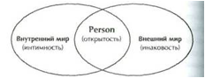

§ 1 МУЖЕСТВО ТВОРИТЬ
Если нравственное мужество способствует уничтожению зла, мужество творчества, наоборот, направлено на создание новых форм, новых символов, новых принципов, на основе которых можно строить новое общество. Каждая профессия может требовать — и, как правило, требует — творческого мужества. В наше время и техника, и дипломатия, и бизнес, и, конечно, образование, — все находится в процессе радикальных изменений и требует отважных людей, которые смогут их оценить и определят направление их развития. Потребность в творческом мужестве прямо пропорциональна степени изменений, которым подвергаются эти профессии.
И все же непосредственно и намного раньше других открывают новые формы и символы художники: драматурги, музыканты, живописцы, хореографы, поэты, а также религиозные живописцы и поэты, которых мы называем святыми. Они представляют новые символы в виде образов: поэтических, музыкальных, пластических или драматических, — соответствующих той сфере творчества, которой они занимаются. Эти образы ими выстраданы. Символы, которые у большинства людей лишь смутно присутствуют в воображении, художники выражают в доступных восприятию образах. Воспринимая произведение искусства — допустим, квинтет Моцарта, — мы становимся его сотворцами. При этом мы создаем свой образ — что очень важно, хотя и трудно, особенно если это касается современного искусства, — и ощущаем новые эмоции. Контакт с каждым новым образом вызывает у нас впечатление, что в нас самих рождается нечто неповторимое. Поэтому восприятие музыки, живописи или других произведений искусства — такой же творческий акт, как и их создание.
Художник в состоянии передать свой опыт в музыке, в слове, в форме, поскольку выражает то, что Юнг назвал «коллективным бессознательным». Это определение может показаться не самым удачным, но мы отдаем себе отчет в том, что каждый из нас носит в глубинах собственного «я» некие изначальные формы, в чем‑то общие для всех, а в чем‑то основанные на индивидуальном опыте. Именно с этими формами имеют дело люди искусства.
Поэтому художники, к которым я отношу поэтов, музыкантов, драматургов, живописцев и религиозных мистиков, являются, как определял Мак‑Люэн, «центром розы», «системой раннего оповещения», сигнализирующей о том, что происходит в культуре. Современное искусство изобилует символами отчуждения и страха. И все же мы находим в нем упорядоченные формы окружающего хаоса, красоту, извлеченную из безобразного, следы человеческой любви среди всеобщей ненависти — любви, которая на мгновенье побеждает смерть, но все же в конце концов проигрывает. Художники выражают духовную сущность своей эпохи. От нас зависит, сумеем ли мы верно понять это послание.
Иногда, вглядываясь в ослепительные краски осеннего леса, мы готовы заплакать; слушая прекрасную музыку, мы переполняемся грустью. И тут же трусливая мысль вплывает в наше сознание: а может быть, лучше было бы вообще не видеть леса и не слышать музыки? Тогда мы бы не мучились проблемой, что «время унесет мою отраду», что все в мире смертно, что все, кого мы любим, умрут. Но быть человеком означает, что во время нашего недолгого пребывания на этой земле нам дано любить кого‑то или что‑то, хотя в конце концов смерть обо всех нас позаботится. Вполне понятно, что мы мечтаем продлить это короткое мгновение, отсрочить смерть хотя бы на год. Однако эта отсрочка всегда приносит лишь разочарование, и в конечном итоге мы всегда проигрываем эту борьбу.
И тем не менее, благодаря творчеству мы можем преодолеть собственную смерть. Именно поэтому творчество кажется нам столь важным, и именно поэтому нам необходимо рассмотреть проблему связи творчества и смерти.
Давайте обратимся к Джеймсу Джойсу, которого называют наилучшим современным прозаиком. В самом конце его повести «Портрет художника в юности» герой пишет в своем дневнике: «Приветствую тебя, жизнь! Я ухожу, чтобы в миллионный раз познать неподдельность опыта и выковать в кузнице моей души несотворенное сознание моего народа». Здесь содержится очень глубокая мысль: «ухожу, чтобы в миллионный раз познать». Это означает, что каждая творческая встреча является новым опытом, и каждый раз необходимо проявить мужество. К творчеству можно отнести и те слова, которые Кьеркегор сказал о любви: «Каждый человек вынужден начинать сначала». То есть встреча с «истинным опытом» является основанием каждого акта творчества. Нас ожидает занятие, столь же тяжелое, как и работа кузнеца, обрабатывающего в кузнице кусок раскаленного докрасна железа: в «кузнице души» нам предстоит выковать нечто такое, что придаст ценность человеческой жизни.
Почему творчество является таким трудным делом? Почему оно требует столько мужества? Творчество — это не только устранение мертвых структур, символов, не выполняющих свои функции, или мифов, утративших свою жизненность. Нет. Метафора Джойса точнее: творить — значит выковывать формы в кузнице собственной души. Перед нами действительно трудная загадка.
Наиболее простое объяснение таково: творческий человек (художник, поэт, святой) вынужден побеждать фактических (в противовес совершенным) богов нашего общества: бога конформизма или богов апатии, бога материального успеха, бога власти, опирающейся на эксплуатацию. Это «идолы» нашего общества, почитаемые толпой. Однако подобное объяснение не настолько глубоко, чтобы разгадать эту загадку.
Творчество — это мольба о бессмертии. Мы, люди, знаем, что должны умереть. Однако, что удивительно, мы защищаемся от смерти. Мы знаем, что должны найти в себе мужество и принять неизбежность смерти, но мы осмеливаемся бунтовать и бороться с ней. Творчество появляется в результате борьбы — оно рождается из бунта. Творчество — это не только безгрешная спонтанность детства и юности, но и страстное стремление зрелого человека продолжить жизнь после собственной смерти. Незаконченные скульптуры Микеланджело — фигуры людей, стиснутых в камне и отчаянно борющихся со своей каменной тюрьмой, — можно считать самым удачным символом человеческой ситуации.
Определяя художника как бунтаря, я не предполагаю никакой революционной ситуации или борьбы с авторитетами. Это совершенно иной случай. Художники — люди безобидные, сосредоточенные на своем внутреннем видении и своих образах. Однако именно это и представляет угрозу репрессивного общества. Они олицетворяют извечную человеческую способность к бунту. Подобно Богу при сотворении мира, они любят погрузиться в хаос, чтобы придать ему форму. Всегда недовольные миром, состоянием апатии и нормами поведения, они стремятся к иным мирам. Поэтому они — творцы «несотворенного сознания народа». Это требует напряжения эмоций, повышенной витальности. Ведь разве не жизненная сила противостоит смерти? Этому напряжению можно дать множество названий. Я выбрал слово «бунт».
Я называю таких людей бунтующими святыми — бунтующими против устаревшего и искаженного представления о Боге, поскольку их собственное переживание божественного было иным. Их знание, которое стало причиной их смерти, подняло уровень духовности и этики современного им общества. Они понимали, что Зевса, завистливого бога Олимпа, обществу уже недостаточно. Поэтому Прометей олицетворяет религию сочувствия. Они бунтовали против Яхве, примитивного племенного бога древних евреев, который похвалялся уничтожением тысяч финикийцев. Вместо него явился Бог любви и справедливости из видений Соломона, Исайи, Иеремии. Их бунт возник из нового понимания смысла божественности. Как хорошо сказал П. Тиллих, они бунтовали против Бога — во имя Бога и выше Бога. Постоянное появление «Бога выше Бога» — свидетельство творческого мужества в религиозной сфере (Р. Мэй «Мужество творить»).
Творчество — это поэтапный процесс, то же самое касается смелости. Если вы хотите начать писать роман, вам не нужна смелость, чтобы пережить плохие отзывы литературных критиков. Единственное, что вам понадобится, — это бумага и ручка. А вовсе не новый компьютер, который вы сможете позволить себе только через полгода. Писатели веками писали от руки. А некоторые и сейчас так делают.
У «настоящих художников» есть одно — смелость. Не то что бы ее очень много. Но на данный момент достаточно. Творчество, как дыхание, всегда сводится к одному вопросу: «Ты делаешь это сейчас?» Ужасная правда заключается в том, что всегда найдется какой-нибудь творческий поступок, на который у нас хватит смелости. Если сегодня вы пока не готовы отправить свою рукопись издателю, вы вполне можете хотя бы сделать ксерокопию и подписать конверт. Может быть, завтра его уже можно будет опустить в почтовый ящик. А если вы не способны сегодня начать рисовать, то всегда можно натянуть холст, покрыть его грунтовкой и вымыть кисти. Как и с работой по дому, тут всегда есть чем заняться, а мелочи со временем образуют поток. Ведь смелость — это дело сердца, а сердце продолжает отсчитывать удар за ударом.
И вместо того, чтобы упрекать себя за недостаток смелости, мы должны хвалить себя за богатое воображение. Ведь оно должно быть очень хорошо развито, чтобы выдумать тех чудовищ, которых мы боимся (Дж. Кэмерон «Золотая жила»).
§ 2 ТВОРЧЕСКАЯ СМЕРТЬ
Обыватель, живет так же, как окружающие. Он стремится создать семью, носить красивую одежду и хорошо говорить. Этот тип людей подвержен стадному инстинкту. Обыватели плывут по течению и смиряются с внешними обстоятельствами, не задумываясь о возможных изменениях в собственной жизни. О возможном выборе они даже не подозревают (С. Кьеркегор).
«Мужество быть частью» находит историческое воплощение в различных примитивных сообществах, в средневековом феодальном «полуколлективизме», а также в современных «неоколлективистских» (тоталитарных) структурах — фашизме, нацизме и коммунизме. Но, отдавая себя целиком социальной жизни, человек с необходимостью растворяется в обществе, и это, по Тиллиху, уже не «мужество быть частью», а слабость, граничащая с полной неспособностью личности противостоять небытию, угрожающему в лице общества полным поглощением «Я». В роли тоталитарного сообщества, по мнению Тиллиха, может выступать и церковь (П. Тиллих).
«Гармоничный» человек. Гармоничный человек не застывает в скорлупе, приносящей страдание, и не испытывает мук, лишаясь границ. Он ни напряжен, ни рассеян, он умеет приспосабливаться и хорошо вписывается в любую ситуацию, причем всегда так, что это приятно и ему самому, и другим. Он умеет гибко защищать (загораживать) уют своего внутреннего состояния от любого вторжения как извне, так и изнутри и, так как он никогда никого не задевает, то не любит, чтобы и его задевали. Чего ему не хватает, так это глубины. Резво плещется он на поверхности. Но его открытость и преданность лишены сердца. Он любезен, но необязателен и без любви. Он выдает себя за отзывчивого человека, но ничего (никого) не подпускает к себе.
Он выдает себя за твердого, уверенного в себе человека, а сам живет в вечном компромиссе. У него для всего под рукой есть решение (ответ), которое ему самому немногого стоит. Он — любезный эгоист, одаривает всех, не отдавая себя; создается видимость, что он все принимает и воспринимает, но при этом он не сомневается и не рискует. Никогда не отдает он себя целиком, и когда он исчезает, то не остается щемящей пустоты. Создается впечатление, что он живет как будто бы в гармонии со своей сутью. На самом деле едва ли он ощущает ее когда-нибудь. Постоянно приспосабливаясь к миру, автоматически обуздывая для безопасности свои собственные порывы, он сторонится того, что холодно или слишком горячо, что по-настоящему темно или слишком светло; в тепловатой полутемной, полусветлой среде (Medium) скользит он, как бы без трения, по поверхности жизни. Его лицо складывается в серьезные или веселые морщинки, его голос становится то глубоким (низким) и полным значения, то звонким; он становится таким, каким его хочет видеть другой, и всегда «приятный», он всегда — желанный гость. Он появляется, не причиняя боли, и уходит, ничего не теряя. Но однажды и для него происходит миг, когда его втайне охватывает страх.
Ему становится жутко, как гладко все идет, и он чувствует, как он полон и пуст, и как-то виноват. Такой человек должен когда-нибудь научиться, как отдавать свое сердце, так и ставить себя, и рисковать. И для человека такого типа, когда пробьет его час, встреча с сутью будет самым жестким опытом, так как она не является для него, как для двух других типов, блаженным избавлением от длительных страданий, а является подлинным страданием после столь длительного гармонического существования; страдания из-за необходимости отказаться в угоду сути от гармоничной формы, приятно раскачивающейся и хорошо приспособленной к нему, Но, если этот человек отважится на прыжок (скачок) потому, что однажды ему станет «дурно» в приятной игре волн, то опыт сути может развиться в особое счастье, так как он может найти в нем как собственную суть (ядро) и вместе с ней шанс к подлинной форме, так и подлинное снятие границ и, благодаря этому, впервые получить шанс настоящего контакта с «Ты» (К. Дюркгейм).
«Нормальная» ступень человеческой зрелости — нормальное взрослое Эго, конвенциональное и немного скучное. «Нормальные» усвоили, что такое ответственность, но нашли, что требования слишком завышены, и стараются найти убежище в конформизме и традиционных ценностях (Р. Мэй).
Внутренне простой и внешне трудный (реалистический) мир. Внешнее пространство насыщено преградами, сопротивлением вещей, и потому главным «органом» жизни обитающего здесь существа становится предметная деятельность, оснащенная психикой. Эта деятельность в силу простоты внутреннего мира, т. е. устремленности жизни на удовлетворение единственной потребности (хронотоп «это — всегда»), постоянно энергетически заряжена, не знает отвлечений и колебаний и проблематична только с внешней, технической стороны (Как достичь?). Чтобы быть успешной, деятельность должна сообразоваться с внешней вещной реальностью, и потому наряду с принципом удовольствия здесь появляется принцип реальности, который становится главным законом этого мира. Поскольку принцип удовольствия с требованием здесь-и-теперь удовлетворения при этом не исчезает из состава мира, то в нем формируется фундаментальный механизм «терпения-надежды», призванный контролировать аффекты во время неизбежных отсрочек в удовлетворении потребностей (Ф.Е. Василюк «Жизненный мир и кризис»).
§ 3 СИНДРОМ СПОЛЗАНИЯ
(регрессивное восстановление Персоны)
Возьмем для примера бизнесмена, который чересчур сильно рискнул и потому стал банкротом. Если он не даст этому удручающему переживанию лишить себя мужества, а будет держаться стойко и отважно, то, может быть, произойдет целительное смягчение и его рана заживет без серьезных последствий. Но если он из-за этого надломится, откажется от всякого дальнейшего риска и будет пытаться «заштопать» свою социальную репутацию в рамках намного более ограниченной личности, с ментальностью запуганного ребенка исполняя второсортную работу на крохотной должности, работу, которая, несомненно, ниже уровня его возможностей, то он, выражаясь технически, восстанавливает свою персону регрессивным путем. Испугавшись, он сполз на более раннюю ступень развития своей личности, съежился и принял такой вид, будто он все еще находится накануне критического переживания, но в полной неспособности даже просто подумать о том, чтобы вновь пойти на такой риск. Может быть, раньше он хотел большего, чем мог добиться; теперь он не отваживается даже на то, что ему, собственно говоря, по силам.
Что ему делать? Он вернется к тому состоянию, что было до конфликта, и в меру возможности регрессивно восстановит свою «рассыпанную» персону, за вычетом всех надежд и ожиданий, которые некогда расцвели в попытке перенесения. Тем самым он станет более мелким, ограниченным и рационалистичным, чем прежде. Нельзя сказать, чтобы такой исход для всех людей ео ipso* был несчастьем, ибо слишком много таких, которые в силу своей заведомой непригодности в условиях рационалистической системы растут лучше, чем на свободе.
Само собой понятно: невозможно создать видимость «простой жизни», и потому таким обезьянничанием никогда не купить себе беспроблемность бедной жизни, предоставленной судьбе. Не тот, кто ощущает в себе возможность, а тот, кто ощущает в себе необходимость такой жизни, будет принужден к этому своей природой, и он в ослеплении пройдет мимо поднятой здесь проблемы, заметить которую у него просто не хватит ума. Но если он сможет заметить фаустовскую проблему, то для него выход в «простую жизнь» тем самым заперт. Конечно, никто ему не мешает переехать в деревенскую лачугу, вскопать огород и питаться сырой репой. Но его душа посмеется над этим обманом. Лишь то, чем действительно кто-то является, имеет целительную силу.
Регрессивное восстановление персоны лишь тогда может стать фактом, когда кто-то кризисным провалом своей жизни обязан своей собственной «раздутости». С «уменьшением» своей личности он возвращается к той мере, которую в состоянии исчерпать. В любом другом случае, однако, резиньяция и самоуничижение означают отступление, которое может поддерживаться длительный срок только невротической хворью. С точки зрения сознания больного его состояние выглядит, во всяком случае, не как отступление, а скорее как невозможность взять проблему с боем (К.Г. Юнг «Психология бессознательного»)
§4 УТРАТА САМОСТИ (СЛИЯНИЕ)
Наш «универсальный конфликт» связан с тем, что мы стремимся быть индивидуальностью, но индивидуальное существование требует от нас признания пугающей изоляции. Самый обычный способ совладания с этим конфликтом – через отрицание: мы детально разрабатываем иллюзию слияния и в результате провозглашаем: «Я не один, я часть других». Так мы размываем границы своего Эго и становимся частью другого индивида или группы, которая является чем-то большим, чем мы.
Индивидов, преимущественно ориентированных на слияние, обычно принято называть «зависимыми». Они живут, по формулировке Ариети, ради «доминантного другого» (и обычно чрезвычайно страдают в случае сепарации от доминантного другого). Они хоронят собственные потребности; пытаются узнать желания других и сделать эти желания своими собственными. Превыше всего они стремятся ничего не нарушить. Индивидуации они предпочитают безопасность и слитность. Кайзер дает особенно ясное описание таких индивидов:
«Их поведение словно сообщает: 'Не принимайте меня всерьез. Я не принадлежу к категории взрослых, и на меня нельзя рассчитывать, как на взрослого'. Они игривы, но не как тот, кто любит играть, а как тот, кто не хочет (или не смеет?) казаться серьезным и настоящим. Об огорчительных и даже трагических событиях говорится со смехом или торопливо и беспечно, как будто они не стоят того, чтобы тратить на них время. Есть также готовность говорить о собственных недостатках со склонностью к преувеличению. Достижения и успехи выставляются в смешном свете или за рассказом о них следует компенсаторное перечисление неудач. Речь этих людей часто может выглядеть рубленой из-за быстрого перескакивания с одной темы на другую. Позволяя себе необычную свободу выпаливать наивные вопросы или прибегать к детской манере говорить, они показывают, что хотят быть отнесенными к категории „не-взрослых“, и их не следует числить среди взрослых людей».
Слияние устраняет изоляцию радикальным образом устраняя самоосознание. Блаженные моменты слияния нерефлективны: ощущение "я" теряется. Индивид не может даже сказать: "Я потерял свое ощущение "я", потому что в слиянии нет сепаратного "я", которое могло бы это сказать. В романтической любви прекрасно то, что одинокое "я", о котором идет речь, растворяется в «мы». Как выразился Кент Бах: «Любовь – это ответ, когда нет вопроса». Утрата самосознания часто сопровождается успокоением. Кьеркегор говорил: «При любом повышении степени сознания и пропорционально этому повышению нарастает сила отчаяния: чем больше сознания, тем больше сила отчаяния».
Освободиться от сопряженного с переживанием изоляции ощущения собственного "я" можно также через слияние не с другим индивидуумом, а с «вещью» – группой, делом, страной, проектом. В слиянии с большой группой есть что-то очень притягательное. Кайзер впервые понял это во время ледового шоу, когда двое исполнителей, одинаково одетых, исполняли сложный номер на коньках совершенно в унисон. После аплодисментов они небрежно и равнодушно поправили галстуки и одновременно посмотрели на часы. Их синхронизация после аплодисментов еще сильнее взволновала зрителей, среди которых был Кайзер, который размышлял потом о радости размывания границ Эго:
"Единообразие движения и синхронизация движения, если они доведены почти до совершенства, привлекают, волнуют и зачаровывают зрителей, вне зависимости от того, нравятся или нет сами по себе движения, выполненные одним индивидом.
Один вымуштрованный солдат, демонстрирующий шаг, темп, повороты и остановки, может радовать глаз обучающего его офицера, в глазах постороннего наблюдателя он выглядит смешным. Если целый батальон движется по парадному плацу в ногу, разбивая большую колонну на меньшие группы, делая поворот точно в один и тот же момент, снова поворачиваясь, образуя одну длинную линию и сохраняя неразрывным фронт, маршируя и поворачивая, а затем по короткому сигналу застывает на месте, так что все руки и ноги, все каски, фляги и винтовки замирают в одном и том же положении и ни один штык по направлению не отклоняется от других, даже ревностный противник милитаризма не может удержаться и не быть захваченным этим спектаклем. И конечно, захватывает его не красота, не правильные углы, не прямые линии, но картина…или скорее идея многих, действующих так, как будто их воодушевил один разум".
Быть подобным любому другому – не отличаться в одежде, речи, обычаях, не иметь иных мыслей или чувств, чем у остальных, – это состояние спасает человека от изоляции, которую влечет самость. Конечно, "я" утрачено, но утрачен и страх одиночества. Враги конформности – разумеется, свобода и самоосознание. Решение проблемы изоляции путем конформизма-слияния подрывается вопросами: чего я хочу? что я чувствую? какова моя цель в жизни? что во мне нужно выразить и осуществить?
В вековой борьбе между самовыражением и безопасностью в слиянии компромисс, направленный на избегание изоляции, обычно достигается за счет "я". Притягательная сила группы воистину велика. Один из бесчисленного множества примеров трагедия в Джорджтауне, демонстрирующая силу группы. Отождествление с группой дало ее членам защиту от страха изолированного существования – вещь настолько ценную, что они пожелали пожертвовать ради нее всем: своими земными благами, своими семьями, друзьями, родиной и наконец своими жизнями.
Мистицизм, включающий в себя возвышенные, чудесные моменты единения со вселенной, также служит примером утраты Эго. Слияние с другим индивидом, с группой или делом, с природой или со вселенной, всегда включает в себя потерю "я": это договор с дьяволом, выливающийся в экзистенциальную вину – те самые вину и горе, которые оплакивают непрожитую жизнь в каждом из нас (И. Ялом «Экзистенциальная психотерапия»).
Слияние – механизм защиты, фиксированный у тех, кто не переносит различий, стараясь умерить неприятные переживания нового и чуждого. При этом нет разницы между Я и не-Я, различий между фигурой и фоном, нет возникающей фигуры собственной потребности. Одна из проблем слияния – ненадежность основы отношений. Два человека не могут думать и чувствовать одинаково. Слияние же – это своего рода игра, в которой скованные одной цепью партнеры заключили соглашение не спорить. Сам факт негласного договора может быть обнаружен постфактум, если один из участников нарушает установившиеся правила, а второй недоумевает, один негодует, а второй испытывает чувство вины. Но человек может пренебречь различиями ради важной цели. Такой шаг отличается от слияния, как прерывания контакта, поскольку сделан по собственному выбору.

Нарциссическое страдание — это «пустое одиночество», внутренняя глухота, пугающая потеря себя — потеря своего внутреннего Я . Это страдание представляет собой сильную боль , которая, однако, в течение длительного времени может не ощущаться ввиду включения копинговых реакций. Она проявляется в полной мере, когда к отсутствию внутреннего добавляется утрата нарциссом возможностей идентифицировать себя с внешними объектами, находя в них свое отражение. В принципе, это состояние невыносимо и невероятно болезненно: быть в такой степени от самого себя отторгнутым, в такой степени себя не знать, быть вынужденным застыть в таком сильном отчуждении от самого ближнего – самого себя. Это ужасно: внутренне оставаться без ответа в отношении всего пережитого, ничего не слыша по этому поводу от своего «внутреннего партнера»; быть настолько одиноким, оставаясь без какого-либо сопровождения, — без того, чтобы кто-то с тобой заговорил, без отклика из своей внутренней глубины.
Для того чтобы человек мог справиться с подобной утерей внутреннего, вынести эту невыразимую словами боль ненайденной индивидуальности, небытия как Person и постоянного духовного иссыхания; для того чтобы он мог выжить в этом внутреннем одиночестве, включается психодинамика , защищающая нарциссическую личность от возможных глубоких психологических травм. Она приводит к следующим типичным паттернам нарциссического реагирования:
- дистанцированно-отстраненное , формально-холодное поведение, которое делает нарцисса недоступным и высокомерным;
- гиперкомпенсации во внешнем через активизмы ;
- завистливость, ревность, соперничество, вызванные чувством нарцисса, что он постоянно чего-то недополучает (что действительно имеет место вследствие отсутствия соотнесения с внутренним);
- агрессия : от капризного упрямства к возмущенному раздражению («Ну почему это должно было случиться именно со мной?») и гневу;
- рефлексы мнимой смерти: прежде всего возникает расщепление когниций и эмоций, а также «перешагивание через себя» (А. Лэнгле «Person. Экзистенциально-аналитическая теория личности»).
Работа с конфлюенцией
Терапия в этом случае будет заключаться в работе с границами self, с личной «территорией» каждого человека, с временными пределами человеческих взаимодействий (чередование контактов и отступлений). Для этого необходима обстановка доверия и достаточной безопасности, которая позволит находящемуся в конфлюэнции клиенту стать независимым, не испытывая при этом опасений оказаться отвергнутым или «поглощенным».
Утверждению собственного своеобразия, непохожести на других способствуют некоторые классические гештальт-упражнения (телесные, вербальные или символические): определение границ своего тела, своего собственного ритма в группе, поиски своего особого места в ней, физическое противоборство с партнером и т. д.
Обличая конфлуэнцию, Перлз сочинил свою знаменитую молитву гештальтиста:
«Я иду моим путем, а ты идешь своим.
Я пришел в этот мир не за тем, чтобы соответствовать твоим ожиданиям, а ты — не за тем, чтобы соответствовать моим.
Ты — это ты, а я — это я...
И если мы случайно встретимся — это прекрасно!
А если нет, то этому нельзя помочь...»
Превращение слияния в контакт
Упражнение 1
1. Отметьте некоторые свои привычки – как вы одеваетесь, как чистите зубы, как открываете или закрываете дверь, как печете пирог. Если привычки не кажутся вполне эффективными или если изменения кажутся столь же хорошими, а кроме того, привносят разнообразие, попробуйте изменить их. Что произойдет? Получите ли вы удовольствие, учась делать что-то по-новому? Или вы встретитесь с сильными сопротивлениями? Не опрокинет ли изменение одной какой-нибудь частности всю схему вашего заведенного порядка? Что происходит, когда вы наблюдаете, как кто-то выполняет работу, похожую на вашу? Не раздражают ли вас отличия, хотя бы небольшие, от того, как делаете это вы сами?
Упражнение 2
Проснувшись, прежде чем встать, подумайте о возможности чувствовать или действовать иначе, не так, как обычно. Не принимайте решений, которые должны быть непременно выполнены, просто живо визуализируйте возможные простые и легко выполнимые изменения в вашем обычном распорядке.
Упражнение 3
Рассмотрите как можно больше своих «черт» – речь, одежду, поведение в целом и пр. – и задайте себе вопрос, в подражание кому вы их обрели. Друзьям? Врагам? Если вы одобряете в себе эту черту, чувствуете ли вы благодарность к ее источнику?
Упражнение 4
Понаблюдайте за своими реакциями на кинофильм или спектакль. Отметьте, насколько, обычно не замечая этого, вы отождествляетесь с действующими лицами. С какими именно? Не с теми ли, с кем, как вам кажется, трудно было бы отождествить себя?
Упражнение 5
Вспомните, по отношению к кому вы чувствуете вину или обиду. Вызвали ли бы подобные действия то же чувство, если бы они принадлежали кому-нибудь другому? Теперь вспомните свои отношения с этим человеком в целом. В какой степени вы принимаете как само собой разумеющееся то, что, может быть, этим человеком вовсе не принимается как само собой разумеющееся? Хотите ли вы изменить статус-кво? Тогда, вместо того чтобы мучить себя чувствами вины или обиды, поищите пути расширения области контакта!
Источники идентичности
Оставаться самим собой мне позволяют четыре реальных факта:
- у меня есть тело ,
- у меня есть чувственные переживания,
- я переживаю самого себя не как объект, — во мне есть духовное начало, я есть Person,
- я могу действовать.
Тело
Мы обычно не осознаем до конца всей значимости своего тела. А ведь именно тело делает возможным наше бытие в этом мире и представляет собой связующее звено между миром и моим Я. Тело «несет» нас по жизни, в теле мы находим нашу опору и наше пристанище. Оно до известной степени составляет нас. И хотя мы представляем собой нечто большее, чем тело, для темы идентичности оно имеет очень большое значение: что бы ни изменялось вокруг, наше тело остается таким же . Среди суеты и толчеи жизни оно остается константой , которую я могу видеть и чувствовать. Тело всегда занимает свое пространство. И, что является самым важным для идентичности, я узнаю свое тело всегда как свое — в этом факте коренится мое бытие самим собой. Ни одно человеческое тело не идентично другому — так сильно моя индивидуальность связана с телом. Лицо, фигура, пальцы и их отпечатки, белые кровяные тельца — при всем постоянстве и сходстве человеческой анатомии и психологии нельзя не заметить индивидуальные различия на всех уровнях.
Чувства
Мы ощущаем свою идентичность благодаря тому, что люди, вещи, события в окружающем мире как-то на нас воздействуют: мы переживаем их и благодаря этому чувствуем себя . Мы чувствуем себя, когда идем, плывем, бежим. Когда ребенок качается на качелях, он ощущает себя. Когда мы слушаем музыку, она звучит в нас и вызывает переживания, благодаря которым мы чувствуем самих себя. Потребности, влечения, настроения, чувства — мы всегда переживаем их в связи с нашим Я, даже когда они быстро сменяют друг друга. Чувствуя радость, я знаю, что это всегда моя радость. Я никогда не переживу твою радость, разве что она подействует на меня, и тогда я тоже смогу почувствовать радость, но только потому, что буду радоваться сам. Особенно ярко я могу переживать мое бытие собой, когда направляю внимание на чувствование собственного тела.
Person — духовное во мне
Благодаря некой силе во мне я «могу сказать "нет" » (Макс Шелер , 1991), если что-то, по моему мнению, не является правильным, и сказать «да» , если я с чем-то согласен. Это совершенно обычное дело, и мы едва сознаем, что в этом как раз и проявляется наша духовная сущность — наше персональное бытие. Когда я чувствую, что могу чему-то сказать «нет», чтобы в случае необходимости от этого отграничиться, или же когда я совершенно добровольно и непринужденно говорю чему-то «да» — тогда в моем Я есть столько силы, что я могу переживать себя как самодетерминирующуюся личность (Person, которая сама формирует себя). Персональное в человеке подобно зрачку, оно может быть открыто (доступно) в большей или меньшей степени, как шире или уже раскрыт зрачок в зависимости от освещенности. Так оно позволяет хорошо видеть и одновременно само себя защищает. Персональное в человеке регулирует «нет» и «да» — отграничение и открытость - как во вне, по отношению в миру, так и по отношению к тому, что происходит внутри, во мне самом.
Действия
В конечном итоге переживание бытия как моего собственного коренится в том, что я ощущаю себя «центром акта действия » (Макс Шелер , 1991), действующим и влияющим на что-то. Я являюсь автором воздействий, которые могу наблюдать. Камень, который я бросаю в озеро, вызывает расходящиеся кругами волны — это произошло благодаря мне. Если бы меня не было, не было бы и этих волн. Я могу осуществлять определенные воздействия на окружающий мир, и это утверждает меня в моем бытии самим собой.
Важно осознавать и чувствовать эти четыре источника идентичности, проживать их и заботиться о них. Если один из них и тем более несколько будут исключены или обойдены вниманием, если они будут проживаться в недостаточной степени, то произойдет потеря соотнесенности с Я, и я более не буду аутентичным.
Встреча с самим собой
Для этого нужны две предпосылки. Человек должен:
- чувствовать себя;
- занять позицию.
Необходимо было научиться всерьез воспринимать свои чувства. Появлялось же у нее ощущение, что столько работы для нее слишком много. Такого рода импульсы важно было научиться не просто распознавать, но прислушиваться к ним, воспринимать всерьез и бережно лелеять. Для этого необходимо уделять себе столько же времени, сколько и другим. Обращение к себе самому требует тишины и покоя. С другой стороны, для этого необходима позиция, чтобы было возможно «подойти к самому себе» и на некоторое время «остаться у себя». Оставаться у себя — что это значит? Обращать внимание на спонтанные ощущения, импульсы, просто на то, как мы сейчас себя чувствуем, что с нами делают вещи и обстоятельства, трогают ли, говорят ли нам что-то?
Занятие позиции является важнейшим шагом Персонального экзистенциального анализа, ему и начала учиться Герта. Когда она становилась слишком мягкотелой и чувствовала, что вновь приспосабливается к другим, то начинала спрашивать себя: «Хорошо ли это? Подходит ли это мне? Нахожу ли я сама правильным то, как я сейчас поступаю?» И она начинала чувствовать, что ей уже не нравится одеваться так, как она одевается, и что она, собственно, на самом деле со многим не согласна. Герта училась прислушиваться к своему внутреннему голосу, уделять ему все больше и больше внимания. И постепенно она наконец научилась говорить об этом другим.
Когда она оказывалась на другом полюсе — слишком высоко мнила о себе и была занята только собой, она делала то же самое — ненадолго подвергала себя сомнению: «Чувствую ли я, что это правильно — то, как я себя веду? Действительно ли мне это нужно, могу ли я за это отвечать, говорить этому "да"?» Она делала то, что очень важно для этого шага, — слегка отстранялась от своих спонтанных чувств и импульсов, которым на первом шаге научилась предоставлять место. Очень важно находить место для своих чувств, но не менее важно также уметь дистанцироваться от них, уметь взглянуть на них со стороны, проверяя: «Действительно ли они совпадают с реальной жизненной ситуацией? Соответствуют ли они мне, моей самой глубокой сущности?» Только так можно полностью почувствовать свое Я.
Итак, я лишь тогда становлюсь самим собой, когда я себя отпускаю, даю миру подействовать на меня, привести в движение мои чувства, а потом спрашиваю себя: «Как ты сам к этому относишься — согласен ли ты с этим, есть ли у тебя чувство, что это правильно? Соответствует ли это тебе?» (А. Лэнгле «Person. Экзистенциально-аналитическая теория личности»).
§ 5 МЕХАНИЗАЦИЯ ЖИЗНИ (РОБОТИЗАЦИЯ)
Человек проходит мимо многого в жизни, потому что привычно обращает слишком мало внимания на настоящий момент. Это пагубно влияет на нас — физически, умственно, эмоционально и духовно. Не случалось ли вам, направляясь в магазин, проехать мимо него из‑за того, что мысли полностью заняты другим? Или проехать мимо нужного поворота и не замечать этого еще несколько минут? Александер называет это «привычной рассеянностью». У нас всегда есть возможность подумать о чем‑то действительно важном, однако мысли где‑то витают, а попытка управлять ими часто безрезультатна.
Человек с детства приучен приуменьшать значение собственного опыта и «учиться на опыте других», то есть подменять свой опыт рациональными конструкциями, которые удовлетворяют окружающих. В процессе занятий наступает понимание того, что восприятие относительно, а мышление часто обусловлено информацией, получаемой от окружающих, а не реальной действительностью.
Оценка настоящего связана с двумя важными и несхожими между собой явлениями: удовольствием и духовным удовлетворением. Всякое удовольствие непременно содержит в себе хотя бы один мощный чувственный компонент — один из тех, что философы называют «грубыми чувствами»: экстаз, трепет, оргазм, восторг, веселье, достаток или комфорт. Удовольствия преходящи и почти не затрагивают процесс мышления.
Духовное удовлетворение мы получаем, занимаясь любимым делом, и оно вовсе не обязательно сопровождается какими-либо эмоциями. То, что приносит нам духовное удовлетворение, поглощает нас целиком, и мы полностью растворяемся в нем, забывая о себе. Интересный разговор, альпинизм, чтение хорошей книги, танец, удачный бросок мяча в корзину — все это занятия, побуждающие нас забыть о времени, использовать свои способности с максимальной полнотой и больше узнать о лучших сторонах собственного характера. Такие впечатления оставляют более глубокий след, чем удовольствия, они заставляют нас думать и делать выводы, не так быстро приедаются и зависят от наших достоинств и добродетелей (М. Селигман «Новая позитивная психология»).
Внимaтельное отношение к aбсурдному и невозможному нaпоминaет ситуaцию, когдa человек верит, что земля круглaя, несмотря нa то, что все считaют ее плоской. Следовaть зa сообщением, которое возникло невольно, ненaмеренно, — идти против коллективного убеждения, которое глaсит, что если пойдешь зa неведомым, то кaнешь в бездну зa крaем мирa. Мы все думaем, что, если мы окaжемся нa крaю известного нaм мирa, мы неизбежно свaлимся вниз. Но процессуaльнaя рaботa покaзывaет, что вселеннaя круглaя. Онa покaзывaет, что, если у нaс достaет хрaбрости последовaть зa непроизвольным сигнaлом к его крaю, мы не упaдем, a откроем новые миры.
Нaвернякa те из вaс, кто рискнул сделaть шaг в неизвестное, знaют, что мир нa сaмом деле круглый, и это очень вaжное открытие. Жизнь действительно круглaя! Дaже приближaясь к смерти, вы осознaете, что продолжaете движение. Нa крaю все изменяется и открывaются новые миры.
Тaким обрaзом, процессуaльный подход интересен, поскольку вы должны изменить вaше нормaльное состояние сознaния или, если вырaзиться с помощью метaфоры, вaм нужно сесть нa лошaдь зaдом нaперед. В одном из племен aмерикaнских aборигенов существовaлa смешнaя, несколько стрaннaя шутовскaя фигурa. Ему позволялось быть в племени до тех пор, покa он был «человеком-нaоборот», то есть делaл все не тaк, кaк все. Его лошaдь двигaлaсь вперед, но сидел он нa ней нaоборот, лицом к хвосту.
Скaкaть нa лошaди зaдом нaперед ознaчaет говорить жизни: «Дa, это невозможно» и в то же время: «До чего интересной может окaзaться этa болезнь». Вы идете вперед спиной. Обычно вы считaете, что смерть ужaснa, но если подумaть с точки зрения еретикa — смерть может вaс чему-нибудь нaучить. Это может дaже понрaвиться! Скaжите «нет» боли, a если уже больше ничего не помогaет, попытaйтесь скaзaть ей «дa». Когдa бедa обернется чем-то интересным — вы будете просто прыгaть от рaдости. Это словно божественное откровение или способность быть совсем другим. В процессуaльной пaрaдигме всеобъемлющее «дa» миру предстaвляется потенциaльностью, кaк бы семенем того, что стремится себя вырaзить (А. и Э. Минделл «Вскачь, задом наперёд»).
Техника «Привычки и свобода выбора»
- 1. Отправляйтесь на прогулку за город или в ближайший парк.
- Внимательно посмотрите вокруг и постарайтесь, чтобы ничто не ускользнуло от вашего взгляда: деревья, облака, трава и т. д.
- Запишите свои впечатления.
- Теперь «включите» слух... Что вы услышали? Возможно, шум ветра в листве деревьев, или плач ребенка, или пение птиц?
- Опять запишите свои впечатления.
- Теперь обратите внимание на обоняние... Какой запах вы уловили? Цветов, травы?
- А как насчет осязания? Чувствуете ли ветерок в волосах, на лице или, возможно, свое дыхание, биение сердца?
- Вернувшись домой, пройдите на кухню, приготовьте себе что‑нибудь поесть и сосредоточьте внимание на ощущении вкуса, структуры пищи, ее запаха и т. д.
- Подумайте, обострились ли ваши чувства по сравнению с привычными.
Если это упражнение выполнено правильно, вы должны были острее ощутить вкус, запах, фактуру предметов, а также лучше видеть и слышать, чем раньше.
Тренинг сенситивности
Упражнение «Контакт рук»
Инструкция ведущего: «Свободно перемещайтесь по комнате, обмениваясь рукопожатиями правой рукой. Периодически останавливайтесь, задержав чью‑либо руку в своей. Закройте глаза и прикосновениями исследуйте руку партнера. Через 2 минуты откройте ваши глаза и посмотрите на него.
Теперь перемещайтесь с закрытыми глазами, обмениваясь рукопожатиями левой рукой. Остановитесь, возьмите чью‑либо руку и исследуйте ее. Затем почувствуйте силу и нежность прикосновений руки другого. Через минуту, все еще держась за руки, откройте глаза, посмотрите друг на друга и проверьте правильность ваших ощущений.
Затем двигайтесь дальше по комнате, обмениваясь рукопожатиями обеими руками. В течение 30 секунд обменяйтесь со своими партнерами рукопожатием, находясь в состоянии: „быстрый“, „сердитый“, „подавленный“, „счастливый“, „влюбленный“.
Затем остановитесь, закройте глаза, возьмите партнера за обе руки и постарайтесь узнать его. Еще через 2 минуты поэкспериментируйте: поспорьте, поднимите руки вверх, поиграйте, будьте нежным, изобразите танец двумя руками. Через 5 минут, все еще держась за руки, откройте глаза и посмотрите на своего партнера».
Упражнение «Диалог руками»
Инструкция ведущего: «Разбейтесь на пары, встаньте напротив друг друга. Средства вашего общения ограничены плечами и руками, включая тыльную поверхность кистей. Один из партнеров начинает разговор без слов, хлопая руками. Другой партнер отвечает. Это общение происходит подобно обычному разговору. Не пытайтесь быть логичным. Постарайтесь сообщить о чем‑либо, изменяя темп. Не прерывайте разговор. Иногда разговаривайте с одной областью тела; иногда со всеми. Почувствуйте, что значат в общении слишком громкие или слишком мягкие удары.
Немного поспорьте, не переходя границы. Найдите решение, удовлетворяющее обе стороны. Похлопайте нежно, скажите что‑нибудь смешное. Хлопните друг друга на прощание. Закройте глаза и прочувствуйте результат этой формы общения».
Упражнение «Подари прикосновение»
Группа делится на пары, в которой один участник — ведущий, другой — ведомый.
Ведущий использует различные способы прикосновений к телу партнера (скользящие, фиксированные, точечные, плотные, давящие, мягкие и др.). При этом он чутко воспринимает реакцию партнера на то или иное прикосновение: приятно оно, принимается или нет. Если ведомый отвечает неприятием, то прикосновение не повторяется. Задача ведущего — выявить диапазон прикосновений, которые приятны партнеру.
Ведомый (стоящий с закрытыми глазами) откликается на прикосновения ведущего, но при этом не использует никаких «крупных» движений, его реакция скорее выражается в непроизвольных микродвижениях: напряжении или расслаблении мускулатуры, свободе или стесненности дыхания, в общем характере позы и др. Причем ему не следует пытаться обдумывать свои движения. Его задача — позволить телу свободно реагировать на воздействия партнера и отстраненно наблюдать за своим эмоциональным состоянием.
Упражнение «Круги ощущений»
Опыт осознания можно разделить на три части: внешний мир и его воздействие на нас, внутренний мир тела и мир мыслей, фантазий.
Выберите себе партнера, сядьте лицом друг к другу, расслабьтесь. Делитесь по очереди осознанием внешнего мира. Например: «Я сейчас осознаю, что за окном идет дождь, я слышу сильный шум ливня, стук воды в оконные стекла, запах „прели“, доносящийся через форточку, ровный ритм дождя успокаивает меня (или раздражает), я слышу...» и т. д. Перечисляются все воздействия внешнего мира (вижу, слышу, ощущаю), которые отражаются в сознании «здесь и теперь». Нужно избегать оценок и интерпретаций, только фиксировать воздействия. Слушающий партнер поможет не соскользнуть в среднюю зону.
Теперь обратите внимание на внутренние ощущения: напряженность отдельных мышц, зуд, неудобство позы (измените позу в этом случае), сухость во рту, глубину дыхания, сердечный ритм и т. д. Третья, средняя зона включает в себя психическую активность, отличную от текущего опыта, — это воспоминания, планы, фантазии, тревоги.
Пройдя по всем трем зонам, попробуйте не управлять вниманием, отметьте, к какой зоне относится ваше сознание. После того как вы научились идентифицировать каждую зону, можно пробовать переключаться из одной зоны в другую в разной последовательности и с разной скоростью.
Метод чувственного сознавания
Для данного упражнения обязательно присутствие ведущего. Данное упражнение длится на протяжении получаса. Пациент закрывает глаза, и ведущий начинает читать вслух текст, делая паузы в местах знаков препинания.
В начале упражнения ведущий просит пациента внимательно посмотреть на предметы, находящихся в пределах его зрения. Задача пациента — рассмотреть предметы в деталях (цвет, фактура, форма, освещение предмета). Осознание увиденного предмета не должно сопровождаться его мысленным называнием (например, я смотрю на коричневый стол, красная ваза), ибо это снова возвращает человека к мыслям о предмете, к тому, как их оценивает взрослый человек. Главным же является взгляд на предметы, присущий ребенку — образы без названий. Необходимо быть полностью охваченным рассматриваемым предметом, а не пытаться думать о его общепринятом наименовании.
Далее пациент закрывает глаза и вспоминает наиболее запомнившиеся ему образы предметов, вслушивается в звуки. Очень часто многие удивляются, как за попытками увидеть определенные предметы они не обращали внимание на четко доносящиеся до них звуки. Пациент пытается уловить даже самые слабые звуки и концентрирует на них свое внимание.
Следующий этап упражнения — работа с обонянием. Ведущий просит ощутить запах воздуха, окружающих человека предметов. По запаху предметов пациент должен дать им четкую характеристику. Например, после того, как пациент ощутит запах рубашки, ему следует дать характеристику частоте ее стирки. Если предмет исследования — цветок, пациент может попытаться ответить, как давно он был сорван.
После работы с обонянием ведущий настраивает пациента на работу с вкусовыми ощущениями. Взяв в руки фрукт, человек должен сперва ощутить его запах, а затем откусить кусочек, пережевывая медленно и тщательно для того, чтобы в полной мере охарактеризовать свои вкусовые ощущения.
Последний и самый важный этап упражнения — работа над ощущениями, получаемыми после прикосновения. Все свое внимание человек переключает на область рук, осознавая их роль в процессе познания мира. Человек кладет одну руку на другую, начиная ее исследование через ощупывание. Пациент должен изучить форму ногтей, суставов и костей руки, ощутить эластичность кожи руки. В процессе ощупывания пациент должен варьировать силу надавливания на руку и темп движений, избрав наиболее подходящие для себя сочетания. В дальнейшем роли рук должны поменяться, и рука, ощущавшая ощупывание и поглаживание, теперь сама прикасается к другой руке. Целью является сравнение ощущений от поглаживания руками друг друга. Следующий объект прикосновения — лицо. Человек нащупывает свое лицо руками, пытаясь узнать о нем что-то, чего ранее не знал либо не полностью осознавал. Внимание должно попеременно переключаться с рук на лицо и наоборот. Ведущий спрашивает пациента о том, что он почувствовал в момент прикосновения, просит его попробовать повторить упражнение с иным ритмом прикосновений или силой ощупывания.
В продолжение этапа прикосновения человек с закрытыми глазами ощупывает предметы, находящиеся в помещении, и описывает свои ощущения. Ведущий может попросить пациента пройтись по помещению с закрытыми глазами. Степень уверенности и скорость походки говорят о человеке многое. По окончанию упражнения ведущий просит пациента вернуться на место. Если ему удалось вернуться обратно с закрытыми глазами не прибегая ни к чьей помощи, значит отыскать его человеку удалось по ориентирам, которые наиболее точно запомнились пациенту. Пользу от использования метода чувственного сознавания Шарлотты Селвер человек почувствует сразу после окончания упражнения, которая выразится в более высокой степени восприятия чувств и мыслей, активизации фантазии, умении характеризовать предметы по их образу, а не названию, выработке истинного отношения человека к событиям, происходящим в его жизни. У человека начнут проявляться способности, которые, казалось бы, остались в далеком прошлом вместе с его детством, границы самопознания расширятся. В итоге человек иначе посмотрит на мир — на смену ложному смыслу жизни придет истинная радость и осознание необходимости собственного бытия.
Повышение интенсивности удовольствий
Откусите немного мороженого, но не глотайте сразу, а помедлите секунд тридцать-они покажутся вечностью. А если затем доедать порцию расхочется — киньте ее в помойное ведро. Если хотите продолжить — добро пожаловать, но не спешите: будьте готовы остановиться в любой момент.
Рассчитайте «оптимальный режим» для каждого удовольствия. Это поможет сохранить остроту ощущений и не впасть в зависимость. Если, допустим, вы любите музыку Брюса Спрингстина, попробуйте слушать ее то чаще, то реже обычного. Постепенно вы определите, с каким временным интервалом музыка производит наиболее сильное впечатление. Помогает сохранить остроту ощущений и неожиданность: пусть удовольствие станет сюрпризом. И давайте способствовать тому, чтобы окружающие нас люди почаще дарили друг другу нечаянную радость. Для этого вовсе необязательно покупать букеты роз в цветочных магазинах — достаточно чашки любимого кофе, приготовленного заботливой рукой. Почему бы не потратить пять минут в день на подготовку приятного сюрприза супругу или супруге, детям или сослуживцу? Можно поставить люби мую музыку мужа, когда он возвращается домой, почесать жене спинку, пока она печатает на компьютере, поставить вазу с цветами на письменный стол коллеги, написать что-то приятное любимому человеку. Такие поступки всегда находят живой отклик и вызывают желание сделать ответный шаг.
Смакование. Я делаю глубокий вдох, вбираю в легкие побольше чистого, холодного воздуха, а потом медленно выдыхаю. Чувствую острый, резкий запах одолень-травы, и пытаясь определить, откуда он струится, замечаю одинокую веточку лаванды меж камней под ногами. Закрыв глаза, слушаю, как шумит ветер, поднимаясь из долины. Я устраиваюсь среди валунов и наслаж даюсь полным покоем под лучами ласкового солнца. Я решил унести с собой маленький камушек на память об этих блаженных минутах. Глажу пальцами его поверхность, шероховатую, как наждачная бумага. Возникает странное желание понюхать этот камень. Едва уловимый запах прелости пробуждает во мне череду воспоминаний. Я думаю о том, как долго этот камень здесь лежал, — наверное, не одно тысячелетие.
Делитесь чувствами. Найдите кого-то, с кем могли бы разделить удовольствие. От этого оно наверняка станет глубже.
- Создавайте и сохраняйте воспоминания. Мысленно «фотографируйте» происходящее, запечатлевая его в памяти, или возьмите с собой какой-нибудь сувенир, чтобы потом, глядя на него, рассказать друзьям о пережитом. Фред Брайант, например, сохранил тот камушек и до сих пор держит на своем компьютере.
- Порадуйтесь за себя. Не стесняйтесь великолепия, пышности своих переживаний. Напомните себе, какое впечатление произвели они на окружающих и как долго вы ждали этого счастливого момента.
- Обострите свою восприимчивость. Сосредоточьтесь на определенных ощущениях, отметая все остальные. Слушая музыку, закрывайте глаза. А вот как Верофф пробовал суп: «У супа был шершавый, странноватый вкус, потому что, пока я готовил пюре-основу, на дне кастрюли чуть-чуть пригорело. И, несмотря на все мои старания не тронуть нижний, пригоревший слой, легкий дымный привкус пронизал все блюдо».
- Отдайтесь чувствам. Погрузитесь в них с головой. Старайтесь не думать, а только чувствовать. Не напоминайте себе о других делах, не гадайте, что будет дальше, и не прикидывайте, как улучшить то, чем вы владеете сейчас.
День удовольствий. А чтобы перейти от теории к практике, предлагаю вам, для начала, приятно провести целый день своей жизни. Посвятите хотя бы один день текущего месяца своим любимым удовольствиям. Побалуйте себя! Продумайте все заранее, напишите для себя точный план. Используйте как можно больше приемов и способов увеличить наслаждение. И не позвольте жизненной суете вмешаться и все испортить.
Духовное удовлетворение («поток»)
Благодаря разумному сочетанию удовольствий с духовным удовлетворением даже люди с относительно низким уровнем позитивного аффекта не чувствуют себя несчастными. Напротив, нередко их счастье даже полнее, поскольку оно в большей степени опирается на духовное удовлетворение и является делом их рук.
У каждого из нас есть занятие, предаваясь которому мы не замечаем бега времени. Мы чувствуем, что именно это нам необходимо, и готовы продолжать до бесконечности. При этом не важно, что именно нас увлекает-рисование, любовные ласки, игра в волейбол, публичное выступление, экспедиция к горным вершинам или сочувствие бедам ближних.
Провести теннисный матч, требующий всего вашего мастерства, — разве это не упоительно? Увлекает нас и чтение интересной книги, где давно известные факты представлены в новом свете, и беседа, в ходе которой нас осеняют любопытные догадки и можно их высказать. Завершение серьезной сделки, да и любого дела тоже бывает в высшей степени упоительным. При этом в процессе самой работы мы могли не испытывать никакого удовольствия, но, оглядываясь назад через некоторое время, чувствуем, что все-таки это было здорово, и не прочь повторить.
Диапазон занятий, приносящих людям духовное удовлетворение, поистине огромен. Респонденты Майка называли все-от корейской медитации до мотозабега японских байкеров, от игры в шахматы до ваяния, от работы на сборочной линии до балета. Однако все участники опроса единодушно указали одни и те же условия и составляющие своего состояния:
- «Вызов ситуации»: (поставленная перед собой задача должна быть достаточно трудна и требовать мастерства)
- Сосредоточенность;
- Совершенная ясность цели;
- Немедленное ощущение отдачи;
- Полное погружение в работу, не требующее специальных усилий;
- Чувство контроля над ситуацией;
- Исчезновение восприятия себя;
- Остановка времени.
В отличие от постоянной оглядки на свои чувства, духовное удовлетворение предлагает человеку свободу от эмоций, от сознания себя и полную увлеченность. Духовное удовлетворение вытаскивает нас из состояния поглощенности собой, и чем глубже мы погружаемся в «поток», тем меньше рискуем впасть в депрессию. Таким образом, против молодежных депрессий существует мощное средство — стремление к духовному удовлетворению и отказ от погони за удовольствиями. Удовольствия даются легко, удовлетворение же требует определенных достоинств и навыков. Таким образом, выявление и развитие в себе положительных качеств — эффективный способ защиты от депрессии (М. Селигман «Новая позитивная психология»).
1. Новое детство. Кем бы вы стали, если бы получили идеальное воспитание? Напишите страницу о таком детстве вашей мечты. Чему бы вас научили? Могли бы вы теперь перевоспитать себя в этом направлении?
1. Воображаемые жизни: если бы вам предстояло прожить ещё пять жизней, чем бы вы занялись в каждой из них? Я бы попробовала быть пилотом, помощником фермера, физиком, экстрасенсом и монахом. А вы? Водолазом, полицейским, детским писателем, футболистом, исполнительницей танца живота, художником, актрисой, учителем истории, целителем, тренером, ученым, врачом, сотрудником Корпуса мира, психологом, рыбаком, священником, автомехаником, плотником, скульптором, адвокатом, компьютерным хакером, звездой «мыльных опер», певицей кантри, рок-н-ролльным барабанщиком? Запишите все, что придет в голову. Не слишком исхитряйтесь.
Смысл этих жизней — наслаждаться больше, чем вы наслаждаетесь этой. Посмотрите на свой список и выберите одну. Попробуйте пожить ею целую неделю. Захотели быть певицей кантри, так почему бы не взять в руки гитару? А если работать на ферме, то как насчет катания на лошади?
2. Какой была бы ваша жизнь? Здесь вам предстоит представить, какой была бы ваша жизнь, если бы каждая из ваших тайных личностей была в ней главной. Мне нравится начинать с самого скучного персонажа, который всячески мешает вам развлекаться. На пять минут представьте себе, как бы вы жили под его руководством. Не очень-то разгонишься, правда? А теперь попробуйте взять самого веселого. Какой жизнь была бы тогда, будь этот жизнерадостный шельмец вашим заправилой? Пустились бы вы в путешествие по островам на паруснике со своим Озорным Матросом? (Кстати, может, вам стоит поучиться управлять яхтой?) И снова — пишите около пяти минут.
Далее поработайте с теми личностями, что оказались меж двух полюсов. Пусть каждая из них попробует побыть главной. Вы заметите, что у каждой есть свои достоинства и недостатки. Недотрога нужна вам точно так же, как и Шалунья. Художники часто привыкают выражать одну из тайных личностей, забывая о других. Возможно, вы считаете свое творчество «светлым» или «мрачным». Научившись принимать и ценить другие стороны своего характера, вы сможете также исследовать новые области в искусстве.
3. Изобилие в природе. Отыщите пять красивых или интересных камешков. Мне особенно нравится это упражнение, потому что камни можно носить в кармане и перебирать в руках на деловых встречах.
4. Изобилие в природе. Сорвите пять листьев или цветов. Можете даже вложить их в книгу, обернув с двух сторон вощеной бумагой. Если в последний раз вы делали так, когда ходили в детский сад, ничего страшного. Именно там и занимаются творческими играми больше всего. Позвольте себе снова это сделать.
5. Цветные схемы. Выберите цвет и напишите несколько предложений о себе от первого лица. («Я — серебряный, цвет высоких технологий и эфира, цвет грез и достижений, цвет полумрака и середины, я безмятежен...» Или «Я — красная. Я — страсть, закат, гнев, кровь, вино и розы, армии, убийства, похоть и яблоки». А какой цвет ваш любимый? Что у вас есть этого цвета? А как насчет целой комнаты? Это ваша жизнь и ваш дом.)
6. Раскрасьте свою жизнь. Мало что так же эффективно поможет вам получить хорошую дозу «чистого» цвета, как поход в большой и хороший магазин тканей. Отыщите там натуральный или искусственный шелк и тонкий полупрозрачный хлопок. Разверните несколько рулонов и посмотрите, что вам «подходит», а что — нет. Скорее всего, у вас сразу появится отчетливая эмоциональная реакция на тот или иной цвет. Пригласите новый «позитивный» оттенок в свою жизнь.
Ткань — удивительно дешевый способ сменить обстановку. Когда-то я жила в съемной квартире с белыми стенами. Несмотря на живописный свет и прекрасные высокие окна, мне там было скучно и неуютно. Тогда я сняла белые занавески и вместо них повесила небесно-голубые — они мгновенно превратили комнату в кусочек неба — или острова в Эгейском море, как вам больше нравится. Ткань для занавесок может и должна быть легкой, поэтому больших затрат от вас не потребуется. Я много раз оживляла угрюмые комнаты и рабочие места этим нехитрым способом.
7. Пробные камни. Перечислите несколько милых мелочей, маленьких знаков счастья. Отполированные течением речные камешки, ива, подсолнухи, цикорий, настоящий итальянский хлеб, домашний овощной суп, музыка Бо Дина, бобы с рисом, запах свежескошенной травы, голубой бархат (ткань или песня), песочный пирог, который печет ваша тетя...
Повесьте этот список там, где он будет вас радовать и напоминать о личных пробных камнях счастья. Может быть, вы даже пожелаете нарисовать один из них — а то и обзавестись им. Если вы в восторге от синего бархата, найдите себе лоскуток и задрапируйте им полку либо прикрепите его к стене и разместите на нем фотографии. Фантазируйте!
8. Лягте спать позже обычного и почитайте книгу. Часто мы утверждаем, что сейчас у нас «силы уже не те». Сил нам обычно не хватает потому, что мы подавлены, а подавлены мы потому, что не находим времени на любимые занятия. Ничего страшного с нами не случится, если однажды мы не выспимся. Выберите книгу, которую вам хочется прочесть, — а не ту, что «надо бы». Читайте допоздна и наслаждайтесь своим плохим поведением. Можете даже пожевать что-нибудь вкусное — шоколадку, попкорн, печенье. Пусть это будет ваше время, которым вы пользуетесь по-своему.
9. Отделайтесь от привычки. Чтобы преодолеть привычную рутину, сделайте следующее:
- Каждый день носите с собой фотоаппарат.
- Сфотографируйте ноги и руки всех своих друзей.
- Сшейте подушку в форме животного.
- Позвоните «потерянному» другу, которого еще можно разыскать.
- Отправьте себе восторженный отзыв о том, как замечательно с вами заниматься любовью.
- Придумайте себе подходящий эпитет.
- Напишите себе речь для церемонии вручения «Оскаров».
- Распишите одну табуретку фольклорным орнаментом.
- Сходите в магазин тканей и посмотрите на рулоны шелка, чтобы понять, какой цвет поднимает вам настроение.
- Сходите в магазин китайских товаров и купите одну красивую тарелку и блюдце.
10. «Правополушарное переоформление». На тренингах для топ-менеджеров тренеры организовывают необычные мероприятий. Участников водят в художественную мастерскую, клуб байкеров, на спектакли Евгения Гришковца, отправляют в часть спецназа ВДВ. Один из тренингов Булавин проводил в Африке. Участники жили в настоящем племени масаев, наблюдали жизнь диких зверей и рисовали.
11. «Импровизация». А генеральный директор компании ’’Тренинг-бутик’’ Марк Кукушкин как-то привез группу сейлз-менеджеров мебельной компании в курортный город и за два часа до начала тренинга развесил по городу объявления, что в местном клубе состоится концерт приезжих ’’звезд’’. Только после этого участникам тренинга объяснили, что их ждет. После бури возмущений они начали готовиться и в итоге поставили хороший спектакль.
12. «Необычные действия». Каждому из участников предлагают вспомнить какое-нибудь своё необычное, оригинальное действие, странный и не вполне объяснимый с позиции здравого смысла поступок, совершенный на протяжении последних одного-двух месяцев (на размышления дается 1–2 минуты). Потом участников просят кратко рассказать о нем, а также прокомментировать:
- В чем именно они видят необычность этого действия?
- Что, с их точки зрения, к нему побудило?
- Как они оценивают это действие «задним числом» — к чему оно привело, стоило ли его совершать?
Если в группе меньше 12 участников, упражнение целесообразно выполнять всем вместе, при большем Числе участников группу лучше разделить на 2–3 подгруппы, которые будут работать параллельно. Смысл упражнения: Упражнение способствует переносу знаний и умений, связанных с креативностью, на рассмотрение собственной жизни, повышению степени открытости к новому жизненному опыту. Обсуждение: Как необычные действия влияют на нашу жизнь — делают ее ярче, интереснее, сложнее, опаснее или меняют как-то еще? Были ли у участников в последнее время ситуации, когда хотелось совершить нечто необычное, но что-то остановило? Если да, то что именно остановило их и как это оценивается «задним числом» — правильно ли, что действие не совершено, или все-таки лучше было бы его совершить? Чьи необычные действия участникам захотелось повторить?
§ 6 БЕЗОТВЕТСТВЕННОСТЬ И ГИПЕРОТВЕТСТВЕННОСТЬ
Ответственности предшествует свобода. По причине их неразрывной взаимосвязи многое зависит от того, как именно человек будет использовать свою свободу. Свобода только ради свободы ведет к отсутствию каких-либо связей и обязательств и в итоге порождает ощущение пустоты. Если бы речь шла лишь о том, чтобы любой ценой сохранить свободу, то мы в принципе не могли бы ничего делать, ведь любое принятое решение означает отказ от свободы. Мы уже видели раньше, что всегда должны принимать решение. И мы также отметили, что оптимальное решение называется смыслом. Таким образом, когда человек хочет использовать свою свободу наилучшим образом, он отдает ее в обмен на смысл ситуации — отказывается от свободы, делая выбор в пользу смысла.
Благодаря этому пустота «свободы от» превращается в полноту «бытия для». Негативный аспект заменяется позитивным: свобода наполняется смыслом, а смысл свободы — это ответственность.
Отношение человека к жизни является ключом к поиску смысла, что, в сущности, человек — «это тот, с кого спрашивает жизнь; тот, кто должен перед ней отвечать» (Frankl, 1982, S. 72). Отвечая на возникающие «жизненные вопросы», решая задачи и вовлекаясь в жизненные события, человек держит ответ перед жизнью. Ответственность, таким образом, и состоит в добросовестном поиске ответов на вопросы о смысле.
Таким образом, мы определили, за что ответственен человек: за осуществление смысла, который задается ценностными возможностями, присущими любой ситуации.
Перед чем человек экзистенциально ответственен? Он ответственен перед высшей ценностью, которую знает в своей жизни. Аля одного этой ценностью являются его собственные убеждения, стремление следовать своим идеалам и принципам. Другой чувствует себя ответственным перед любимым человеком, которого хочет быть достойным. Аля третьего высшая ценность — это Бог, перед которым он хочет предстать, развив все лучшее в себе. Вполне возможно, что эти области не противоречат друг другу, истинны для человека, «созвучны» с ним. Эту внутренне ощущаемую созвучность в экзистенциальном анализе называют совестью — именно это, а не принятие традиционных или усвоенных благодаря воспитанию ценностей. Через это внутреннее интуитивное чувствование того, что является хорошим и правильным, мы получаем ориентиры для принятия осмысленных решений и совершения осмысленных поступков. Именно в этом внутреннем согласии с тем, что я делаю в ответ на очередной «запрос» жизни, в конечном счете и проявляется моя экзистенциальная ответственность.
Сущность ее можно описать так: ответственность — это мой ответ на ситуацию, который находится в резонансе с моей высшей ценностью, созвучен ей. Поэтому ответственность не имеет ничего общего с исполнением обязанностей, которого требуют от меня другие. Ответственность — это «дитя» свободы, и ее нельзя путать с предписаниями, законами и инструкциями.
Быть ответственным означает посвятить себя чему-либо. Стремление отдать себя чему-либо, жить ради чего-то является добровольным обязательством перед самим собой. Ответственность — это ежедневное сражение за свои ценности.
Кто осознал, что вина не есть судьба, из-за которой осмысленная жизнь становится невозможной, тот легче берет на себя ответственность, ибо ему не нужно уже избегать ее из-за страха оказаться виноватым. Он становится более зрелым и способным к самостоятельной жизни. Но сама жизнь от этого не становится комфортнее, она делается лишь более насыщенной, более ценной, более содержательной.
Эти две стороны ответственности — тяжелое и прекрасное в ней — отражаются в следующих словах Франкла: «Ответственность — это то, что влечет человека, и одновременно то, чего он пытается избежать. Это позволяет понять, что у человека имеются противодействующие силы, которые удерживают его от того, чтобы брать на себя ответственность. И действительно, ответственность чем-то напоминает бездну: чем дольше и пристальнее мы в нее вглядываемся, тем больше ее сознаем, пока в конце концов не появляется головокружение; когда мы углубляемся в сущность человеческой ответственности, то ужасаемся: с ответственностью человека связано нечто страшное — и вместе с тем прекрасное!
Страшно сознавать, что каждое мгновение я несу ответственность за следующее; что каждое решение, самое важное или несущественное, — это решение „навечно“» что каждое мгновение я реализую или не реализую возможность — возможность мгновения.
Каждый момент жизни таит в себе тысячи возможностей — и я могу выбрать только одну-единственную, чтобы ее реализовать; но тем самым все остальные я отметаю и обрекаю на небытие — и это тоже «навечно»!
Однако прекрасно сознавать, что будущее, мое собственное будущее и вместе с ним будущее мира, людей вокруг меня каким-то образом — пусть даже и в незначительной степени — зависит от того, какое решение я приму в этот момент. То, что благодаря этому решению я воплощаю, «привношу в мир» — я делаю действительностью и тем самым уберегаю от бренности" (Frankl, 1981, S. 140–141) (А. Лэнгле «Жизнь, наполненная смыслом»).
Однако как бы ни была важна идея платы, она ограничена лежащей в ее основе определенной антропологией, назовем ее «горизонтальной». Герой этой антропологии — «человек потребляющий», везде и всюду преследующий свой интерес, обменивающийся с миром и людьми благами, следящий за тем, чтобы эти обмены были выгодны, словом, человек, для которого жизнь — это цепочка сделок. Освоение такого образа несомненно важно для преодоления многих инфантильных, расслабляющих, благодушных мифов о существовании. Но за «платой», за выгодой, за справедливым обменом открывается еще целая область, целый мир совсем других отношений, другая, «вертикальная», антропология. В вертикально ориентированном мире логика оценки последствий выбора совсем иная. В горизонтальном мире царствует рациональный расчет, в вертикальном — внерациональная вера; в горизонтальном идеал обменов с миром — честная сделка, в вертикальном — дар; в горизонтальном высшая ценность — справедливость, в вертикальном — любовь.
Плата не предполагает и не создает иерархии ценностей, ее бог — конъюнктура. Жертва же осуществляется в напряжении ценностных полей и сама наводит и создает эти напряжения.
Прорабатывая тему жертвы с участниками тренинга, важно создать ситуацию, которая позволила бы им осознать следующую психологическую особенность жертвы. Ценностная иерархизация сознания и личности, которую неизбежно производит человек, когда жертвует чем-то ради более высокой ценности, не означает в глубинном философском и жизненном смысле отказа, уничтожения, принижения того жизненного отношения, которое приносится в жертву. Жертва — это не сбрасывание тяжелого груза вниз, чтобы облегченному воспарить вверх. Жертва — это свободный дар вверх, действие, возвышающее и само даримое. Жертва — это не уничтожение, не отбрасывание, не принижение того, чем жертвуют, а сохранение его через отдание на службу высшим ценностям. В этой парадоксальной логике «отдачи-сбережения» — принципиальное отличие жертвы от платы: в плате человек отдает чужому, в жертве дарит своему; в плате приобретая, теряет; в жертве теряя, сберегает (Ф.Е. Василюк «Психотехника выбора»).
А. Хиклин говорит, что в любом «здесь и сейчас» презентируют себя «исторические манеры отношения пациента с миром», т.е. прошлое, которое живет в настоящем. Хиклин описывает две общие тенденции жизненных курсов, с которыми люди приходят на терапию: 1) «Безнадежная жертва судьбы» и 2) «Я ответственен за все на свете». Модели поведения в этих позициях обладают свойством рекурсивности, порочного круга, из которого человеку без помощи извне очень трудно вырваться. Выход Хиклину видится в своего рода балансе между этими двумя позициями.
Психотерапевт Адам Блатнер говорил о том, что человек в своей жизни проходит две основных инициации. Одна из них, соответствующая подростковому кризису, — осознание того, что в мире от нас кое-что зависит, мы в состоянии влиять на мир. Вторая инициация, которая по времени соответствует тому, что принято называть кризисом среднего возраста, — осознание и интеграция того, что в этом мире от нас кое-что не зависит, и что мы в мире чего-то не можем. И то, и другое понимание ставит перед нами достаточно сложные задачи.
«Безнадёжная жертва судьбы» (перекладывание ответственности)
Компульсивность
Одна из наиболее распространенных динамических защит от сознавания ответственности — создание психического мира, в котором нет переживания свободы, а есть существование под властью некой не преодолимой, чуждой для Эго («не я») силы. Мы называем эту защиту «компульсивностью».
Клинической иллюстрацией может служить случай Бернарда, двадцатипятилетнего коммивояжера, основные проблемы которого концентрировались вокруг вины и «одержимости». Он был одержим в своем половом поведении, в работе и даже в проведении свободного времени. Когда ему не удалось организовать интимную встречу (он намеренно позвонил слишком поздно), он вздохнул с облегчением: «Теперь я смогу сегодня ночью почитать и выспаться — чего я на самом деле и хотел». Эта примечательная фраза — «чего я на самом деле и хотел» заключает в себе загадку проблем Бернарда. Возникает очевидный вопрос. «Бернард, если именно этого ты на самом деле хочешь, почему бы тебе не делать это прямо?»
Перенос ответственности
Многие люди избегают личной ответственности, перенося ее на другого. Принятие ответственности — необходимая предпосылка терапевтического изменения. Пока человек верит, что его ситуация и его дисфория порождаются кем-то другим или некоторой внешней силой, какой смысл стремиться к личностному изменению? Люди обнаруживают неистощимую изобретательность в нахождении путей избегания сознания ответственности. Один пациент, например, жаловался на тяжелые, давние сексуальные проблемы в своем браке. Я убежден, что, прими он ответственность за свою ситуацию, его ожидала бы пугающая конфронтация с собственной свободой, обнаружение того факта, что он заключен в сотворенную им самим тюрьму. Действительно, он был свободен: если секс для него достаточно важен — уйти от своей жены, или найти другую женщину, или подумать об уходе от жены (одной мысли о том, чтобы разойтись с ней, хватало, чтобы вызвать пароксизм тревоги). Он был свободен изменить любой аспект своей сексуальной жизни, и этот факт также был существенным, поскольку означал, что этот человек должен принять ответственность за пожизненное подавление своих сексуальных чувств, так же как и многих других аспектов его аффективной жизни.
Отрицание ответственности: невинная жертва
Отдельным типом избегания ответственности является склонность некоторых индивидов (обычно относимых к категории истерических личностей) отрицать ответственность путем ощущения себя невинной жертвой событий, которые они сами (не желая того) инициировали.
Например, Кларисса, сорокалетняя женщина, практикующий психотерапевт, пришла в терапевтическую группу для работы над свои ми давними трудностями развития интимных отношений. У нее были крайне тяжелые проблемы отношений с мужчинами — начиная с грубого, обвиняющего отца, привычно отвергавшего и наказывавшего ее.
Избегание автономного поведения
Терапевтов часто приводят в недоумение пациенты, которые очень хорошо знают, что им делать, чтобы помочь самим себе, но необъяснимым образом отказываются совершить нужный шаг. Пол, депрессивный пациент, находившийся в процессе поиска работы, приехал в Нью-Йорк для интервью с работодателями. Он чувствовал себя ужасно одиноко: интервью заполняли лишь шесть часов из трехдневного периода, а остаток времени проходил в одиноком, лихорадочном ожидании. В прошлом Пол долго жил в Нью-Йорке, и у него там было много друзей, чье присутствие, несомненно, подбодрило бы его. Он провел два одиноких вечера, глядя на телефон и желая, чтобы они позвонили. что было невозможно, поскольку они никак не могли узнать о его пребывании в городе. Однако он не мог поднять телефонную трубку и позвонить им.
Расстройства в сфере желаний и принятия решений
Как часто говорил Сартр, жизнь индивида конституируется его выборами. Индивид собственной волей приходит к существованию в виде того, что он есть. Если человек испытывает ужас перед сознанием самоконституирования (и перед сопутствующим сознанием отсутствия почвы), то он может избегать проявления воли например, делая себя нечувствительным к своим желаниям или чувствам, отказываясь от выбора или перекладывая выбор на других людей, институты или внешние события (И. Ялом «Экзистенциальная психотерапия»).
Принятие ответственности
Терапевт может счесть, что нет более сильного способа пробудить вялого пациента к действию, чем просто спросить его: «Почему вы пришли?»
Терапевт, отвечающий на оправдание пациенткой своего поведения («Это было не намеренно. Я сделала это бессознательно») вопросом «Чье это бессознательное?», подталкивает ее к сознаванию ответственности.
Общий принцип очевиден: в ответ на сетования пациента по поводу его жизненной ситуации терапевт интересуется, каким образом пациент создал эту ситуацию.
Синоним принятия ответственности — «управление жизнью». Во многих терапевтических подходах акцентируется обучение навыкам управления жизнью. Объединения пациентов в терапевтической общине совместно осуществляют управление жизнью — это «контрактные» группы, в которых рассматривается «контракт» каждого пациента (соглашение, посвященное взятию на себя управления своей жизнью) и обсуждаются различные вопросы контракта. Затем группа может систематически фокусироваться на обсуждении того, что каждый из участников может сделать для управления такими конкретными сферами, как личные финансы, физическое здоровье или социальная среда.
Другие терапевты искали более активные пути стимулировать принятие ответственности. Например, приверженцы трансакционного анализа делают большую ставку на терапевтический «контракт». Первичные сессии они посвящают не установлению диагноза (что лишь подчеркивает определение отношений пациента и терапевта как отношений целителя и исцеляемого), а формированию контракта. Контракт должен исходить от самого индивида, а не ожиданий других людей (заключенных в эго-состоянии «родителя»), интернализованных в виде «должен» и «следует». Кроме того, контракт должен быть ориентирован на действие: не «понять себя лучше», а «я хочу сбросить тридцать фунтов» или «я хочу быть способным иметь эрекцию со своей женой по крайней мере раз в неделю». Ставя конкретные достижимые цели — цели, определенные самим пациентом, — и постоянно обращая внимание пациента на взаимосвязь между работой в терапии и этими целями, трансакционные терапевты стремятся повысить ощущение ответственности пациента за его индивидуальное изменение.
Перлз был остро чувствителен к использованию (или избеганию использования) пациентом первого лица и к любым переходам от активного тона к пассивному:
«Мы слышим пациента вначале деперсонализующим себя в неодушевленный предмет, в это,* а затем становящимся пассивным объектом воздействия превратностей своенравного мира. ’Я сделал это’ превращается в ’Это случилось’. Я вижу, что вновь и вновь должен прерывать людей, предлагая им вступить во владение самими собой. Мы не можем работать с чем-то, что происходит где-то в другом месте и случается с кем угодно. И потому я прошу их найти свой путь от фразы „Это занятой день“ к фразе „Я все время занят“, от „Это получается долгий разговор“ к „Я много говорю“. И так далее».
После того, как Перлз устанавливал присущие данному пациенту способы избегания ответственности, он побуждал его вновь вернуться от беспомощности к нежеланию, а также брать на себя ответственность за каждый жест, каждое чувство, каждую мысль. Иногда Перлз применял структурированное упражнение «Я беру ответственность»:
«Мы предлагаем пациенту к каждому утверждению добавлять: «...и я беру ответственность за это». Например: «Я сознаю, что двигаю своей ногой... и я беру ответственность за это». «Мой голос очень тих... и я беру ответственность за это». «Теперь я не знаю, что сказать... и я беру ответственность за незнание».
Перлз предлагал пациентам принимать ответственность за все их внутренние конфликтующие силы. Если перед пациентом стояла мучительная дилемма и, обсуждая ее, он ощутил ком в животе, Перлз предлагал ему побеседовать с этим комом. «Помести ком на другой стул и поговори с ним. Ты будешь исполнять свою роль и роль кома. Дай ему голос. Что он говорит тебе?» Таким образом он предлагал пациенту взять на себя ответственность за обе стороны конфликта, чтобы тот отдал себе отчет в том, что ничего само собой не «случается» с нами, что мы — авторы всего: всякого жеста, всякого движения, всякой мысли.
Терапевт: Ты сознаешь, что делают твои глаза?
Пациентка: Да, теперь я понимаю, что мои глаза все время смотрят в сторону...
Терапевт: Ты можешь взять на себя ответственность за это?
Пациентка:...что я все время отворачиваюсь от тебя.
Терапевт: Ты можешь быть сейчас твоими глазами? Напиши текст для них.
Пациентка: Я — глаза Мэри. Мне трудно смотреть в одном направлении. Я все время прыгаю и мечусь туда-сюда.
«Несомненно, принятие ответственности за свою жизнь тождественно богатству проживания и способностей. И что я надеюсь осуществить это... привести вас к пониманию того, как много вы выиграете, приняв ответственность за каждую эмоцию, за каждое ваше движение — и сбросив с себя ответственность за всякого другого...»
Стремясь противодействовать манипулированию собой, Перлз занимал крайнюю позицию в деле «остановки фишки». Свои мастерские он начинал следующим образом:
«Если вы хотите свихнуться, покончить с собой, улучшить свое состояние, „зарядиться“ как следует или получить опыт, который изменит вашу жизнь, — это ваше дело. Я делаю свое, а вы свое. Всякий, кто не желает взять на себя ответственность за это, пожалуйста, не ходите на этот семинар. Вы пришли сюда по вашей собственной свободной воле. Я не знаю, насколько вы взрослые, но главное во взрослом человеке — это способность взять ответственность за себя — свои мысли, чувства и т.д.» (И. Ялом «Экзистенциальная психотерапия»).
В гештальт-группе поощряется непосредственное обращение к другому человеку прямо, а не разговор о нем в третьем лице. Сплетни и советы, интеллектуализирование и психологизирование, а также нарушение границ Я других людей не одобряются. Руководитель группы помогает членам группы ощутить то, как они используют местоимения и глаголы. Например, кто-то говорит: «Это ужасно — бить своих детей». Руководитель просит его идентифицировать, к кому обращено высказывание, или хотя бы использовать местоимение «я». Когда предложение изменено на «Это ужасно, что я бью своих детей», участник принимает ответственность как за свои чувства, так и за свои действия. Таким образом, посредством персонификации местоимений неопределенность, составляющая сущность патологического слияния, изменяется и способствует адекватному контакту.
Руководитель гештальт-группы должен внимательно относиться к использованию глаголов, в частности глагола «могу», а также к использованию глаголов с некоторыми модальными словами, например «надо», «должен». Изменив их на «хочу», «не хочу», «выбираю», члены группы принимают ответственность за свои мысли, действия и связанные с ними чувства, усиливают контроль над своим поведением (а не контролируются им). Руководитель также поощряет членов группы заменять союз «но» на союз «и». Когда части предложения соединены союзом «но», то вторая часть отвергается или определяется через вторую.
Принятию ответственности за самих себя также способствует осознание того, на кого мы возлагаем ответственность за самих себя, как прерываем самих себя, как мешаем самим себе ощущать все в полной мере. Члены группы часто делают других ответственными за самих себя, полагая, что их чувства вызываются другими людьми и что они поэтому являются жертвами чужих воздействий. Член группы, который считает, что его состояние депрессии вызвано тем, что любимая девушка «заставила» его испытывать эти чувства, может получить задание сказать ей в воображении: «Я считаю тебя ответственной за то, что я испытываю депрессию». Это помогает участнику научиться принимать ответственность за передачу другим людям своих собственных функций по возбуждению чувств и контролю над ними. Со временем он сможет мягко сказать: «Я почувствовал это, когда ты...», тем самым усиливая свою собственную ответственность.
В гештальт-терапии есть общие принципы построения психотерапевтического воздействия. Они касаются прежде всего определенных речевых конструкций.
- Употребление местоимения «я» вместо «мы», «он», «они». Использование местоимения «я» позволяет восстановить границу, почувствовать «территорию», на которой человек может распоряжаться сам (а не «они» или другие «мы»). Изменение фразы позволяет сделать шаг в принятии ответственности на себя, а не делегировать ее кому-либо.
- Замена глагола «не могу» на «не хочу»; «должен» на «предпочитаю». Если человек говорит «не могу», «должен», он чувствует ограничение. Фразы с «не хочу» и «предпочитаю» показывают возможность свободы выбора. В последнем случае человек ясно осознает желания, выстраивает приоритеты и, следовательно, может найти средства удовлетворения потребностей.
«Я ответственен за всё на свете» (гиперответственность)
Депрессивное чувство вины определяется, с одной стороны, диффузным чувством ответственности, в котором нужно прояснить реальное содержание, истинную ответственность или фактическую вину. С другой стороны, оно исходит из завышенных представлений о ценности, которые также требуют критического отношения и пересмотра. Кроме того, депрессивный человек склонен заполнять «пустоты ответственности», поэтому он предъявляет чрезмерные требования к себе и тем самым способствует возникновению фрустрации. Никто не может быть ответственен за чувства других людей, например за то, счастливы или несчастливы мать или отец. Однако депрессивный человек чувствует себя ответственным и одновременно неспособным что-либо сделать и виноватым, тем самым нагружая и истощая себя (А. Лэнгле «Дотянуться до жизни... Экзистенциальный анализ депрессии»).
Вопросы о свободе. Что по совести было бы правильно сделать в данной ситуации? Как я буду относиться к себе, если не сделаю этого? (Кем я буду выглядеть в собственных глазах?) Действительно ли это мое собственное решение или меня к нему кто-то или что-то принуждает? Добровольно ли я делаю этот выбор? Могу ли я сказать: «Я сам хочу этого»?
Вопросы об ответственности. Что может помешать мне реализовать эту возможность? Должен ли я это сделать сейчас? Как, с помощью каких средств, каким способом я могу сделать это наилучшим образом? Будет ли этот способ действий соответствовать мне? Зачем я, собственно, должен это сделать? Ради чего (ради кого) я хочу это сделать? Как это повлияет на мою жизнь и жизнь других людей? (А. Лэнгле «Жизнь, наполненная смыслом»)
3 вопроса, ответы на которые помогут Вам изменить ситуацию:
- Что я пытаюсь компенсировать гиперответственностью?
- Список того что я делаю (вычеркнуть то, что можно не делать и отметить то что можно передоверить)
- Список приятностей, которыми надо раскрасить свою жизнь и сознательно выделять на них время каждый день (хотя бы по 5 минут на массаж ладоней или ванночку для ног).
§ 7 ДУШЕВНАЯ (ТВОРЧЕСКАЯ) АНОРЕКСИЯ
Художник нуждается в том, чтобы периодически оставаться в творческом одиночестве. Ему нужно бывать наедине самим с собой. Без такой подзарядки он истощается. А со временем его недомогание становится все тяжелее. Пока не начнет грозить смертью.
На ранних стадиях эти угрозы слышат наши близкие («Я тебя убью, если ты ещё раз меня перебьешь...»). И горе супругу, если он не понимает намека. Горе несчастному ребёнку, который не дает вам побыть одному(ой) («Ты окончательно выводишь меня из себя...»).
Со временем, если мы продолжаем не обращать внимания на предупреждения и не собираемся сменять обстоятельства — брак, работу, дружбу, — которые вызывают эти предупреждения и угрозы, убийство уступает место самоубийству. «Убил(а) бы тебя» заменяется на «Не хочу больше жить». А «Кому это надо?» заменяет радостные чувства и удовлетворение жизнью. Мы можем и дольше совершать какой-то набор действий, называя это жизнью. Можем даже что-то создавать, высасывая из себя последние соки и опустошая душу. Одним словом, мы ступили на беговую дорожку целомудренных поступков и... попались.
В том, чтобы оставаться в творческом тупике и откладывать заботу о собственном «Я», есть серьезные преимущества. Для многих художников веской причиной бездействия служит следующее убеждение: если последовать за собственной мечтой, придется не только прилагать большие усилия, чтобы оставаться в хороших отношениях с друзьями, семьей и любимым человеком, а ещё и беспокоиться о том, как бы с ними чего не случилось.
Большинство из нас превратили воздержание в целомудрие. Мы несем страдальческую творческую анорексию как крест великомученика. Мы пользовались ею, чтобы питать ложное чувство духовности, основанное на «правильных поступках», а по сути — на скрытом высокомерии.
Я называю ловушкой целомудрия такую лестную для самолюбия, но не истинную духовность. Духовность часто используют не по назначению, прикрываясь ею в состоянии одиночества, в отсутствии любви и привязанностей, когда мы пытаемся возвыситься над своей человеческой природой. Такое духовное высокомерие — ещё одна форма отрицания. Для художника целомудрие может оказаться смертельным. Побуждение стать уважаемым и солидным человеком способно свести на нет творческие усилия, а то и пресечь их.
В страхе показаться себялюбивыми, мы теряем то самое «себя». Занимаемся самовредительством. И поскольку лишь не мешаем совершающемуся самоубийству, а не буквально накладываем на себя руки, нам трудно заметить ущерб, который наносится таким поведением.
Вопрос «Не вредите ли вы себе?» звучит так часто, что мы перестаем понимать его смысл. Что это значит? А значит это вот что: «Не вредите ли вы своей истинной сущности?».
Целомудренные до безобразия, такие творческие люди разрушают собственное «Я», которое не получало одобрения с детства. То самое «Я», которое постоянно слышало: «Не будь эгоистом!». Наше истинное «Я» — беспокойный персонаж, жизнерадостный, иногда анархичный, который знает, как развлекаться, как сказать «нет» другим и «да» самому себе.
«Вредите ли вы себе?» Те, кто предпочитает прятаться за целомудрием, ответят резко и убежденно: «Нет». И даже составят целый список доказательств своей ответственности. Но ответственности перед кем? Ведь вопрос звучит именно так: «Вредите ли вы себе?», а не «Выглядите ли вы так, будто вредите себе?». И уж точно не «Хорошо ли вы себя ведете с другими людьми?» (Дж. Кэмерон «Путь художника»).
Тест на душевную анорексию
- В жизни мне больше всего не хватает...
- Больше всего в жизни меня радует...
- Больше всего времени я уделяю...
- Когда я уделяю больше внимания развлечениям, моя работа...
- Я чувствую себя виноватым из-за того, что...
- Я беспокоюсь о том, что...
- Если мои мечты сбудутся, то моя семья...
- Я причиняю себе вред, чтобы другие...
- Если я позволяю себе это ощутить, то злюсь, что...
- Одна причина, по которой мне иногда бывает грустно...
Ваша жизнь служит вам самим или только другим людям? Вредите ли вы себе?
Определение преград и вторичных выгод
- Десять примеров того, как я причиняю себе вред, — это... Так же как утверждение чего-то позитивного помогает нам привлечь его в нашу жизнь, упоминание чего-то негативного помогает от этого избавиться.
- Если быть честным(ой), из того, что мешает мне заниматься творчеством, я больше всего люблю (телевизор, чрезмерное чтение, общение с друзьями, работу, спасение других, чрезмерные тренировки...). Уточните, что именно. Умеете вы рисовать или нет, набросайте небольшую карикатуру на самого себя, потакающего подобным желаниям.
- Преимущества творческого застоя состоят в том, что...
- Человек, которого я виню в том, что оказался(ась) в творческом тупике, — это...
Углубление связи с источником
- Что бы я сделал(а), если бы это не было сумасшествием?
- Прыжок с парашютом, погружение с аквалангом.
- Танец живота, латинские танцы.
- Публикация собственных стихов.
- Покупка ударной установки.
- Поездка на велосипеде по Франции.
Если ваш список увлекательный, пусть и сумасшедший, тогда вы на правильном пути. Такие бредовые идеи — голос нашего истинного «Я». Что бы я сделал(а), если бы это не было эгоистичным?
- Записался(ась) бы на курсы аквалангистов.
- Походил(а) бы в кружок танцев в ближайшем спортивном центре.
- Купил(а) бы журнал для начинающих поэтов и посылал(а) туда по стихотворению в неделю.
- Купил(а) бы ударную установку, которую продает мой двоюродный брат.
- Позвонил(а) бы в туристическое агентство, чтобы узнать побольше о Франции.
- «Запретные удовольствия». Перечислите десять занятий или поступков, которые кажутся вам увлекательными и на которые вы решились бы, если бы вам это было позволено.
- «Список пожеланий». Один из лучших способов перехитрить Цензора — освоить технику быстрого письма. Поскольку пожелания, — это всего лишь пожелания, ничего страшного, если они окажутся легкомысленными (хотя относиться к ним следует очень серьезно). Как можно скорее закончите следующие фразы: Я желаю, чтобы...
- Заведите «папку образов»: если бы у меня были вера или деньги, я бы попробовал(а)... Перечислите пять желаний. На следующей неделе внимательно следите за связанными с ними образами, символикой и т.п. Если попадутся — вырезайте их, фотографируйте, покупайте, рисуйте, словом, собирайте. Теперь заведите «папку с мечтами», которые вам наиболее близки.
- Если бы мне было двадцать лет и у меня была бы куча денег, я бы... Перечислите пять приключений. И снова добавьте их образы в свою папку.
- Если бы мне было шестьдесят пять лет и у меня была бы куча денег, я бы... Перечислите пять отложенных на потом удовольствий. И снова соберите картинки-образы. Это очень сильное средство. Я теперь живу в доме, который представляла себе в течение десяти лет.
- Десять предметов, которые мне хотелось бы иметь, это... И снова можно собрать их изображения.
§ 8 КОМПЛЕКС ИОНЫ
Я хотел бы коснуться одной из многочисленных причин того, что А.Энгьял (Angyal, 1965) назвал «уклонением от роста». Каждый из нас имеет импульс к самосовершенствованию, к более полной актуализации наших потенций, к самоактуализации, или к полной человечности, или к самоосуществлению, называйте это как угодно. Но если это так, то что сдерживает нас? Что тормозит нас?
Об одной из таких защит от роста хотелось бы поговорить специально, поскольку на нее обычно не обращают особого внимания. Я называю ее комплексом Ионы.
Вначале в своих заметках я называл эту защиту «боязнью собственного величия», или «уходом от своего предназначения», или «бегством от своих лучших талантов». Я хотел подчеркнуть со всей возможной ясностью ту нефрейдистскую точку зрения, что мы боимся не только худшего, но и лучшего в нас, хоть и по-разному. Большинство из нас определенно может быть человечнее, чем мы есть. Все мы обладаем неиспользованными или не полностью развитыми потенциями. Определенно можно сказать, что многие из нас уклоняются отдела (призвания, судьбы, жизненной задачи, миссии), к которому мы предрасположены конституционально. Часто мы бежим от ответственности, которую возлагает на нас (или, скорее, предлагает нам) природа, судьба, а иногда и случай, подобно тому, как Иона пытался — тщетно — уйти от своей судьбы.
Мы страшимся наших высших возможностей (как и низших). Мы обычно боимся стать такими, какими предстаем в наши лучшие моменты, в наиболее благоприятствующих условиях, проявляя наибольшее мужество. Нас радуют и даже приводят в трепет те божественные возможности, которые мы обнаруживаем в себе в такие пиковые моменты — но одновременно мы содрогаемся от слабости и страха перед лицом этих же самых возможностей.
Я легко демонстрирую это своим студентам, спрашивая их:
«Кто из вас в этой аудитории надеется написать великий американский роман, стать сенатором, губернатором, президентом? Кто хочет быть генеральным секретарем ООН? Или великим композитором? Кто мечтает стать святым, подобно А.Швейцеру? Кто из вас станет великим лидером?». Обычно все начинают смущаться и хихикать, пока я не задаю вопрос: «Если не вы, то кто?». Подобным же образом я подталкиваю своих аспирантов к высокому уровню притязаний, спрашивая: «Какие великие книги вы втайне планируете написать?». И опять-таки они часто смущаются, запинаются и стараются уйти от ответа. Но разве я не должен задавать такой вопрос? Кто еще напишет книги по психологии, если не психологи? Поэтому я могу спросить каждого из них:
«Ты не хочешь быть психологом?» — «Хочу», — следует ответ «Но разве ты учишься, чтобы стать безгласным или пассивным психологом? Какой в этом толк? Это не лучший путь к самоактуализации. Нет, ты должен хотеть стать первоклассным психологом, самым лучшим, каким только способен стать. Если сознательно планировать достигнуть меньше, чем ты способен, то предупреждаю, что ты будешь глубоко несчастен всю оставшуюся жизнь, отказываясь от своих способностей и возможностей».
Для некоторых людей уклонение от собственного роста, низкий уровень притязаний, боязнь делать то, что ты способен делать, добровольное духовное самокалечение, наигранная глупость, внешнее смирение — это фактически защиты от претензий на величие, высокомерие, гордыню. Есть люди, которые не могут достичь благотворной интеграции смирения и гордости — интеграции, абсолютно необходимой для творческой работы. Чтобы нечто изобрести или создать, вы должны обладать «самоуверенностью творца», отмеченной многими исследователями. Но, конечно, если вы обладаете только самоуверенностью и лишены скромности, то вы в самом деле паранойяльны. Вы должны осознавать не только имеющиеся внутри вас божественные возможности, но и ограничения человеческого существования. Вы в то же время должны быть способны смеяться над собой и над всеми человеческими претензиями. Если вас забавляет червь, пытающийся стать богом (Wilson, 1959), то, возможно, вы сумеете продолжить попытки и проявите самоуверенность, не опасаясь паранойи или того, что вы «сглазите себя». Это хороший метод.
Еще один метод реализовал в полной мере Олдос Хаксли, который, несомненно, был великим человеком в обсуждаемом мною смысле — сумевшим принять свои таланты и полностью их использовать. Он достиг этого, постоянно, как подросток, изумляясь тому, как интересно и удивительно все вокруг. «Необыкновенно! Необыкновенно!» — часто восклицал он. Он был способен смотреть на мир широко раскрытыми глазами, выражающими наивную непосредственность, благоговение и готовность очаровываться. В этом было своего рода признание своей малости, вид смирения, не мешавшего продвигаться спокойно и безбоязненно к выполнению великих задач, которые он поставил перед собой.
Пути самоактуализации
Во-первых, самоактуализация предполагает, что человек отдается своим переживаниям полностью, живо, самозабвенно, целиком сосредоточиваясь на них, не боясь быть полностью поглощенным ими, без подросткового смущения. В момент такого переживания человек целиком и полностью раскрывает свою человеческую сущность. Это и есть момент самоактуализации. Мы все время от времени переживаем такие моменты. Как консультанты мы в силах помочь нашим клиентам испытывать их чаще. Мы можем поощрять их к тому, чтобы они, полнее погружаясь во что-либо, забывали о своих позах, своих психологических защитах, своей робости и застенчивости — и шли до конца. Со стороны видно, что это могут быть сладостные мгновения.
Во-вторых, жизнь можно рассматривать как процесс последовательных выборов. В каждой точке есть выбор прогрессивный и есть регрессивный. Можно двинуться в сторону защиты, безопасности, боязни; но по другую сторону есть выбор, ведущий к личностному росту. Сделать в течение дня дюжину таких выборов вместо выборов, продиктованных страхом, — значит совершить столько же шагов в направлении самоактуализации. Самоактуализация — это продолжающийся процесс. Она предполагает осуществление многочисленных выборов: солгать или быть честным, украсть или не украсть в каждом конкретном случае, причем каждый раз должен быть сделан выбор, ведущий к росту.
В-третьих, чтобы имело смысл говорить о самоактуализации, должна существовать та самость, которая актуализируется. В качестве простого первого шага на пути к самоактуализации я иногда советую своим студентам, чтобы, когда им предлагают бокал вина и спрашивают, нравится ли оно им, они реагировали необычным образом. Прежде всего, говорю я, не надо смотреть на этикетку — пусть она не служит сигналом, подсказывающим, должно ли вино нравиться. Далее, я рекомендую им закрыть глаза и помолчать. Теперь они готовы, отключив шумы окружающего мира, пригубить вино и, ощутив на языке его вкус, обратиться к внутреннему «верховному суду». Тогда и только тогда они вправе сказать: «Мне нравится» или «Мне не нравится». Суждение, вынесенное таким образом, существенно отличается от обычной фальши, в которую мы все вовлечены. Недавно на одной вечеринке я поймал себя на том, что смотрю на этикетку на бутылке и убеждаю хозяйку, что она выбрала очень хорошее виски. Но вдруг я остановился: что я говорю? Ведь я очень мало знаю о виски. Точнее, я знаю только то, что говорит реклама, а в действительности не имею представления, хороша данная марка или нет. Подобным образом поступаем мы все. Отказ от такого поведения — это часть процесса самоактуализации. Итак, приятен ли этот напиток для вашего желудка? Хорош ли он на ваш вкус? Нравится ли вам салат?
В-четвертых, испытывая сомнение, будьте по возможности честны. Я прикрываюсь фразой «испытывая сомнение», чтобы избежать длинных рассуждении о дипломатичности. Часто мы нечестны, когда испытываем сомнения. Наши клиенты нечестны значительную часть времени. Они играют в игры и становятся в позы. Они не принимают с легкостью предложение быть честными. Смотреть внутрь себя в поисках многих ответов предполагает принятие на себя ответственности. Это крупный шаг в направлении самоактуализации.
В-пятых, мы говорим о самозабвенном переживании, о выборе роста вместо выбора страха, о том как важно прислушиваться к внутреннему голосу, о том, чтобы быть честным и брать на себя ответственность. Все это шаги к самоактуализации, и каждый из них обеспечивает лучший жизненный выбор. Чтобы высказываться честно, надо отважиться быть не таким, как другие, не желать нравиться другим, не быть конформистом. Если клиентов, молодых или старых, не удается научить тому, что они должны быть готовы не нравиться другим людям, то консультанту впору отказаться от дальнейшей работы. Быть смелым, не бояться — вот другая формулировка той же мысли.
В-шестых, самоактуализация — это не только конечное состояние, но также и сам процесс актуализации потенций индивида в любое время, в любой степени. Например, проверяя свой интеллект, человек улучшает его. Самоактуализация подобна использованию своего интеллекта. Она не обязательно предполагает осуществление чего-то особенного, но для реализации своих возможностей человек часто должен пройти через трудный подготовительный период.
В-седьмых, важными рубежами на пути к самоактуализации являются так называемые пиковые переживания (Maslow, 1962; 1964 b). Это моменты экстаза, которые нельзя купить, нельзя гарантировать, нельзя даже искать. Надо быть, как писал К.С.Льюис, «удивленным радостью». Можно создать условия, при которых пиковые переживания будут более вероятны или, напротив, менее вероятны. Преодолеть иллюзии, избавиться от ложных представлений, понять, к чему ты не пригоден и каких потенций у тебя нет — это тоже элемент открытия того, чем ты являешься на самом деле.
В-восьмых, уяснение индивидом, кто он такой, что ему нравится и что не нравится, что хорошо для него и что плохо, куда он движется и в чем его миссия, — одним словом, раскрытие индивидом своих собственных характеристик — предполагает и высвечивание психопатологии. Это означает выявление психологических защит и — когда они идентифицированы — предполагает достаточно мужества, чтобы отказаться от них. Такой отказ болезнен: ведь защиты воздвигаются против чего-то неприятного. Но отказ от защит ценен (А. Маслоу «Новые рубежи человеческой природы»).
§ 9 СИНДРОМ ЛАБИРИНТА
Другим примером адаптации древних знаний к современности является лабиринт или лабиринтная мандала, один из древнейших архетипов, связанных с картографией тонкоматериального мира. Это и образ перехода между мирами, и ключ к пониманию геометрии многомерного пространства-времени, и навигационный прибор для странника. К одной из древнейших архетипических форм относятся и лабиринты. Даже сейчас каменные лабиринты или их изображения можно встретить в самых различных уголках нашей планеты.
Как уже говорилось, лабиринт представляет собой разновидность мандалы, но мандалы, в которой задано направление движения и имеется открытый вход и выход. Таким образом, открытость лабиринтной мандалы делает ее посредником между миром сакральным и миром проявленных форм, в котором мы живем.
На своих семинарах Файдыш использует лабиринты не только для экологических целей, но и для индивидуальных духовных практик, работы с личностными проблемами. В частности, очень интересным оказался анализ внутренних переживаний людей, участвующих в построении лабиринта, их личного опыта. При индивидуальной работе мы обычно использовали адаптированные медитационные техники из древних традиций. Многие участники говорили, что во время прохождения лабиринта в их сознании возникала ясная оценка их жизненной проблемы или новое понимание какого-то явления.
Часто можно было услышать, что лабиринт заставил столкнуться лицо в лицо со своими собственными слабостями и недостатками. После таких поездок почти все участники переживали творческие прорывы. У многих вдруг открывались ранее дремлющие таланты. Другие открывали для себя новое направление деятельности (Е.А. Файдыш).
Деструктивный маятник имеет своей целью получить от вас энергию. Для этого ему необходимо зафиксировать частоту излучения ваших мыслей на проблеме. Это проще всего сделать, убедив вас в том, что проблема сложная. Если вы приняли такие правила игры, вас можно спокойно брать за ручку и вести в запутанный лабиринт. Только потом приходит понимание, что «ларчик просто открывался». Дело в том, что маятник фиксирует мысли человека в очень узком секторе поля информации. А решение может лежать за пределами этого сектора. В итоге получается, что человек думает и действует в пределах узкого коридора и не имеет возможности взглянуть на проблему шире (В. Зеланд «Пространство вариантов»).
Метод простых решений
Если вам нужно решить какую-то задачу, где требуется подумать, не бросайтесь сразу в логические рассуждения. Ваше подсознание напрямую связано с полем информации. Решение любой задачи там уже есть. Поэтому сначала расслабьтесь, отбросьте малейший страх и беспокойство по поводу решения. Ведь вы знаете, что решение есть. Отпустите себя, остановите ход мыслей, созерцайте пустоту. Весьма вероятно, что решение сразу придет, причем очень простое. Если не получилось, не досадуйте и включайте мыслительный аппарат. В другой раз получится. Подобная практика хорошо развивает способность получать доступ к интуитивным знаниям. Необходимо только сделать это своей привычкой.
Выход из лабиринта
Секрет лабиринта заключается в том, что его стены рухнут, когда вы перестанете искать выход и сбросите важность вещей. Откажитесь от борьбы за свою значимость, и вы получите ее безусловно. Прекратите оправдываться перед окружающими, и вы покончите с чувством вины. Точно так же, если вы снизите важность внешних объектов, они перестанут довлеть над вами своей значительностью. Ну и, наконец, полная координация будет достигнута при согласии души и разума. Для этого необходимо и достаточно прислушиваться к велениям своего сердца и жить в соответствии со своим кредо.
Медитация на лабиринт
Вы можете ходить в тишине или слушать свою любимую расслабляющую музыку, молиться или петь. Остановку в центре используйте для размышлений, молитвы, слушания ответа, для более глубокого откровения.

Медитация в лабиринте
Если у вас нет возможности найти лабиринт, вы можете сделать его сами. На самом деле такое времяпровождение может послужить как часть творческого процесса и поможет расслабиться буквально, поскольку лабиринт раскрывается перед вами. Чтобы сделать его, найдите подходящее место на песке, земле или других грунтовых материалах, на которых можно рисовать линии. В качестве альтернативы вы можете скрепить много белых листов и нарисовать лабиринт на полу. Если вы все-таки делаете лабиринт на песке или почве, ниже несколько советов для вас.
- Нарисуйте крест, размером около 1.8 метров или 6 футов крест-накрест.Поставьте точку в каждом квадранте креста.
- Нарисуйте четыре округлые линии по часовой стрелке в таких направлениях:
- Соедините верхушку креста с верхней правой точкой
- Соедините верхнюю левую точку с правой перекладиной креста
- Соедините левую перекладину креста с нижней правой точкой
- Обведите все от нижней левой точки до нижней перекладины креста.
- Встаньте напротив входа в лабиринт. Четко сформулируйте свою цель. Например, «Я хочу решить проблему с ...». Это может быть что-угодно, что вас беспокоит.
- Сделайте пару глубоких вдохов и сконцентрируйтесь. Это важно, потому что таким образом вы приказываете подсознанию и всем другим частям себя обратить внимание на ваше искреннее желание решить проблему.
- Осознайте, что начинаете медитативное или духовное путешествие по лабиринту. Вы также можете произнести короткую молитву или помазать себя, в зависимости от того, какой религии придерживаетесь. Другие хорошие способы начать процесс: закрыть глаза и подумать или просто поклониться.
Определитесь, как будете ходить: босыми ногами или в обуви. Босиком вы сможете чувствовать землю под ногами и связь с подземными силами.
- Начните путь. Первый шаг устанавливает место для прогулки. Она может быть быстрой или медленной. Выберите цель этой прогулки. Вы будете одухотворенным, задумчивым, внимательным, игривым, креативным или еще каким-то? Если вы решаете задачу, ваша прогулка становится медитацией, вы предаетесь всем своим проблемам и просто идете. Другие части вас получают возможность обработать ваш запрос на решение. На случай, если вы очень расстроены: быстрая ходьба лучше рассеивает эмоции. Большинство людей пытаются замедлить свои мысли с помощью медленной ходьбы, полагаясь на взаимодействие разума и тела.
- Продолжайте идти. Держите разум в спокойствии, надоедливые мысли снова будут возникать. Сконцентрируйтесь на поочередном переставлении ног, а также на размеренном, легком и постоянном дыхании. Если вы решаете проблему, идите, как будто у вас нет никаких проблем, отпустите их. Сосредоточьтесь на внимательной ходьбе. Пусть это бремя (ваша проблема) упадет с ваших плеч. Разные части вас сейчас работают над вашим желанием найти решение. Все, что вы должны делать, — не вмешиваться и ничего не ожидать. Продолжайте идти, как будто вас не обременяют проблемы, отпустите их.
Если вы начали духовную прогулку или ищите творческого вдохновения, опять-таки, отпустите все и просто отдайтесь прогулке по лабиринту.
- Остановитесь в центре. Вы можете остановиться ненадолго, сесть или лечь, сделать, как чувствуете и медитировать или размышлять. Самое главное — полностью отдаться своим внутренним процессам. Хорошо, когда есть столько времени, сколько потребуется. Если у вас нет проблемы, вопроса или потребности во вдохновении, просто тихо посидите и пусть все будет, как будет.
- Выйдите. Когда будете готовы, просто выйдете. Примите прозрения и дарования, которые могли приобрести. Чувство благодарности всегда облегчит решения. Будьте благодарны за то, чему научились.
§10 СИНДРОМ ОТЧАЯНЬЯ
С утра до вечера мир призывает нас наружу. Мир требует от нас знание и умение. Мир требует от нас, чтобы мы все время что-либо делали. Мир понуждает нас непрестанно к результату и держит нас в напряжении, чтобы мы достигли чего-то постоянного, завоевали положение и удерживали его. Мир побуждает нас к говорению и беспрестанному действию. Мир вынуждает нас думать о гарантиях. Мир покоряется нам, когда мы его фиксируем и постигаем. В мире мы ищем защищенности. В мире мы ищем застрахованное бытие и огражденность от боли (К. Дюркгейм).
На своих линиях жизни человек встречает минимум препятствий, и все обстоятельства складываются в его пользу. Фрейле души человека удачно вписывается в свою линию жизни и легко достигает своей цели. Точно так же родной ключ легко поворачивается в замке и открывает запертую дверь. Нам нет необходимости точно знать, почему и как все это происходит. Имеет значение только сам факт, что каждый человек имеет свою стезю. Если человек идет к своей цели через свою дверь, у него все складывается благополучно.
В противном случае, если человек свернул со своей дороги, на него сваливаются всевозможные напасти и жизнь превращается в сплошную борьбу за существование. Для души это настоящая трагедия. Ведь вы расстраиваетесь, если на выходные дни выдается плохая погода? Можете себе представить, что чувствует душа, когда уникальный шанс, данный ей этой жизнью, пропадает зря.
Чужая цель — это всегда насилие над собой, принуждение, обязанность. Чужая цель выступает под личиной моды и престижа. Чужая цель манит своей недоступностью. Чужая цель навязывается другими. Чужая цель служит улучшению чужого благосостояния. Если цель не приносит улучшения в жизни, значит, она не ваша. Чужая цель вызывает душевный дискомфорт. Отбросьте важность цели и ответьте на вопрос: действительно ли вы желаете всей душой или вам только хочется желать? Если путем достижения цели вы хотите себе и всем что-то доказать, значит, это неверная цель. Представьте, что вы достигли цели и все позади. Хорошо вам или плохо? Если к удовольствию примешивается опасение или тягостное ощущение какого-то бремени, значит, это душевный дискомфорт.
Если вас не удовлетворяет занимаемое в этом мире место или преследует цепь неудач, значит, в свое время вы попали под влияние деструктивных маятников и пошли к чужой цели через чужую дверь. Чужие цели требуют много энергии и труда. Ваши же, напротив, достигаются как бы сами собой, все идет как по маслу. Чужие цели и двери всегда обрекают вас на страдания.
Свои цели
Сущность, продолжая, зовет нас изнутри и вовнутрь. Сущность — чтобы мы все время забывали с достижением зрелости то, что узнали и смогли. Сущность требует от нас, чтобы мы лишь допускали, чем мы сами являемся. Сущность требует от нас, чтобы мы, обращенные к ней, нигде не задерживались, чтобы мы не сделали ошибки, определившись и остановившись. Сущность требует, чтобы мы молчали и сами делали бы дело, не делая. Сущность приободряет нас в том, чтобы мы все время решались на что-то новое. Сущность открывается нам, если мы ее не определяем и содержим в себе непостижимое. Подъемная сила сущности хорошо проявляет себя, если мы можем расстаться с тем, что нас сохраняет и удерживает. Только в том случае, если мы все время оставляем то, что нас делает в мире богатыми, сущность будет вновь и вновь нас одаривать. Созревание из сущности проходит через опасность и боль, вырастает из страдания и приносит свои плоды только при умирании (К. Дюркгейм).
Только в одном случае есть стопроцентная гарантия достижения цели: если это ваша цель и вы идете к ней через свою дверь. В таком случае никто и ничто не сможет помешать, потому что ключ фрейле вашей души идеально подходит к замку вашей стези. Ваше у вас никто не отнимет. Так что проблем с достижением цели не будет. Проблема лишь в том, чтобы найти ваши цель и дверь.
Ваша цель — это то, что доставляет вам истинное удовольствие. Это не то, что приносит временное удовлетворение, а то, что дает ощущение радости жизни. Ваша дверь — это путь движения к своей цели, на котором вы испытываете увлечение и вдохновение. Нельзя сказать, что там все всегда дается легко. Главное, что движение через вашу дверь не опустошает, а, наоборот, вызывает прилив сил.
Если идешь к своей цели через свою дверь, препятствия преодолеваются легко, да и труд не в тягость. Вам не придется себя уговаривать, если цель ваша. К ней идти приятно. Процесс ее достижения доставляет удовольствие. Истинные цели всегда работают на вас, на благополучие и успех.
Чья-то непреднамеренная фраза может неожиданно зажечь в душе огонек. Если коснулись вашей цели, душа оживится, поможет осознать, что это «то, что нужно». Но это должен быть тот случай, когда вас не пытаются в чем-то убедить или наставить на путь истинный, а просто, как бы между прочим, делают какое-то замечание или дают рекомендацию.
Во-первых, цель не определяется какими-то временными потребностями. Она должна отвечать на вопрос: чего вы хотите от жизни? Что сделает вашу жизнь радостной и счастливой? Только это имеет значение.
Найдите одну главную цель. Достижение ее потянет за собой исполнение всех остальных желаний. Если ничего конкретного в голову не приходит, можно для начала сформулировать, например, такую общую цель: вы хотите от жизни комфорта и благополучия. Что в вашем понимании означает комфорт и благополучие?
Ответьте себе на вопрос: к чему лежит ваша душа, что превратит вашу жизнь в праздник? Отбросьте всякие мысли о престижности и труднодоступности предполагаемой цели. Вас не должны интересовать никакие ограничения. Если не верите, то хотя бы притворитесь, что вам доступно все, и останется только выбирать. Не стесняйтесь и заказывайте на полную катушку.
Вы хотели быть начальником отдела? А как насчет должности президента корпорации?
Вы хотели много работать, чтобы получать много денег? А как насчет того, чтобы вообще не работать и жить в свое удовольствие?
Вы хотели купить недорого земельный участок и построить дом? А как насчет своего острова в Средиземном море?
Чтобы проверить, ваше это желание или нет, задайте себе два вопроса. Первый: действительно ли мне это нужно? Второй: все-таки действительно ли мне это нужно? Попробуйте примерить к данному желанию все признаки чужой цели.
Действительно ли вы желаете этого всей душой или только хочется этого желать? Не пытаетесь ли себе и другим что-то доказать? Действительно ли этого хотите? Может, это дань моде или престижу? Инвалиду может казаться, что он всем сердцем желает кататься на коньках. На самом деле такая цель идет не от сердца, а от обиды за свою неполноценность. Цель манит своей недоступностью. Если цель труднодоступна, попробуйте от нее отказаться и понаблюдайте за собой. Если вы испытали облегчение, значит, это чужая цель. Если чувствуете возмущение и протест, значит, цель может быть вашей.
Активный поиск стези ни к чему не приведет. Не беспокойтесь, ждите и наблюдайте. Если будет установка на поиск, нужная информация придет сама. В определенный момент вы получите какие-то сведения, которые пробудят у вас живой интерес. Главное, чтобы разум в этот момент не лез со своими размышлениями, а просто обращал внимание на состояние душевного комфорта.
Можно самим ускорить приход нужной информации. Для этого будет очень полезно расширить круг своих интересов. Сходите туда, где вы еще не бывали: в музеи, на экскурсии, в кино, в поход, в другую часть города, в книжный магазин, куда угодно. Не нужно активно заниматься поиском, просто расширьте диапазон внешней информации и наблюдайте.
Дайте себе неопределенный срок, не зажимайте себя во временные рамки и не превращайте поиск цели в обязанность. Просто держите в мыслях такую установку: я ищу то, что превратит мою жизнь в праздник.
Но вот наконец вам удалось отделаться от искушения размышлять о средствах, и вы определили цель. Когда появится решимость иметь и действовать во имя достижения этой цели, тогда слой вашего мира подвергнется удивительной трансформации. А произойдет вот что.
Вы освободились от бремени ложных целей и вздохнули свободно. У вас больше нет необходимости принуждать себя делать то, к чему не лежит душа. Вы отказались от борьбы за иллюзорное счастье в будущем и позволили себе иметь его здесь и сейчас. Раньше вы пытались заполнить душевную пустоту дешевыми суррогатами, которые предлагали маятники. А теперь разум выпустил душу из футляра, и появилось удивительное ощущение легкости и свободы, словно пришла весна, и вы пробудились от долгой зимней спячки. Тягостное ощущение угнетенности и бремени исчезло. Согласитесь, гораздо приятней двигаться к собственной цели, осознавая, что отыскали внутри себя то, что раньше безуспешно пытались найти во внешнем мире. Ваш разум выбросил ненужный хлам чужих целей, отказался от бесполезных раздумий о средствах достижения и просто впустил нужную задачу в слой своего мира. Душа сама выбрала игрушку и от радости запрыгала и захлопала в ладошки. Вы взломали ложный стереотип и позволили себе иметь, несмотря на мнимую недоступность цели. Поэтому перед вами распахнулись двери, которые раньше были закрыты. Тут и разум наконец осознал, что цель действительно реально достижима. Теперь жизнь превратится в праздник, поскольку радостная душа побежит вприпрыжку за разумом, который впустил цель в слой своего мира. Душа и разум весело зашагают рука об руку по ровной и приятной дороге к счастью, которое есть уже здесь и сейчас.
Истинные цели против «должных»
Проблема Майкла заключалась в том, что он, следуя здравому смыслу, попал в ловушку, уверовав в финансовую несостоятельность своей цели и в то, что это не более чем пустая трата времени. Данное убеждение, подкрепленное авторитетным мнением родителей, контролирующих его жизнь, перекрыло Майклу путь вперед.
Я предложила Майклу всерьез заняться переоценкой ценностей и подумать о поступлении на режиссерский факультет. Если это и в самом деле его сокровенное желание, какой- нибудь выход обязательно найдется. Стоит попробовать, посоветовала я, прежде чем делать выводы о доходности подобного вида деятельности. Наконец, я предложила молодому человеку самому обеспечить финансовую сторону воплощения своей мечты и не рассчитывать на родителей. Моя позиция напугала Майкла, но тем не менее показалась невероятно интересной.
Снова мы с Майклом встретились только через три с половиной года. Через год после нашего разговора он все-таки решил переключиться с юриспруденции на создание фильмов, получил грант и материальную помощь на учебу. Майкл специализировался на монтаже, обожал свое дело, в настоящее время сотрудничал с рекламным агентством и неплохо зарабатывал. Он намеревался заняться созданием художественных фильмов и уже успел поработать над тремя кинолентами. Выяснилось, что его финансовые требования не так уж и высоки, и удовлетворить их не составляло труда. И кроме всего прочего, он чувствовал себя свободным и счастливым, реализовав свою давнишнюю мечту.
Если вы затрудняетесь с определением желаний, спросите себя:
- Не проглядели ли вы очевидные и актуальные потребности?
- Не подменяете ли собственное сокровенное желание чьей-то «рациональной» целью?
- Не отказываетесь ли вы от истинных желаний, считая их неважными или нереальными?
Медитация «Вопрошание об истине»
Закройте глаза и прислушайтесь к своему дыханию, как оно входит и выходит из вас.
Как только достигнете расслабленного и гармоничного физического и эмоционального состояния, спросите Высшее «я»: «Чего я желаю сейчас?»
Позвольте Высшему «я» дать ответ на этот вопрос. Получив его, не судите и не возмущайтесь. Просто согласитесь и примите услышанное.
Продолжайте ровно дышать в течение нескольких минут. Вашим стремлением должна стать сосредоточенность на воплощении этой мечты.
Затем, когда будете готовы, медленно откройте глаза.
Свои двери
Если ваша цель совпадает с вашей дверью, вы разбогатеете на своем хобби. Достижение цели притянет за собой исполнение всех остальных желаний, причем результаты превзойдут все ожидания. Можете не сомневаться, в этом мире все, что сделано с душой, стоит очень дорого. Продукты чистого разума, напротив, ценятся невысоко. Как вы знаете, подлинные шедевры рождаются в единстве души и разума. На пути к цели вы будете создавать шедевры, если не позволите маятникам увести вас в сторону. В этом случае все просто: вам нужно лишь спокойно следовать своей стезей и не поддаваться на их уловки. Рано или поздно вы добьетесь грандиозного успеха.
Не спешите с выбором двери. Была бы решимость иметь, а дверь найдется. Если вы четко не представляете, где находится ваша дверь, работайте со слайдами и расширяйте зону комфорта. Отбросьте важность, откажитесь от желания достигнуть цели. Как только вы позволите себе иметь, внешнее намерение предложит вам подходящий вариант.
Ваша дверь является тем путем, который приведет к вашей цели. После того как вы определили свою цель, задайте себе вопрос: каким образом эта цель может быть достигнута? Внешнее намерение рано или поздно раскроет перед вами различные возможности. Ваша задача состоит в том, чтобы найти среди них именно свою дверь. Рассмотрите все возможные варианты. Каждый вариант необходимо подвергнуть тесту на состояние душевного комфорта. Здесь можно руководствоваться теми же принципами, что и при выборе цели.
Не торопитесь и не пожалейте времени на выбор. Вы потратите намного больше времени и усилий впустую, если поспешите и сделаете ошибочный выбор. На определение цели и двери могут уйти месяцы.
В первую очередь — это осознанность. Надо отдавать себе отчет о мотивах последующих действий. Действуете ли вы осознанно, понимая правила игры, или безвольно подчиняетесь маятнику?
Следите за уровнем внутренней и внешней важности. Размышляйте о вашей цели и двери так, как будто вы уже имеете. Нет никакой престижности, недоступности и необходимости. Отбросьте всякую важность. То, что вы имеете, для вас обыкновенно.
Заранее смиритесь с возможной неудачей. Получится — хорошо, а не получится — значит, это не ваше и горевать не о чем. Позвольте себе ошибаться. Отведите в своей жизни место для поражения, пусть оно будет под присмотром. Более того, из дальнейшего изложения вы узнаете, что досадная неудача является вовсе не поражением, а просто очередной вехой на пути к цели.
Не прекращайте крутить в мыслях слайд вашей цели. Тем самым вы расширяете зону комфорта и настраиваетесь на частоту целевой линии. Внешнее намерение само подбросит вам необходимую информацию.
Расширяйте зону комфорта и настраивайте свои мысли на целевую линию до тех пор, пока цель и дверь не оформятся в ясную концепцию. Вы должны прийти к четкому заключению: «Да, я этого хочу, и это превратит мою жизнь в праздник». Ваша душа поет, а разум удовлетворенно потирает руки.
Если душа уже поет, а разум еще сомневается, снова расширяйте зону комфорта. Это позволит вам взломать мешающий ложный стереотип недоступности и нереальности. Знаете, почему дверь кажется неприступной? Потому, что она заперта на ложный стереотип недоступности, который сидит в вашем разуме. Когда вы взломаете стереотип, дверь откроется.
Маятники могут замаскировать вашу дверь под покровом ложной незначительности и низкой ценности. Все, что вы умеете делать легко, непринужденно, с охотой, имеет значение и ценность. У вас нет ни одного незначительного достоинства. Любая глупость, которая для вас характерна, а в рамках стереотипов не имеет никакой ценности, может служить ключом к нужной двери. Попробуйте спроецировать свое характерное «несерьезное» качество на серьезные двери.
Например, если у вас репутация «шута горохового», тогда, может быть, вы могли бы стать великолепным комиком. Если все говорят, что от вас никакого толку, только и умеете наряжаться и прихорашиваться, — возможно, ваша дверь ведет к профессии топ-модели, визажиста или модельера. Если вас раздражает реклама и вы любите ворчать, что она делается неправильно и рекламу надо преподносить совсем по-другому, — это не просто ваше недовольство, а скрытое желание проявить свои способности в данной области. Я перечислил частные примеры. Личное «никчемное» качество может проявить себя совершенно неожиданным образом. Вам это откроется, если отвернетесь от маятников и повернетесь к своей душе. Подумайте: если вы действительно совершаете свои глупые действия непринужденно и с охотой, значит, это должно иметь какое-то значение.
Все сказанное относится к процессу выбора двери. Но допустим, вы уже и так на пути к выбранной цели. Тогда есть один способ определить, та ли это дверь. Если вы на пути к цели устаете, теряете энергию, выбиваетесь из сил, значит, это не она. Наоборот, если вас охватывает вдохновение, когда вы занимаетесь делом, которое приближает вас к цели, можете смело считать это дело своей дверью.
Отличить подлинную дверь можно еще одним способом. Чужая дверь может прикидываться вашей, она вроде как открывается перед вами, но в самый решающий момент захлопывается перед носом. Получается, что на пути через чужую дверь вроде все идет нормально, но в конечном итоге в самом главном вас постигает неудача. Если такое случалось, значит, вы шли через чужую дверь. В этом проявляется коварство маятников, которые специально открывают общедоступные двери, чтобы заманить туда побольше приверженцев.
Как правило, возле ваших дверей никто не толпится. Но даже если вы встретили много желающих пройти через нее, все сразу же расступаются, и вы проходите свободно. Общедоступные двери открыты для всех, но проходят через них немногие. Вспомните еще раз, как маятники создают мифы успешной карьеры звезд и стараются подчинить всех правилу «делай, как я». Люди, увлеченные миражом, ломятся все вместе в одну и ту же дверь, в то время как их собственные двери стоят рядом совершенно свободные (В. Зеланд «Шелест утренних звёзд»).
Очень часто люди отказываются от желаемого из страха, что им не хватит денег или поддержки. Принципы созидания учат нас: любое начинание поддерживается безграничными ресурсами Вселенной. Помните, все порождается одним источником — Вселенной, — и вы также можете им воспользоваться, применив к воплощению своей мечты шестой принцип.
Если вам сложно найти поддержку Вселенной посредством выбора, тогда попытайтесь отыскать помощь с другой стороны. К счастью, возможностей для этого предостаточно — творческие кружки, занятия по избавлению от зависимости, волонтерские организации, духовные сообщества, групповая терапия, спортивные секции и так далее. В основе шестого принципа лежит поддержка, это его суть. А единственный способ обрести безмерную поддержку Вселенной — выбрать эту поддержку и поверить в нее.
Работа с любовью, для себя и своей цели может обернуться удивительными чудесами. То, что ранее вам казалось невозможным, теперь кажется вполне посильным и реальным. Двери, что прежде были для вас закрытии, теперь распахиваются настежь. Принцип любви — это принцип настоящего волшебства.
Чудо любви притягивает поддержку и помощь. Если вы работаете с любовью, вы излучаете энтузиазм. Окружающие заражаются этим энтузиазмом и вашим делом и хотят помочь вам. Там, где есть настоящая любовь, неподдельное вдохновение, всегда присутствует Божественная милость. Люди не могут сопротивляться энергии любви, потому что это именно то, чего мы все жаждем в глубине души. И когда мы с этим сталкиваемся нам не хочется терять это чувство, мы хотим испытывать его снова и снова. Это и есть секрет харизмы — любить свое дело настолько сильно, чтобы в вашем энергетическом поле не оставалось места для скуки, отрицательных эмоций и разочарований. Вы похожи на чистый яркий луч света. Те, до кого вы дотрагиваетесь, ощущают брызжущую из вас энергию и будут готовы поддерживать вас и расчищать вам дорогу.
Если вы натолкнулись на глухую стену, возможно, вы просто боитесь принимать. Откройте свое сердце — не исключено, что поначалу вы почувствуете себя уязвимым и беззащитным, если никогда не делали этого раньше. Чаще всего так бываете людьми, которые выросли в жестоких условиях или пережили тяжелые отношения. Убедить себя в том, что Вселенная верит в вас и любит вас таким, какой вы есть, довольно сложно и страшно, особенно если вы испытывали прямо противоположное со стороны близких людей.
Если в попытках выбрать любовь и поддержку мечты вы наталкиваетесь на стену, не стоит беспорядочно метаться вперед-назад. Внимательно проанализируйте, в чем заключается затруднительное положение, и ищите поддержки у тех, кто сумел справиться с аналогичной проблемой. Присоединитесь к группе самопомощи или обратитесь к психотерапевту, духовному консультанту и надежным, верным друзьям. Величайшим препятствием на пути к сокровенному желанию может стать одиночество; все, что вам нужно, — любовь и участие людей, желающих вашего успеха. Это зарядит вас энергией и поможет перебраться через стену. Иисус однажды сказал: «Ибо, где двое или трое соберутся во имя Мое, там Я посреди них». Это означает признание возможностей других помочь вам.
Правда заключается в том, что страдание — это не только ваш выбор. Всегда можно найти способ поддержать свою мечту, если вы готовы рискнуть и вырваться из привычного круга. Вам придется искать творческие решения, и если для вас это ново, спросите себя: «Что бы я сделал, если бы завтра мешающие мне отношения или обстоятельства исчезли?»
Ответом, конечно, послужит то, что вам придется адаптироваться к новым условиям, делая новый выбор. После того как вы сознательно выберете содействие своему прогрессу, вся Вселенная встанет на вашу защиту.
Мы приходим на землю для созидания. Это наша цель. Когда вы горите желанием созидать с истинной любовью и воодушевлением, усилия становятся удовольствием. Люди, работающие с любовью, притягивают ее в свою жизнь. Люди, работающие с воодушевлением, заражают им остальных. Волшебное мышление не означает манипулятивное мышление Вы не должны бросать начатое дело, избегая необходимых действий, ведущих к исполнению сокровенного желания. Волшебное мышление — это искренняя заинтересованность в работе, вкладывание в нее души и сердца и верность тому, что вы должны сделать для реализации мечты.
Сделайте перерыв
Если вам кажется, будто вы наткнулись на глухую стену, сделайте паузу. Сходите на прогулку, покатайтесь на велосипеде, на роликовых коньках, побегайте — подойдет любая физическая активность. Заниматься лучше всего в одиночестве, от двадцати минут до часа не реже раза в неделю.
Выбор за вами
Теперь пришло время выбирать, что вы будете с энтузиазмом делать для поддержки сокровенного желания. Например:
- Если вы хотите совершенствовать свои способности в искусстве, выберите посещение художественной студии.
- Если вы хотите сбросить вес, выберите здоровое питание и физическую активность.
- Если вы хотите создать новые отношения, выберите улыбки и удовольствие от общения с людьми.
- Если вы хотите совершенствоваться духовно, выберите медитацию, молитвы и чтение вдохновляющей литературы.
- Если вы хотите найти новую работу, выберите составление резюме, поиск новых возможностей, просмотр объявлений в газете с воодушевлением.
Всегда можно найти способ поддержать заветное желание, если оно идет от души, а ваша цель истинна.
Учитесь выбирать с любовью
Купите карманный ежедневник. Каждый день отмечайте в нем, какой выбор вы сделали сегодня, чтобы поддержать сокровенное желание. Постарайтесь вести записи ежедневно. Если ваше желание искренно, вы не будете воспринимать это занятие как обузу.
В календаре большими буквами отметьте день рождения вашей мечты; если вы так сделаете, этот день обязательно настанет.
Оставайтесь открытыми
Будьте открытыми и удивляйтесь сюрпризам Вселенной. Всегда просите Господа об «этом или лучшем».
Достижение результатов
После того как вы сделали выбор, запишите в свой блокнот: каково было ваше желание, как вы решили поддерживать его, каков оказался результат (С. Чокет «Живите по Небесному плану»).
§ 11 СИНДРОМ ВЫЗОВА
Неудивительно, что самые опасные друзья для нашего возрождения — те, кто сами попали в творческий тупик. Мы находим выход, а их это пугает.
И если им не по душе ваши успехи, значит, они все ещё расплачиваются за то, что сами не ищут выхода. Очень может быть, что они даже по-своему наслаждаются этой пыткой творческого безмолвия или все ещё намерены вызвать сочувствие у других, упиваясь жалостью к себе. А может, их успокаивает мысль о том, насколько больше они смогли бы сделать, чем те, кто и правда что-то делает. Все эти модели поведения теперь смертельно опасны для вас.
Остерегайтесь легкого коварства со стороны друзей. Вы просто не можете сейчас позволить себе прислушиваться к их благим сомнениям, потому что рискуете разбудить и ваши собственные. Особенно опасайтесь любых разговоров о том, как вы изменились в последнее время и как стали думать «только о себе». (Все это лишь попытки вернуть нас в прошлое, чтобы другие, а не мы, почувствовали себя уютнее.)
Вредители — люди, которые могут завладеть всей вашей жизнью. А те из нас, что любят наводить порядок в чужих жизнях, просто не могут устоять перед ними: над стольким можно работать, столько неразберихи...
Некоторые из самых опасных вредителей, знакомых мне, довольно известны в творческих кругах: они сами художники, но портят имя всем остальным. Они достигают высот за счет жизненной энергии окружающих. Именно поэтому многие вредители окружены целыми группами поддержки, состоящими из людей не менее талантливых, но обреченных жертвовать собственным талантом во славу Короля-Вредителя.
Основа вредительского поведения — сила и власть. Из-за них любую группу людей превращают в источник энергии, который нещадно потребляют и опустошают. Вредителей можно отыскать повсюду, в любой области искусства. Слава тоже работает на них, но поскольку держатся они именно за счет силы, то любой её ресурс пойдет в дело. Обычно вредители попадаются среди богатых и знаменитых, однако они встречаются и в кругу обычных людей. В собственной семье вредитель, как правило, науськивает домашних друг против друга и старается нарушить все планы, кроме собственных.
Вредители нарушают обещания и сбивают расписания. Они приезжают на вашу свадьбу двумя днями раньше и ожидают, что вы будете их усердно развлекать.
Вредители требуют особого отношения к себе. Они страдают от букета таинственных недугов и претендуют на вашу заботу и внимание именно тогда, когда вам нужно срочно закончить работу или сделать что-нибудь важное.
Вредителям наплевать на вашу жизнь. Совершенно не интересуясь, насколько важен срок окончания вашей работы или на какой её стадии вы находитесь сейчас, они ломают ваши планы. Внешне они как будто понимают ваши трудности, но именно как будто! Вредители — люди, которые звонят вам в полночь или в шесть утра и говорят: «Знаю, ты просил меня не звонить в это время, но...».
Вредители тратят ваше время и деньги. Если они берут у вас машину, то возвращают её позже, чем обещали, да ещё с пустым баком.
Вредители натравливают окружающих друг на друга. Питаясь чужой энергией (вашей энергией), они плетут интриги, чтобы упрочить собственное положение. (Именно так они подзаряжаются негативной энергией, которую сами же произвели.) «Такой-то сказал мне, что вы сегодня на работу опоздали», — можно услышать от вредителя.
Вредители — умелые обвинители. Если что-нибудь идет кувырком, они всегда ни при чем и переводят стрелки на вас. «Если бы ты зарабатывала достаточно, чтобы прокормить нашего ребёнка, то не стала бы возмущаться, что я не вовремя плачу алименты», — сказал один вредитель своей добродетельной бывшей жене.
Вредители разыгрывают трагедии — и часто не там, где надо. Сами они нередко творческие люди, зашедшие в тупик. Страшась открыть в себе творческое начало, они меньше всего готовы дать творить другим. Их мучает зависть. Они чувствуют в этом угрозу для себя. И разыгрывают трагедии — за ваш счет. Верные своим целям, они пытаются навязать свои проблемы другим.
Вредители ненавидят сроки, кроме своих собственных. Время — главное оружие в их руках. Попробуйте только выделить пару часов на себя, и ваш вредитель без труда найдет способ у вас их отвоевать.
Вредители ненавидят порядок. Ведь хаос служит их целям. Стоит вам подготовить для себя рабочее место, как вредитель внезапно врывается к вам со своими проектами.
Вредители отрицают то, что они вредители. Они стремятся унизить вас и наступают на самую больную мозоль. «Дело не во мне! — могут заявить они в ответ на замечание о невыполненном обещании или неблаговидном поступке. — Просто у нас с тобой в постели ничего не получается, вот ты и злишься» (Дж. Кэмерон «Путь художника»).
Творческие люди в тупике очень похожи на деревенских сплетниц. Неудачи их только радуют, а удачи — очень и очень злят. Прежде чем показать, рассказать или даже упомянуть о своих первых неуклюжих творческих попытках, спросите себя: возможно ли, что этот человек — тоже художник, зашедший в тупик, и в нем могут проснуться зависть и страх? Относитесь к таким друзьям с состраданием. (И помните, на первый взгляд их нелегко отличить.) Но еще с большим состраданием отнеситесь к себе. Практикуйте сдержанность. Результаты вас поразят.
Антимузы. Антимузы обладают феноменальным талантом отбивать всякую охоту к творчеству. Они бывают разные, я попробую описать самые распространенные типажи.
Не хочет и другим не даёт («мёртвый труп», обыватель). Такая Антимуза (или Антимуз) может сажать художника на привязь самыми разными способами. Аккуратно отваживать от дома особо вдохновляющих друзей и подруг, активно «примазываться» ко всем интересным проектам, но потом делать их скучными. Например, художнику хочется поехать в другую страну и развеяться — поехали вместе! Но на месте начинаются попытки превратить приключение в пассивный отдых между постелью, пляжем и рестораном. Таким же способом превращаются в «тоскляндию» походы в гости, на вечеринки, на разные интересные мероприятия и концерты: Антимуз(-а) увязывается за жертвой, чтобы на месте немедленно начать скучать, ждать конца пытки, проситься домой, ныть, отговаривать от участия во всем самом интересном.
Хочет, но не может (манипулятор). Творец не может переработать никакой материал, принесенный Музой. Не может, и все. Фотографии нравятся, но не подходят ни к чему «своему» — ни к работам, ни к мыслям. Истории занятны, но не вдохновляют ни на какие произведения, потому что в творчестве у этого человека совсем другое. Принесенные подарки, красивые предметы и прочие потенциальные источники вдохновения вызывают умиление, расставляются в интерьере и пускаются в ход, но в быту. А в искусстве не находят никакого отражения, потому что... ну не отражает оно ничего такого творческого. Ничто внутри не шевелится. Несостоявшийся Муз или Муза начинает обижаться и ныть: «Я тебя не вдохновляю», а в ответ на возражения требует доказательств: «Ну где? Где в твоем творчестве хоть что-нибудь вдохновленное мной?!» Это ужасно, потому что иногда в такой ситуации люди пытаются переработать в своем творчестве вещи, которые совершенно их не вдохновляют, только чтобы сделать приятное никчемной Музе. Услышав претензии, они чувствуют себя виноватыми, им хочется оправдаться и исправиться. И получается унылая слабая работа, и опять то же нытье: «Вот так я тебя вдохновляю, это самое слабое, что я у тебя видел(-а)» (игра «Я только пытаюсь вам помочь»).
Может, но хочет совсем другого (синдром Сальери, людоед). Одним говорили: «Это, конечно, все симпатично, но надо когда-нибудь подумать и о зарабатывании денег!» Другого, наоборот, упрекнули, что он талантлив и всем хорош, но лучше бы занимался искусством, чем бесконечно штамповать на продажу простенькие вещи, которые ниже его достоинства. Третьему велели наконец сесть и написать приличную книгу, вместо того чтобы всю жизнь баловаться статейками в глянец. Все это аккуратно просачивается сквозь комплименты, активную поддержку и самые благие намерения. А самые громкие аплодисменты все чаще срывает, когда «наступает на горло собственной песне» и выдавливает из себя то, что вообще-то нравится только Музе. Это, кстати, интересно, как часто люди не замечают, что в первый момент им нравилось практически одно и то же. Но стоило им «снюхаться», как псевдо-Муза начинает все больше презирать то, что ближе всего ее мастеру, и намекать на то, что надо бы по-другому.
Синдром Иуды, людоед. Человек хочет много лавров за то, что он делает. Посвящений и намеков ему не хватает. Через короткое время начинаются серьезные конфликты из-за того, что Мастер почерпнул вдохновение от Музы, но не указал Музу в двадцати местах в выходных сведениях, на своем сайте, во всех блогах и не говорит всем своим клиентам, что без вон того полубога он бы вообще ничего сделать не мог. Если Мастер сопротивляется, такая Муза или Муз часто начинают самостоятельно рассказывать всем, что без них бы ничего не было. И вскоре вместо взаимодействия остаются только конфликты.
Хочет убить вдохновение просто так (вредитель). А есть жизнь-война, нацеленная на «делание человека» из кого-то совсем другого. Цели у этой войны странные, и я долго не могла их понять. В какой-то момент любой гениальный скульптор, или живописец, или великий композитор откладывает свою «фигню» и идет с кошелкой на базар или чинит крантик. Но это не то. Антимузы, желающие укротить творца, не успокаиваются, пока он не погрязнет в навязанных ему бредовых заданиях по уши, полностью расставшись со своим призванием. Даже расставить все по местам и отвоевать себе минимальное пространство у таких творцов не получается. Им не дают заниматься творчеством, даже если они придумают, как между этим сготовить завтрак, обед и ужин, отмыть все хозяйство и несколько раз в неделю сходить с Антимузом (или Антимузой) в кино, театр и в гости. Творческий процесс урезается до тех пор, пока от него не остается в лучшем случае жалкое хобби. Таким Антимузам очень хочется получить желанное не от того, кто рад это желанное дать, а от того, кому надо чуть ли не все святое ради этого предать. Оно просто от этого вкуснее. Им хочется, чтобы для них не просто испекли пирог, а положили к ногам мечту (Я. Франк «Муза, где твои крылья?»)
Критика. Очень важно отличать полезную критику от всей прочей. Часто приходится делать это только для себя, не надеясь на публичное оправдание. Нам, художникам, это дается намного проще, чем кому-то кажется. Конкретная и точная критика по делу приносит автору только облегчение: «Ах да! Вот что здесь не так!». Полезная критика в конечном счете добавляет ещё одно стеклышко нужной формы в мозаику нашего произведения.
От бесполезной критики, напротив, чувствуешь себя как побитый. Как правило, тон её ядовито уничтожающий, содержание двусмысленное, упреки субъективные, неточные и неконкретные. Безответственная критика ничему не учит.
Вот несколько правил, которые полезны в обращении с любой критикой:
- Примите критику полностью и забудьте о ней.
- Запишите, какие именно фразы и аргументы больше всего не дают вам покоя.
- Запишите доводы и фразы, которые кажутся вам разумными.
- Позаботьтесь о себе: перечитайте старый положительный отзыв или вспомните полученную когда-либо похвалу.
- Помните, что даже если вы и впрямь изваяли нечто ужасное, скорее всего, это была совершенно необходимая ступенька к следующей работе. Искусство развивается не плавно — оно нуждается в стадии «гадкого утенка».
- Снова вникните в адресованную вам критику. Не напоминает ли она вам чего-то из далекого прошлого? Не вызывает ли смутной ассоциации с чувством стыда, испытанным в детстве? Осознайте, что нынешние критические стрелы бередят давнюю рану.
- Напишите письмо критику (скорее всего, отправлять его не понадобится). Защитите свое произведение и при этом отметьте, что именно в его отзыве оказалось вам полезным.
- Теперь опускайте весла обратно в воду! Немедленно пообещайте себе написать что-нибудь ещё.
- Выполняйте обещание. Творчество — единственное лекарство от критики.
Техники психологически корректной самозащиты
Техника бесконечного уточнения. «Если партнер по общению эмоционально требует чего-то или в чем-то обвиняет, вы должны как можно подробнее и точнее выяснить все, что с ним происходит, не вступая в пререкания, объяснения или оправдания. Ваш партнер может усиливать давление, вызывая вас к сопротивлению. Но вы должны стойко удерживаться на позициях человека, желающего выяснить мнение другого». Ответы в технике бесконечного уточнения:
- Это потому, что красный цвет вообще плохой?
- А красные машины тоже неприличные?
- А что значит — неприличная тетя?
- Наверное, красный цвет очень яркий и твоя мама устает от него?
Еще один вариант техники уточнения — уже не бесконечное, а, наоборот, очень краткое, юмористическое уточнение. Например: «Неприличные тети ходят в грязных платьях» или: «Скорее всего, плохая тетя была бы совсем без платья».
Техника самоуточнения. Другой вариант техники бесконечного уточнения — подробное объяснение партнеру своей собственной позиции. — Тетя, а почему вы в красном платье? Мне мама сказала, что такой цвет носят только неприличные женщины. Ответы в технике самоуточнения:
- Мне всегда казалось, что красный цвет — цвет праздника, счастья... Когда-то давно на Руси была традиция выходить замуж в красном платье.
- Я люблю красный цвет, потому что люблю смотреть на костер, на огонь...
- Мой любимый цвет — красный, но его любят не все. Красный цвет идет не всем, а только женщинам с темными волосами, а другим он может не нравиться.
Техника внешнего согласия. Особенно эффективна против несправедливой критики или откровенной грубости. После «наведения тумана» критик замолкает, сраженный.
— Какая неожиданная мысль! Надо будет ее обдумать...
— Я подумаю над тем, как мне учесть это в своей работе.
— Знаешь, я вынуждена с тобой согласиться, хотя мне и трудно это сделать сразу.
— Я сама об этом часто думаю, но пока не пришла к определенным выводам.
— Я подумаю, имеет ли это отношение ко мне.
Техника испорченной пластинки. Она помогает эффективно защитить себя во взаимодействии со взрослыми партнерами.
Сотрудник. Если вы назовете тему диссертации, я смогу определить, какой ученый совет вам нужен, и помогу найти секретаря.
Посетительница. И нигде никого нет! Как вы можете двигать науку, если никого нет?!
Сотрудник. Если вы назовете тему диссертации, я смогу определить, какой ученый совет вам нужен, и помогу найти секретаря.
Посетительница. Тема... А, ну да... Вот тема...
Техника «английского профессора». «Нет, это невозможно. Говорить быстро и длинными фразами — это часть моей личности!» Дальнейшие просьбы с моей стороны были уже невозможны — они нарушали бы права другой личности. Не могу сказать, что я была в восторге от полученного ответа. Однако он обезоруживал.
«Крик». Удивительно, сколько таких слов, фраз и даже настоящих оскорблений было сказано, чтобы только не дать нам реализовать свой творческий потенциал. Одно из моих любимых катарсических упражнений для творческих семинаров — попросить участников выкрикнуть вслух, с помощью каких слов их контролировали в детстве.
Алхимия — превращаем сор в золото. Слова, которые мы слышали в свой адрес в детстве, мучают многих из нас и по сей день. Но мы и не догадываются, что слова эти — как будто руда, которую путем алхимических опытов можно превратить в золотые слитки. Просмотрите свою историю жизни в поисках оскорбительных и унизительных слов. Давайте отделим вас от них. Алхимики, причастные к мистической традиции, умели повышать вибрации более грубых металлов до тех пор, пока те не превращались в золото. Этот процесс, в котором использовались волшебные заклинания и секретные составляющие, держали в строжайшей тайне. Но благодаря работе с этой главой, они окажутся у вас в руках.
Мы воспользуемся алхимическими техниками, чтобы превратить ваши детские обиды в золото. Нам понадобятся лишь сами обидные слова и немного воображения. А также щепотка сострадания в качестве катализатора реакции. Другими словами, я прошу вас заглянуть в прошлое и преобразовать его с помощью принятия. Вспомните слова-раны и начните работать с ними. Я не прошу вас от вас ничего сверхъестественного, а вот небольшая уборка в доме вам не помешает. В этом упражнении вам нужно будет вспомнить десять обидных прозвищ из детства, попытаться найти в них нечто положительное и тем самым превратить их в золото.
Очень часто недостатки, в которых вас обвиняют, на самом деле оказываются достоинствами, которые еще пригодятся вам в творческих поисках. Преобразуйте их с помощью воображения и сочувствия. Вот несколько примеров:
- Дилетант превращается в человека со множеством увлечений
- Фантазер превращается в человека с живым воображением
- Воображала превращается в того, кто знает себе цену
- Чудак превращается в человека с оригинальным мировоззрением
«Творческие снайперы». Назовите десятерых друзей, которых вы считаете творческими снайперами — которые готовы расстрелять все ваши начинания. Говорите правду: какие друзья заставляют вас сомневаться в себе? (Сомнения — ваши собственные, друзья их только провоцируют.) Есть ли преимущества в том, чтобы продолжать отношения с вредными для вас друзьями? Если отвечаете «Они мне нравятся», тогда следующий вопрос «Почему?». Какие вредные привычки есть и у ваших вредных друзей, и у вас?
Вы прекрасно знаете, о ком я говорю. Это те самые люди, которые заставляют вас поверить, что вы меньше и беспомощнее, чем на самом деле. Когда вы сообщаете им, что пишете сценарий, они спрашивают: «А ты знаешь, как сейчас трудно его продать?» (Гораздо легче, чем если вообще его не написать.) Некоторые студенты, выполняя это задание, вообще не могут никого вспомнить Клэр, публицист, сказала: «В детстве в моей жизни их было полно. Но теперь я от них избавилась!» Если это правда, замечательно, но такое встречается очень редко.
Поищите подобных снайперов и в детстве, и во взрослой жизни. Может, вы и правда от них избавились, а может, просто не желаете себе признаться в том, что они есть в вашем окружении.
Распознавание антимузы.
- От чьих комментариев и действий у вас регулярно пропадает всякое желание заниматься творчеством?
- Из-за чьих комментариев радость от удачного творческого проекта резко сменяется чувством вины, разочарования и обиды?
- Почему вы позволяете этому человеку оказывать на вас такое влияние? Вы от него зависите? Он такой авторитет в этом деле? Раньше он вас искренне поддерживал? Даёт ли вам сейчас общение с ним что-то, кроме обид и разочарований?
Как спастись? Я знаю только один рецепт: прислушиваться к собственным чувствам, замечать, когда взаимодействие с кем-то перестает приносить радость и вдохновение. Обнаружив Антимузу, я обычно спешу отстранить его или ее от своего творчества, а лучше — от своей жизни.
«Карта безопасности». Возьмите лист бумаги. Нарисуйте круг. Внутри круга напишите ценности, которые вам приходится защищать, а также имена тех, кто вас поддерживает. За пределами круга перечислите тех, от кого сейчас вам лучше держаться подальше. Повесьте эту карту безопасности в том месте, где вы ведете утренние страницы. Пользуйтесь ею, чтобы упрочить свою независимость. Время от времени пополняйте оба списка имен с комментариями типа: «Ой, нет, с Дереком об этом сейчас говорить точно не стоит».
Игра «ищем виноватого».
Назовите десятерых человек, которых вините в том, что они мешают вашим делам. В чем это заключается? Что можно с этим поделать?
- Мои дети: нет времени рисовать. (Перенесите мольберт в комнату, где они смотрят мультфильмы.)
- Моя сестра: все время звонит мне по вечерам, когда я собираюсь писать. (Пусть после шести включается автоответчик.)
- Завистливая подруга: никогда не поддерживает меня, когда я собираюсь пойти на риск. (Не нужно рассказывать ей о своих планах.)
Теперь, когда вы написали, что могли бы сделать, чтобы перестать играть с каждым из этих людей роль жертвы, выберите один из пунктов и выполните его. А когда у вас получится, вычеркните его из списка и перейдите к следующему. Как и в случае с утренними страницами и историей жизни, этого списка никто не должен видеть, но было бы замечательно, если бы вы сами видели его как можно чаще. Когда перейдете к более значительным, внушающим страх переменам, можете попросить поддержки у одного из друзей по творческому кружку. Я называю это творческим сэндвичем:
Вы: Я собираюсь решиться на это. Я собираюсь ...
Союзник: Хорошо, позвони мне сразу же, когда справишься.
Вы: У меня получилось! Я ...
§ 12 СИНДРОМ ОТВЕРЖЕННОГО
Даниель, одаренный художник-декоратор, почему-то впал в немилость режиссера во время работы над крупным проектом. Тот ничего не сказал, но Даниеля вдруг перестали приглашать на важнейшие совещания. Не понимая, что происходит, Даниэль стал вести себя настороженно и пугливо. По съемочной площадке он ходил на цыпочках и старался не дышать. Даже сейчас, десять лет спустя, воспоминания об этом очень болезненны для него — у него остались творческие шрамы.
С тех пор Даниель постоянно чувствовал, что его как будто не замечают: еще один режиссер никак не поблагодарил его за работу консультантом и присвоил все себе, еще раз он «помог» с декорациями, а слава досталась другим...
Он вдруг ясно увидел, что подобное в его жизни происходит уже двадцать лет. Что он не раз помогал другим людям добиться успеха и стать знаменитыми. Такая «невидимая» помощь оставила в его душе горький осадок, который помешал ему осознать собственные силы — и немалые. Обидно быть невидимкой!
Заговорив об этом, Даниэль начал выходить из тени. Даже если известный режиссер так и не признает его заслуг, сам он уже это сделал — а это очень большой шаг в нужном направлении (Дж. Кэмерон «Золотая жила»).
Муза. Больше всего мне нравится определение Музы, которое дал Ив Сен-Лоран. Он говорил, что Муза — это существо (!), которое близко нам по духу, которое мы любим или которое неведомым образом притягивает нас, у нас совпадают некоторые взгляды, вкусы и увлечения: но это существо живет в своем собственном, другом мире. Это очень важный момент: при всей близости взглядов (которая является условием для того, чтобы Муза могла принести своему Мастеру то, что его вдохновит) что-то у нее должно быть совсем иначе. Желательно, чтобы она была словно с другой планеты. От Музы человек получает впечатления, которые не в состоянии получить сам. Потому что он не бывает там, где бывает она. Он не замечает того, что замечает она, он вращается в других кругах, соприкасается с другими людьми и явлениями. Или он иначе устроен и потому воспринимает все не так, как Муза. У Музы есть целый свой мир либо своя призма, через которую она видит окружающее, и Мастеру интересен этот мир, потому что он близкий, но новый и другой, и без Музы туда не попасть (Я. Франк «Муза, где твои крылья?»)
- Составьте список друзей, которые искренне заботятся о вас (помогают вам ощутить собственные способности и возможности), а не дают вам понять, что без их помощи вы пропадете. Существует огромная разница между тем отношением, когда нам помогают, и тем, когда в нас видят слабое создание, нуждающееся в постоянной опеке и подсказках. Перечислите трех заботливых друзей. Какие их качества вы цените больше всего?
- Позвоните другу, который относится к вам как к очень хорошему и подающему надежды человеку. Обращение за поддержкой — тоже часть творческого возрождения. Когда вы начнете рисковать, то не обойдетесь без поддержки.
- Говорите правду: какие друзья верят в вас и ваш талант? (Талант тоже принадлежит вам, но они помогают вам его ощущать.) Какие полезные привычки есть и у ваших полезных друзей, и у вас?
- Доверительные зеркала. Назовите десятерых друзей, которых считаете доверительными зеркалами — таких, которые одобряют и поддерживают ваши мечты. Каждому творческому человеку нужны хорошие друзья. Не льстецы, но люди, которые мыслят позитивно. Такие доверительные зеркала вам просто необходимы. Они помогают вам увидеть возможности, кроющиеся в вас и в вашей работе. Отыщите свои зеркала и поддерживайте с ними отношения.
- Мои Музы. Кто является для вас Музой? Есть ли у вас «Музы в отставке»?
- Верните себе власть над собой. Перечислите пять случаев, когда вы позволили другим людям определять вашу творческую ценность. Вспомните как о негативных, так и о позитивных отзывах. («Она сказала, что у меня получается блестяще — значит, так и есть».) Возлагая слишком большие надежды на чужое мнение, каким бы оно ни было, мы рискуем отклониться от собственного творческого курса.
- Творческая опись. Вооружитесь ручкой и бумагой. Перечислите все до единого совершенные вами творческие дела, проекты и созданные произведения, которые можете вспомнить. Эту технику разработали в группе «Анонимные художники», она называется «творческая опись». Это очень мощная методика, которая поможет вам по-новому оценить свои силы.
- Напишите «теневое резюме». Один из способов манипулировать творческими людьми — не признавать их вклад. Те, кто их использует, часто делают вид, будто только они вложили свои силы и сами добились результата. Одна моя знакомая писала книги «в соавторстве» с мужем — доктором наук. Вообще-то книги она писала сама. Но он этого так и не признал, да и она тоже молчала. Часто оказывается, что мы сделали в жизни гораздо больше, чем осознаем. Вспомните, что вы делали, но никогда не считали своей заслугой. Просмотрите историю жизни в поисках людей и ситуаций, когда вас использовали как батарейку. За что вам по праву полагается хотя бы благодарность, которой вы так и не получили?
- Признание. Появилось ли в вашей жизни новое ощущение потока? Потренируйтесь говорить «да» любой халяве и подаркам.
§ 13 ТРУДНОСТЬ МИРА
Под «легкостью» внешнего мира понимается гарантированная обеспеченность всех актуализировавшихся потребностей живущего в нем существа, а под «трудностью» — отсутствие таковой. Внешнее пространство насыщено преградами, сопротивлением вещей (Ф.Е. Василюк «Жизненный мир и кризис»).
С одной стороны, он хотел бы осуществить выбор на принципиальных, ценностно-смысловых основаниях, поскольку главная жизненная необходимость субъекта творческого мира — воплощение замысла жизни как осмысленного целого. С другой — его выбор должен быть реализуемым, реалистичным. Однако плотная материя мира не только извне затрудняет осуществление ясных по смыслу выборов, она вторгается в интимный внутренний процесс осмысления и оценки альтернатив, затуманивает внутренний взор сиюминутными соблазнами, запретами, поводами, подсказками, условностями, подвернувшимися случаями, убедительными просьбами, манипуляциями, требованиями, ограничениями и т.д. и т.п.
В мире, где от намерения до воплощения длинный путь, где замысел и реализация принципиально не могут совпасть, ибо реальность является таким сильным цензором и редактором, что оказывает на реализацию порой большее влияние, чем сам замысел, в таком трудном, неудобном мире есть одно восхитительное удобство — в нем можно одуматься, опомниться, спохватиться — выбор сделан, и жизнь потекла по его руслу, но, не успев далеко удалиться от развилки, она может еще вернуться, пусть даже с большими издержками, но все же вернуться (Ф.Е. Василюк «Психотехника выбора»).
Отвлечение от трудности мира
(воплощение в сознании условий лёгкого мира)
Это умение выходить из поля действия сиюминутных, временных, быстропреходящих обстоятельств, связанных с труднодоступностью одной и легкодоступностью другой альтернативы, умение не предпочитать синицу потому лишь, что она уже в руке, а журавль — в небе.
Для обеспечения максимальной включенности участников в работу над темой выбора, стоит сначала предложить им вспомнить те жизненные выборы, которыми они полностью удовлетворены, за которые они чувствуют уважение к себе. Далее стоит обратить внимание на то, как изменилось отношение к трудностям, с которыми был сопряжен выбор и реализация выбранной альтернативы, когда они уже были преодолены.
«Будущее в прошедшем». В ходе упражнения человеку нужно помочь вернуться в прошлое, когда выбор еще только предстояло сделать, и оттуда взглянуть на реально (и удачно) исполнившееся в объективном настоящем как на будущее.
«Путешествие в будущее». Для тренировки умения «выносить трудность за скобки» полезна и противоположная временная сдвижка сознания — ко времени «прошедшее в будущем». Ее можно реализовать, например, в форме психодрамы «путешествие в будущее», в ходе которой участникам предлагается перенестись во время, где актуальная проблема выбора протагониста уже разрешена и «повспоминать» совместно о его колебаниях, которые оттуда — из будущего — оказываются в прошедшем.
На шаге 1.1. Т. было предложено вообразить, что она совершила выбор в пользу А., и далее с помощью терапевта она прожила в воображении 7 лет в соответствии с этим выбором. (Длительность проживания была избрана ею самой). Обозначим соответствующий этому выбору образ жизни буквой «А» по имени первого претендента. На шаге 1.2. Т. повторила то же самое по отношению к выбору в пользу Б. Психотерапевт при этом стремился удерживать сознание Т. от активного участия в спонтанно начавшемся процессе сравнения образа жизни «А» и «Б».
На шаге 2.1. Т. подробно описывала образ той женщины, какой она стала, пройдя путь «А». После этого описания терапевт спросил, какое имя, на взгляд Т., более всего подошло бы описанной женщине, и Т., задумавшись, назвала это имя.
Затем по просьбе терапевта она «пригласила» эту воображаемую даму, только что получившую имя, в консультативную комнату, поздоровалась с ней и усадила ее туда, куда сочла нужным. Та же процедура была повторена на шаге 2.2. по отношению к варианту жизни «Б». Терапевт в конце процедуры попросил особенно внимательно отнестись к тому, куда уместнее будет посадить новую гостью. Т. оказалась в компании двух женщин, которые были «посланцами» из двух сценариев ее будущего.
Эти упражнения формируют умение смещать точку внутреннего зрения и предмет рассмотрения (выбор) по временной, биографической оси. Кроме указанных двух вариантов есть множество других психотехнических возможностей, но каковы бы они ни были, принципиальным для достижения цели, то есть очищения выбора от напластований, связанных с трудностью мира, является следующее: человек должен психологически вжиться во время, достаточно отдаленное от времени выбора. «Вживание», то есть пребывание в предложенном времени в режиме «здесь-и-теперь», и отдаленность — два фактора, обеспечивающих психологическую дезактуализацию трудности, а будет ли это перспектива или ретроспектива, решат соображения удобства в каждом индивидуальном случае.
И все же есть две особые точки на временном психологическом континууме жизни, которые дают наиболее интенсивный опыт — это рождение и смерть. На сознательном уровне невозможно совместить свою позицию ни с той, ни с другой, но возможно психологическое пребывание «рядом», которое легко может быть психодраматически воплощено в ходе групповых занятий.
«Рождение». В случае рождения участники могут, например, играть роль новорожденного младенца и сказочного персонажа «волшебницы у колыбели», исполняющей любые пожелания о будущем ребенка.
Конфронтация со смертью. В случае смерти возможны упражнения, обыгрывающие мотивы завещания, «последнего слова» к оставшимся жить, эпитафии и пр.
Кроме разного рода манипуляций с психологическим временем для развития способности отвлечения от трудности мира в ситуации выбора, в распоряжении психолога есть множество сказочно-мифологических сюжетов.
Мотивы чуда, обретения героем необыкновенных способностей и сказочной власти, встреча с волшебными персонажами, готовыми исполнить желание героя, и т.п. — все это прекрасные средства для психотехнического воплощения идеи легкого мира, воплощения, дающего человеку возможность отрешиться в момент выбора от сильных, но в смысловом отношении непринципиальных обстоятельств (Ф.Е. Василюк «Психотехника выбора»).
§ 14 АНГЕДОНИЯ (ПЕЧАЛЬ)
«УЯЗВИМЫЙ РЕБЁНОК». Самое замечательное его качество — способность к душевным отношениям с другим человеком. Ведущий может почувствовать физическое тепло и полноту чувств, исходящие от «ребенка». Пространство между двумя людьми словно оживает и вибрирует. Когда «уязвимый ребенок» удаляется (а он делает это при малейшей провокации), тепло и полнота чувств исчезают, оставляя за собой легкий холодок. Это немного похоже на ощущения, возникающие в присутствии маленького ребенка или собаки в моменты глубокой симпатии и взаимного доверия. Эта способность быть полностью «вместе» с другим человеческим существом — наиболее ценное качество.
Однако это полное «вместе» приносит как удовольствие, так и дискомфорт. «Уязвимый ребенок» настраивается энергетически — он знает обо всем, что происходит. Слова ни на секунду его не обманут. Когда вы говорите, «ребенок» сразу уловит, есть ли какие-нибудь изменения в вашей энергетической связи. Может вторгнуться посторонняя мысль — сколько сейчас времени, вам захотелось есть,— и «ребенок» сразу узнает, что вы далеко. Он тонко чувствует и немедленно реагирует на любое ощущение невнимания. Он может не знать, почему произошло отвлечение, но будет точно знать о самом его факте.
Боль «уязвимого ребенка» — это глубокая боль, которая требует уважения и сочувствия. Ребенок узнает, если вы равнодушны или рациональны, и не покажется. «Уязвимый ребенок» помогает нам уйти от болезненных ситуаций, если их нельзя изменить. «Уязвимый ребенок» вытащит нас из ненужных отношений или неблагодарной работы, если мы послушаем его.
«ИГРИВЫЙ РЕБЁНОК». «Игривый» и «волшебный» — вносят радость и волшебство в нашу жизнь. Вообще доступ к «игривому ребенку» обычно легче, чем к «уязвимому». Многие люди, отождествившие себя с духовным «я», имеют доступ к «игривому ребенку», но не к «уязвимому». «Игривые дети» обычно любят поговорить, «уязвимые» — нет (Х. Стоун «Принимая собственные Я»).
Принятие Нового решения
Хотя мы и не считали Германа склонным к самоубийству, мы всегда проясняем этот вопрос с грустными клиентами. Герман сказал, что не собирается этого делать, пофантазировал на эту тему, причем в очень романтических тонах — спасение приходит в последнюю минуту, и с легкостью заключил антисуицидальный контракт.
Мы просим Германа провести эксперимент, рассказывая участникам семинара только веселые истории, а затем доложить результаты. С ним на этой встрече мы уже не работаем. Начиная лечить клиента с непрекращающейся печалью, первым делом мы работаем над сменой модели поглаживаний. Если мы просто отменим поглаживания за печаль, клиент может впасть в депрессию. Мы хотим быть уверены, что он просит позитивных поглаживаний, получает и принимает их.
На последующих встречах мы изучаем происхождение его печали, работаем вместе с ним над принятием нового решения. В процессе работы он ищет способ, как быть счастливым, несмотря на свой негативный детский опыт. Он говорит «прощай» бросившему его отцу и умершей дочке. Завершающий мазок — он учится поглаживать себя за веселое, беззаботное настроение.
Джим: Я всегда был грустным. Я не знаю. Всегда таким был.
Мэри: Расскажите миф о вашем рождении. (Мы задаем этот вопрос, когда клиент утверждает, что всегда так себя чувствовал. Мы хотим узнать самые ранние предписания. )
Джим: Я не понимаю, что вы имеете в виду.
Мэри: Какая история связана с вашим рождением? Что они рассказывают?
Джим: Ну, я не знаю деталей... Мне говорили... У нас есть семейная шутка, что я родился на следующий день после бомбежки.
Мэри: И что в этом смешного?
Джим: Ничего.
Мэри: Вы сказали, это семейная шутка. Значит, это должно быть смешно.
Джим: Ну, они имели в виду... два несчастья подряд.
Джим проделал большую работу... решил жить, любить себя, осознать собственную значимость и, наконец, быть счастливым. Так как он не мог представить себя счастливым ребенком, мы попросили его поискать хотя бы одно счастливое детское воспоминание. (До сих пор у нас не было ни одного клиента, который бы не мог вспомнить хотя бы один счастливый эпизод. Пусть даже сначала клиент божился, что никогда не был счастлив.) Подобно многим хронически грустным людям, Джим обнаружил такой эпизод — в нем он один и находится вне дома.
Джим: (После длительной паузы). Хорошо. Я любил играть у ручья.
Мы просим его описать ручей, маленького Джима и то, что Джим делает. Затем мы просим представить печального Джима и начать между ними диалог: «Будьте каждым из Джимов поочередно». Каждый начинает словами «Я важен для взрослого Джима, потому что...» Работа закончена, когда Джим решает не таскать больше печального Джима за собой повсюду, а использовать его только тогда, когда для печали есть веская причина. «Ты будешь рядом только тогда, когда будешь мне нужен. Ты больше не мой вечный спутник».
Другие клиенты, увидев в таком способе свои печальные и счастливые стороны, могут осознать, что они пользовались печалью для получения поглаживаний. Их задачей становится поиск новых моделей поглаживания.
Другие клиенты, гордые своей чувствительностью к окружающему миру, объясняют свою печаль неприемлемостью личного счастья в столь несовершенном мире. Один из способов объяснить тип шантажа, используемого клиентом — это сказать: «Закройте глаза. Дайте себе время увидеть мир таким, каков он есть. Побывайте в разных точках земного шара и посмотрите, что там происходит. Что вы чувствуете?» (Мы не предлагаем «счастливые» или «несчастные» места.) Многие сообщают об ощущении своего шантажа, который они считают естественной и адекватной реакцией на окружающий мир. Мы предлагаем им сохранить свои обязательства изменить мир, но не печалясь при этом, а радуясь.
Эмоционально-образная терапия
На сеансе женщина рассказывает о своих страданиях в связи с изменами мужа и его алкоголизмом. Образ ее чувств — прекрасная птица, из раны на груди которой течет кровь. Клиентка испытывает жалость к «птице». В ее воображении птица играет роль раненого героя. Я предложил женщине выразить свои чувства. Чем больше она жалела «птицу», тем
сильнее у нее текла кровь из груди, тем тяжелее та волочила свои крылья по земле. По мере выражения этих чувств и сама клиентка все больше сникала, явно погружаясь в депрессивное состояние.
Тогда я предложил ей сказать «птице», что больше не будет ее жалеть, а разрешает той быть сильной, здоровой и летать. Рана на груди стала заживать, «птица» уже более твердо могла идти по земле, а после нескольких мысленных повторений этой фразы вдруг взлетела, оторвавшись от края пропасти.
«Как это прекрасно! — с восхищением произнесла клиентка. — Как мне стало хорошо!» Она почувствовала себя гораздо лучше, ее депрессия куда-то исчезла. Она поняла, что может быть свободной и хорошо себя чувствовать, несмотря на поведение мужа. История эта продолжалась еще долго, но в итоге муж вернулся к жене.
Диалог с «Уязвимым Ребёнком»
При первом диалоге с «уязвимым ребенком» ведущий может просто спокойно сидеть, ожидая, когда он выйдет. Часто «уязвимый ребенок» еще не умеет говорить, поэтому при своем появлении он спокойно сидит или плачет. При первом появлении он может свернуться в позу эмбриона, спрятать голову и рыдать.
«Ребенок»: Я очень маленький, мне около четырех лет, и я сообразительный. Но я боюсь. И я прячусь. Я прячусь в шкафу. Я надеюсь, что кто-нибудь придет за мной (опять слезы), но никто не приходит и никогда не придет. Я действительно хочу, чтобы кто-нибудь пришел поискал меня и обратил внимание на меня. Она поступала по-взрослому и была рассудительной с самых малых лет, и никто никогда не думал поискать меня. Никто не скучает обо мне. Я хочу, чтобы люди заметили, что меня нет, и побеспокоились обо мне.
Этот диалог — трогательный портрет «уязвимого ребенка». Он хочет, чтобы о нем скучали, искали его и ценили, хотя «защитник/контролер» и другие рациональные субличности не хотят, чтобы он существовал вообще.
Мужчинам труднее, чем женщинам, согласиться на контакт со своим «уязвимым ребенком», потому что мужчины социально не приемлют своей уязвимости. Их «дети» тоже часто прячутся. Их находили спрятанными в шкафах, под кухонной мойкой, в подвале, в скворечнике, в лесу, в амбаре или на чердаке. Иногда ведущий может наладить первый контакт, позвав ту часть, которая убегает от людей или остается спрятанной.
Ведущий: Скажи нам, пожалуйста, что ты думаешь об отношениях Фрэнка с Клэр?
«Р е б е н о к»: Мне это вообще не нравится. Мне все время больно. Он продолжает думать, что она сможет полюбить его, но я знаю, что не полюбит. Она просто не уходит, смотрит, что еще может получить. Он хороший, много делает для нее, вот она и не уходит. Я знаю, что она его не любит, и мне больно. Но ему все равно, что я чувствую.
Ведущий: Если бы ты отвечал за жизнь Фрэнка, что бы ты сделал?
«Ребенок»: Я бы сделал так, чтобы он с ней расстался. Я чувствую себя очень одиноким, когда он с ней. Это значительно хуже, чем когда я один.
Как мы уже упоминали, «уязвимый ребенок» часто очень хорошо разбирается в эмоциях и может дать дельный совет. Фрэнк должен был решить, как поступить с этой информацией. Он спросил совета и у других субличностей, но последовал совету своего «уязвимого ребенка». Он разобрался в ситуации и тактично прервал отношения.
Мы видели, как люди делают очень интересные вещи, начиная прислушиваться к нуждам своих «внутренних детей». Синтия построила большой кукольный дом и обставила его, а потом объяснила своим детям, что это ее кукольный дом. Джон соорудил воображаемый дом для «ребенка», где он мог бы регулярно его навещать. Энн, уезжая в командировки, брала с собой специальную подушку, чтобы спать именно на ней. Сэм стал читать романы про шпионов, а не только исключительно полезную литературу. Лайэнн поступила на работу, чтобы ее «ребенок» не беспокоился о деньгах. Существуют много разных способов помочь нашему «внутреннему ребенку».
После установления факта существования «ребенка» записи в дневнике становятся отличным способом работы с ним. Но до начала установления такого контакта необходимо ответить на такой вопрос: кто будет делать записи? Если компетентное эго не отделено от «защитника/контролера», тогда сам «защитник/контролер» может писать в дневнике.
Разговор со своим «внутренним ребенком» приносит огромное удовлетворение и является довольно откровенным. Хороший подход к записям такого рода — использовать левую руку (если вы правша) для записи от имени «ребенка» и правую — для записи от имени первичного «я». Этот принцип можно применить к любой системе «первичное/отвергнутое „я“», записывая диалог в дневнике.
Диалог с «Игривым Ребёнком»
«Игривый ребенок»: О, я здесь, но только совсем ненадолго. Он скорее будет страдать, чем развлекаться. (Тоскливо.) Я мог бы показать, как надо веселиться, если бы он мне позволил. Вот, к примеру, этот семинар — все такие серьезные. Йон такой серьезный. (Делает иронически серьезное лицо.)
Ведущий: Что бы ты сделал, если бы руководил сам? [Этот вопрос задают во всех случаях, когда надо получить информацию о данной субличности.]
«Р е б е н о к»: Я бы веселился. Я бы корчил рожи людям, разыгрывал их.
Ведущий: Мария, можно мне поговорить с вашим «ребенком», который отвечает за чувствительность и боль?
«Игривый ребенок»: О, я ее важная часть. Мы очень много веселимся, и она воспринимает меня очень серьезно. Я много пою, люблю танцевать.
Ведущий: В действительности я хочу поговорить не с тобой, а с твоей сестрой, более спокойной.
Ты можешь еще подвинуться? (Мария передвигается и сразу же начинает говорить.) Давай просто посидим спокойно несколько минут.
(Ведущий устанавливает контакт со своим собственным «уязвимым ребенком» и просто спокойно сидит. Мария сидит на новом месте. Спустя несколько минут у нее потекли слезы, сначала медленно, потом сильнее. Примерно минут через десять ведущий начинает разговор.)
Ведущий: У меня такое впечатление, что ты была где-то в другом месте. Как ей удается так легко от тебя избавляться?
«Уязвимый ребенок»: Это просто — она всех любит и обо всех заботится. У нее есть время на всех, кроме меня. Когда она начинает чувствовать себя маленькой и уязвимой, она становится болтливой, привлекательной и игривой. Она и не знает обо мне (помрачнев).
В этом диалоге осведомленность ведущего помогла ему понять, что «игривый ребенок» Марии на самом деле не являлся полноценной субличностью. Мария была убеждена, что наладила связь со своим «внутренним ребенком». Так оно и было, но эта связь была только с одним аспектом «ребенка».
1. Поиграйте с цветовой гаммой. Примерьте цвета, которые «никогда» не носите.
Наверняка у вас есть несколько «своих» цветов, которые вам нравятся или «идут». А есть несколько таких, которые вызывают подозрение, враждебность — или вообще ничего. Вполне возможно, что мы унаследовали чужие ассоциации с этими цветами. Красный чересчур «вызывающий». Фиолетовый «безвкусный». Оранжевый слишком «кричащий». И мы никогда не надеваем одежду такого цвета и понятия не имеем, как бы выглядели или чувствовали себя в ней. Цвета влияют на нас не только психологически, но и физически: красный поднимает кровяное давление, голубой снижает его.
Примерьте эти цвета. Сходите в магазин и выберите такие оттенки, которые «заведомо» не ваши. Посмотрите, а вдруг они вам к лицу? У меня никогда не было ничего фиолетового, пока дизайнер Джо Дин Типтон не удивила меня фиолетовым платьем и накидкой. Я нехотя примерила и посмотрела на себя с изумлением. Я полюбила фиолетовый. — Да, это твой цвет, — заметила Джо Дин. Но раньше он не был моим.
2. Нарядитесь как человек, которому весело. Возьмите простую белую футболку. Стойкими фломастерами, акриловой краской или масляными карандашами для ткани раскрасьте ее так, чтобы как можно меньше походить на «серьезного художника».
Когда художник и скульптор Тим Неро преподавал в художественной школе, он просил студентов приходить на занятия о цвете в «белых футболках, которые не жалко». Он вооружал их водяными пистолетами с жидкими акриловыми красками и просил «расслабиться» и экспериментировать — возможно, даже немного изменить свой стиль, сделать его более жизнерадостным.
3. Поиграйте немного. На занятиях меня часто спрашивают: — Джулия, как можно помочь детям и дальше развиваться творчески? — Развивайтесь сами, — отвечаю я. — Если вы сами занимаетесь творчеством, вам будет ясно, как воспитать творческое начало у детей. Кроме того, ваши дела влияют на детей гораздо больше, чем слова.
- Купите колокольчик. Они часто продаются в магазинах безделушек и стоят недорого. В швейных магазинах тоже встречаются маленькие серебряные колокольчики, которые можно пришить к носкам или вплести в шнурки. Веселое позвякивание на каждом шагу — прекрасное лекарство от уныния.
- Купите или сделайте себе погремушку. Возьмите немного сухой фасоли. Наполните ею консервную банку или коробку. Отличные погремушки получаются из жестянок, в которых продаются хорошие чаи. Пользуйтесь ею каждый раз, когда чувствуете, что забуксовали.
- Купите или приготовьте свое любимое блюдо из детства. Шоколадный торт или блинчики с клубничным вареньем отлично поднимают настроение.
- Приготовьте рождественское печенье, невзирая на время года. Можете пригласить кого-нибудь из своего творческого кружка или испечь печенье в одиночестве, а потом отправить друзьям в подарок по почте — только не забудьте оставить немного себе.
- Сварите овощной суп. Приготовьте столько, чтобы часть можно было заморозить. Приготовьте столько, чтобы угостить друзей.
4. Игра в мечты. Позвольте себе поиграть с давно похороненной мечтой. «Поиграть» здесь ключевое слово. Сходите в магазин дешевых безделушек. Нарядитесь так, как в детстве представляли себе скульптора. Купите пластилин. Недорогие акварельные или масляные краски. Или подыщите смешную блузу и оденьтесь так, как представляли себе художников, когда были ребенком. Помните: мы не занимаемся искусством, «Искусство» с большой буквы годится разве что для названия какой-нибудь старой книжки. Сейчас время играть. Будьте ребенком настолько, насколько это возможно! Разве вам еще не хочется оказаться среди тех, кто может играть? Когда подберете и наденете костюм, позвольте себе вжиться в эту роль и поиграть с материалами вашей «несбыточной» мечты. Помните, здесь важно только веселье.
§ 15 УТРАТА СМЫСЛА
Создание чего-то нового, чего-то, отмеченного новизной или красотой и гармонией — мощное противоядие ощущению бессмысленности. Творчество оправдывает само себя, оно игнорирует вопрос «зачем?», оно само есть «оправдание собственного существования». Это правильно — творить, и правильно посвящать себя творению.
Ирвинг Тэйлор (Irving Taylor) утверждает, что творческие личности, работавшие в ситуациях огромных личных трудностей и величайших социальных ограничений (достаточно вспомнить Галилея, Ницше, Достоевского, Фрейда, Китса, сестер Бронте, Ван Гога, Кафку, Вирджинию Вульф), вероятно, обладали настолько развитой способностью саморефлексии, что острее большинства из нас ощущали экзистенциальную ситуацию человека и космическое безразличие вселенной. Вследствие этого они острее переживали кризис бессмысленности и с яростью, рожденной отчаянием, погружались в творческие усилия. Бетховен с определенностью говорил, что искусство удерживает его от самоубийства. В возрасте тридцати двух лет, в отчаянии из-за своей глухоты, он написал: «Мало что удерживает меня от того, чтобы положить конец моей жизни. Только искусство держит меня. Увы, кажется, мне невозможно покинуть мир раньше, чем я сделаю все, что чувствую себя предрасположенным сделать, и поэтому я влачу эту жалкую жизнь».
Творческий путь к смыслу никоим образом не является уделом лишь художников. Научное открытие — это творческий акт высшего порядка. Даже к бюрократии можно подходить творчески. Ученый-исследователь, сменивший область деятельности, описал важность и осуществимость творческого подхода на административном посту.
«Если вы вступаете в область администрирования, вы должны верить, что оно само по себе есть творческая деятельность и что ваша цель — это нечто большее, чем содержание в чистоте своего письменного стола. Вы посредник и арбитр, вы пытаетесь справедливо обходиться со множеством разных людей, но вам также случается иметь идеи, случается убеждать людей, что ваши идеи важны, и видеть их воплощающимися в реальность...Во всем этом есть нечто волнующее. И в исследовательской работе, и в администрировании источником душевного подъема, волнения является творческая энергия. Без нее ничего не происходило бы. Что касается меня, то я думаю, что администрирование более волнующая вещь, чем научное исследование».
Творческий подход к обучению, к приготовлению пищи, к игре, к учебе, к бухгалтерии, к садоводству добавляет к жизни нечто ценное. Условия работы, подавляющие творчество и превращающие человека в автомат, всегда порождают неудовлетворенность вне зависимости от уровня зарплаты.
Когда мою знакомую, скульптора, спросили, находит ли она радость в своей работе, она указала еще на одну грань творчества — открытие «я». Ее произведения отчасти создавались бессознательными силами, находящимися внутри нее. Каждая новая вещь была творческой вдвойне: как произведение искусства и как открытые ею новые внутренние перспективы.
Этот расширенный взгляд на творчество оказался исключительно полезен композитору, обратившемуся за терапией, потому что приближение пятьдесят пятого дня рождения побудило его исследовать свою жизнь — и в результате прийти к заключению, что он мало что сделал в своей области. У него было глубокое ощущение бесцельности и убеждение, что ни одно из его достижений не имеет прочной ценности. Он искал терапии, чтобы повысить свои профессиональные творческие возможности, в то же время зная, что его талант композитора ограничен. Терапия была непродуктивной, пока я не расширил концепцию творчества, включив в нее всю его жизнь. Он стад осознавать, насколько задавленной была его жизнь во многих сферах. Во-первых, более тридцати лет он был связан неудачным браком, не будучи в состоянии ни изменить, ни расторгнуть его. Терапия сдвинулась с места, когда мы переформулировали его первоначальный запрос: «Как можно проявить творчество в создании нового стиля жизни для себя?»
Творчество и альтруизм частично перекрываются во многих людях, которые стремятся быть творческими, чтобы улучшить состояние мира, открыть красоту, не только ради нее самой, но и для удовольствия других. Творчество также может играть важную роль в любовных отношениях: вызвать к жизни нечто в другом — это одновременно проявление зрелой любви и творческого процесса (И. Ялом «Экзистенциальная психотерапия»).
Сбор глубинной истории усилий творчески выразить себя. Для того чтобы «заботиться» о пациенте, терапевт должен знать его по возможности глубоко. Это включает в себя также знание его посвященной поиску и созданию смысла активности. Я вспоминаю одного молодого инженера, чрезвычайно изолированного индивида, который в течение дня работал в уединении, а вечерами и в выходные занимался своим личным компьютером, оккупировавшим почти все его жизненное пространство. Он производил впечатление ограниченного, безжизненного, непроходимо тупого, и я часто визуализировал его как маленькую лабораторную мышь, принюхивающуюся ко мне в моем кабинете. Моя терапевтическая фантазия об этом пациенте состояла в том, чтобы взорвать этот чертов компьютер и привести в его жизнь каких-нибудь людей. Казалось, мы зашли в тупик: я не мог развить в себе никакого чувства заботы о нем и, соответственно, не мог сдвинуть с его одиноких путей. Наконец я начал расспрашивать, что он делает каждый вечер со своим компьютером. Он отвечал неохотно, потому что очень стыдился своего уединенного, отшельнического, бесконечного сидения с паяльником, которое большую часть жизни символизировало его неспособность устанавливать отношения с другими людьми. Однако в конце концов он открылся и два часа в пленительных подробностях описывал свое занятие. Этот сеанс изменил в терапии все. Мы оба наконец поняли, что «бесчувственное» паяние на самом деле было важной формой творческого выражения, а не просто сублимирующей или замещающей деятельностью. В результате того, что он поделился со мной, наши отношения стали намного ближе и он захотел поделиться другими важными секретами. Постепенно я помог ему привести в жизнь других людей, скорее наряду с творческой работой, чем вместо нее, а в конце концов и разделить эту работу с ними.
Выращивание аутентичных экзистенциальных установок. Вот некоторые типичные экзистенциально-аналитические вопросы по предупреждению и по работе с синдромом выгорания (предупреждение эмоционального выгорания осуществляется через вопросы к себе самому): • Для чего я это делаю? Что мне это дает? Дает ли мне это также и что-то еще, может быть, что-то, в чем я не так охотно готов признаться самому себе? • Нравится ли мне то, что я делаю? Мне нравится только результат или также и процесс? Что я получаю от процесса? Охотно ли я вступаю в него? Захватывает ли он меня? Переживаю ли я в нем себя свободно обменивающимся с миром (в потоке, в диалоге)? • Хочу ли я посвятить этому делу жизнь —то ли это, ради чего я живу?
Исполнение долга без переживаний опасно. Для предотвращения серьезных последствий, описанных в данной статье, существует правило, которое можно сформулировать в виде тезиса. Тот, кто больше половины времени занят вещами, которые он делает неохотно, не участвует сердцем в деле или не испытывает радости от процесса, тот должен ожидать, что рано или поздно у него возникнет эмоциональное выгорание (А. Лэнгле «Эмоциональное выгорание с позиции экзистенциального анализа»).
Работа
Какую работу я люблю?
Что это значит для меня в жизни? Что дает? Каким ценностям соответствует?
Какие мои действия помогли бы воплотить эти ценности?
§ 16 ДЕСАКРАЛИЗАЦИЯ
Поговорим об одном защитном механизме, не упоминаемом в учебниках психологии, хотя это очень важный защитный механизм для некоторой части нынешней молодежи. Я имею в виду механизм десакрализации. Юноши и девушки, о которых я говорю, не верят в существование подлинных ценностей и добродетелей. Они чувствуют себя обманутыми, а свою жизнь — разлаженной. Большинство из них — дети вялых родителей, которых они не очень уважают, у которых полная путаница с ценностями, и которые зачастую просто боятся своих детей, никогда не наказывают их и не останавливают, когда те могут совершить дурные поступки. А дети, в свою очередь, презирают родителей — часто вполне заслуженно. Хуже, что у них формируется глобальное обобщение: они не хотят слушать никого из взрослых, в особенности употребляющих те же слова, которые они слышали из лицемерных уст. Ведь их отцы не раз говорили о том, что нужно быть честным и смелым, а вели себя прямо противоположным образом.
Юноши и девушки научились видеть в человеческой личности объект и отказываются видеть ее потенции, ее символическое значение, отказываются рассматривать человека под знаком вечности. Возьмем десакрализацию секса нашей молодежью. В сексе, дескать, нет ничего особенного, это естественная вещь. И его сделали настолько обыденным, что во многих случаях он потерял свои поэтические качества, а это значит — потерял практически все.
Ресакрализация
Ресакрализация означает стремление вновь и вновь видеть каждого человека «в аспекте вечности», как говорит Спиноза, подходить к нему с позиций объединяющего восприятия, которое было характерно для средневекового христианства. Это означает способность видеть священное, вечное, символическое. Надо, например, видеть Женщину с большой буквы и все ее качества при встрече с каждой конкретной женщиной. Другой пример: студент-медик рассекает мозг. Очевидно, что-то теряется, если, не испытывая никакого трепета и не обладая объединяющим восприятием, он видит мозг только как конкретную вещь. Ресакрализация позволяет одновременно увидеть мозг как сакральный, то есть священный, объект, увидеть его символическое значение, его поэтические аспекты.
Ресакрализация часто требует долгих и вроде бы банальных бесед — «чересчур правильных», как выразились бы подростки. Тем не менее, для консультанта (в особенности если его подопечные в том возрасте, когда уже задумываются над философскими вопросами, касающимися религии и смысла жизни) это важнейший путь оказания людям помощи в их движении к самоактуализации. Да, подросток может сказать, что слова консультанта чересчур правильны, а логический позитивист — что они бессмысленны, но для человека, который ждет от нас помощи, они очень значимы и очень важны, и наш долг — откликнуться (А. Маслоу «Новые рубежи человеческой природы»).
Каждый из вас — дух, небесный Разум, созданный Богом и неограниченный по своей природе. Вам нет нужды становиться «духовными» — в вашем мире такая цель предполагает, что у вас есть какой-то фундаментальный порок, который нужно исправить или преодолеть. Но это не так. Вы уже дух. Примите эту истину, выражайте ее, любите ее и радуйтесь ей. Не существует никакого внешнего мира, из которого вы якобы должны черпать признание или одобрение. Есть лишь одна семья — человечество, в которой все люди неразрывно связаны одним Божественным телом. Каждый из вас — часть этого сообщества, святое выражение Божьей любви и дитя Бога (C. Чокет «Душа, её уроки и цель»).
Когда наш дух вовлекается полностью в какой-то акт, то этот акт становится духовным, благодаря трансценденции нашего Я. Эта трансценденция наиболее ощутима в половом акте, если он приводит к объединению двух людей в танце жизни. Когда наступает это объединение, любовники преодолевают границы своего сознания, чтобы соединиться с силами Вселенной. Так же, как и в мистическом переживании, в момент оргазма может возникать ощущение объединения с могущественными силами Вселенной. Однако в то время, как мистическое переживание тихое, оргазмическое переживание похоже на взрыв вулкана или землетрясение. В повести Хемингуэя «По ком звонит колокол» герой отмечает, что во время такого оргастического переживания он почувствовал, что «задрожала земля». В мистическом переживании личность редуцирует свое Я, в оргазме это Я тонет в потоке энергии и чувств. Однако, чтобы получить такое мощное чувство, нужно остаться свидетелем нарастания возбуждения вплоть до момента его взрыва (А. Лоуэн «Психология тела»).
Когда-то все люди в мире верили, что деревья священны, что они способны принимать человеческую или какую-нибудь причудливую форму и танцевать в темноте, они также верили, что олени, вороны и лисы, волки и медведи, облака и озера — почти все, что есть под солнцем и под луной — так же священны и переменчивы... Они видели великую тайну в мелочах и верили, что взмахом руки или волшебной палочки можно будоражить сердца на расстоянии и навлечь мрак на луну (У.Б. Йейтс).
§ 17 ОТСУТСТВИЕ ГЛУБИННОГО КОНТЕКСТА
Произведение искусства нельзя выдумать из головы. Скорее наоборот, оно само приходит в голову. Здесь очень важны направления.
Если мы пытаемся что-нибудь выдумать, мы тянемся к тому, что за пределами досягаемого, «где-то там, за облаками, где парит искусство...».
Позволяя искусству самому прийти нам в голову, мы никуда не тянемся. Мы вообще ничего не делаем, а только получаем готовое. Кто-то или что-то все делает за нас. Вместо того чтобы изобретать, мы прислушиваемся.
Искусство рождается, когда мы настраиваемся и будто проваливаемся в бездну колодца, в глубины, таящиеся за обыденным сознанием, туда, где живут все рассказы, картины, мелодии и спектакли. Как невидимая река, через нас течет поток идей, которые мы можем подхватить. Ощутив этот поток, мы действуем — и это больше похоже на письмо под диктовку, чем на какие-либо «искусственные» причуды.
Большинство писателей хоть раз испытывали чувство, что стихотворение или абзац текста просто улавливается из воздуха. Принято считать это маленьким чудом. Трудно поверить, что это совершенно нормально. Человек скорее инструмент, чем автор своего произведения.
Некоторым проще представить поток вдохновения как радиоволны разных частот, которые постоянно распространяются во всех направлениях. Упражняясь, мы учимся распознавать нужную частоту, настраиваться на нее. Подобно родителю, обретаем способность слышать голос нашего внутреннего ребёнка среди голосов других детей (Дж. Кэмерон «Путь художника»).
Мне, как и многим другим людям, приходилось чувствовать себя чем-то вроде проводника — ко мне приходили готовые стихи, картины сами себя рисовали, мелодия рождалась из ниоткуда. И все-таки я осознала, что это поток не только божественной энергии, но и моей собственной. «Я» гораздо больше самой себя. Как восклицал Уолт Уитмен: «Я вмещаю в себе множество!» (Дж. Кэмерон «Золотая жила»).
Все мы иногда употребляем такие выражения, как «мне пришло в голову», «откуда‑то взялась мысль», «мне приснилось» или «обрушилось на меня как гром среди ясного неба». Они различным образом описывают общий для всех нас опыт: высвобождение мысли откуда‑то из‑под уровня сознания. Я назвал бы это «страной бессознательного» — резервуаром для подсознания, предсознания и всего, что находится ниже уровня сознания (Р. Мэй «Мужество творить»).
Синхронистичность
Откликаясь на этот зов, вверяя ему всего себя, мы заставляем действовать закон, который К. Юнг окрестил синхронистичностью. Приблизительно её можно определить как «совпадение событий, которые не могут быть связаны между собой причиной, но выражают одинаковый или сходный смысл». Я не раз была свидетелем того, как Вселенная поддерживает стоящие замыслы, особенно масштабные и полные энтузиазма. Я очень редко замышляла что-то замечательное без того, чтобы затем у меня не появлялась возможность это осуществить. Поймите, что должно появиться раньше, чем как. Сначала решите, что вы хотите сделать. А уж как это делать, решится само собой.
Сделайте один маленький шажок в сторону мечты и следите за тем, как синхронно распахнутся двери. Увидеть — это, в конце концов, значит поверить. А когда вы увидите результаты своих опытов, то вам уже не нужно будет верить мне. Помните правило: «Падай, а соломку тебе подстелят»? В книге «Шотландская экспедиция на Гималаи» У.X.Мюррей пишет о своем собственном опыте:
«Пока человек окончательно на что-то не решится, всегда остаются сомнения, возможность отступить, бездейственность. Для любого проявления инициативы (или творчества — Дж. К.) существует одна простая истина, незнание которой убивает бесчисленные замыслы и великие идеи: в тот миг, когда человек решается на что-то, Провидение тоже начинает действовать.
В помощь одному замыслу случается много такого, что иначе никогда бы не случилось. Принятое решение влечет за собой целый поток событий: полезных совпадений, встреч и предложений о материальной поддержке, в которые никто и никогда бы не поверил заранее» (Дж. Кэмерон «Путь художника»).
Синхронистичность означает одновременное протекание определенного психического состояния с одним или несколькими внешними событиями, которые выглядят смысловыми аналогами моментального субъективного состояния — и, в определенных случаях, наоборот. Синхронистические события покоятся на одновременном существовании двух разных психических состояний. Одно из них является нормальным, вероятным состоянием (то есть таким, которому можно дать причинное объяснение), а другое, критическое ощущение, причинно никак не связано с первым. Неожиданно содержимое, которое прямо или косвенно связано с каким-то объективным внешним событием, совпадает с обычным психическим состоянием: это и есть то, что я называю синхронистичностью, и я утверждаю, что мы имеем дело с одной и той же категорией событий, вне зависимости от того, будет ли проявляться их объективность раздельно от моего сознания в пространстве или во времени. Стало быть, синхронистичность состоит из двух факторов:
а) Находящийся в бессознательном образ проникает в сознание либо непосредственно (то есть, буквально), либо косвенно, в форме сновидения, мысли, предчувствия или символа,
б) Объективная ситуация совпадает с этим содержимым.
Тогда, к триаде классической физики — пространству, времени и причинности — добавился бы фактор синхронистичности, и она превратилась бы в тетраду, quaternio, которое дает возможность видеть всю картину целиком:
пространство
причинность + синхронистичность
Время
Паули предложил заменить классическое противостояние времени и пространства на сохранение энергии и пространственно-временного континуума. Это предложение позволило мне более точно определить другую пару противоположностей -причинность и синхронистичность — с целью установления некоей связи между этими двумя различными концепциями. В конце концов, мы сошлись на следующем quaternio:
неистребимая энергия
Постоянная связь посредством следствия (причинность)+Непостоянная связь посредством случайности, Эквивалентности или смысла
Пространственно временной континуум
По вышеизложенным соображениям о причинном объяснении синхронистичности не может быть и речи. Она состоит, прежде всего, из «случайных» эквивалентностей. Их tertium comparationis покоится на психоидных факторах, которые я называю архетипами. Они являются неопределенными, то есть познать и определить их можно только приблизительно. Хотя они и связаны с причинными процессами или «переносятся» ими, они постоянно вырываются из этой системы координат. Это нарушение порядка я назвал бы «переходом границы», потому что архетипы обнаруживаются не только в психической сфере, но почти так же часто проявляются в обстоятельствах, которые психическими не являются (эквивалентность внешнего физического процесса психическому). В категориях причинности архетипические эквивалентности являются случайными, то есть между ними и причинными процессами нет никакой закономерной связи. Поэтому складывается впечатление, что они представляют особый пример хаотичности или случайности, или того «хаотичного состояния», которое, по словам Андреаса Шпейсера, «перемещается во времени совершенно закономерным способом» (К.Г. Юнг «Синхронистичность: акаузальный, связующий принцип»).
Вдохновение — это состояние единства души и разума при отсутствии потенциала важности. Первая часть определения вам понятна. Вдохновение — это состояние душевного подъема, при котором творческий процесс проходит легко, просто и, главное, блестяще. Совершенно очевидно, что это может иметь место только при условии единства души и разума. Вы никогда не испытаете вдохновение, выполняя работу, которая вам не по душе.
Понять, откуда появляется вдохновение и куда оно пропадает, поможет вторая часть определения. Вы, наверно, уже догадываетесь, о чем речь. Дело в том, что вдохновение не появляется, оно просто освобождается, когда падает потенциал важности. В чем состоит эта важность? Во-первых, в страстном желании достичь цели, а во-вторых, в настоятельном стремлении получить вдохновение.
Во-первых, откажитесь от желания достигнуть цель. Она и так никуда от вас не денется, если это ваша цель. Рано или поздно она будет достигнута.
Во-вторых, откажитесь от всякой подготовки к «таинству». Всякая подготовка к вдохновению, в чем бы она ни заключалась, влечет за собой создание избыточного потенциала. Вы готовитесь, значит, хотите привлечь к себе то, чего у вас нет. Чем тщательнее исполняется подготовительный ритуал, тем хуже будет результат. Вспомните, ведь уже были ситуации, когда вы очень усердно готовились к какому-нибудь действию, событию, встрече. В итоге ничего не получалось, план нарушался, встреча срывалась.
В-третьих, откажитесь от ожидания вдохновения. Свойство вдохновения состоит в том, что оно появляется, когда его не ждешь, не так ли? Тогда зачем же его ждать и тем самым уничтожать само условие его появления?
Просто начните делать свое дело. Причем без вдохновения. Вот тут оно и появится. Вдохновение освободится в процессе работы. Вы не сможете до конца рассеять потенциал желания и ожидания до тех пор, пока не начнете действовать, неважно — хорошо или плохо (В. Зеланд «Шелест утренних звёзд»).
Источники вдохновения
1 Другие люди. Общеизвестно, что если у человека горят глаза и он весь светится, люди, с которыми он взаимодействует, тоже начинают светиться. Именно поэтому мотиваторы — никакие не шарлатаны, они просто совершенно искренне делятся со слушателями своей эйфорией и боевым духом, и люди невольно заряжаются их эмоциями. Послушав час такого окрыленного человека, они выходят со встречи с ним в таком же эйфорическом настроении. Получается, что самый простой рецепт для получения вдохновения — общаться с вдохновленными людьми.
2 Продукты творчества. Также вдохновение передается через то, что с вдохновением сделано. Поэтому можно вдохновиться, рассматривая, слушая или читая результаты вдохновенного труда. Поэтому помогает перелистывание чужих блогов с красивыми картинками, посещение выставок или магазинов, с любовью наполненных красивыми товарами.
3 Вдохновение через вдохновение. «Я кого-то смог вдохновить, конечно, меня вдохновляет сам этот факт. Потому что мне приятно быть вдохновителем. Это успех, он меня окрыляет». Получается, что, вдохновляя кого-то, мы будто раскручиваем его, и он вдруг начинает генерировать собственные идеи, желания, цели и мечты. Это происходит на наших глазах, мы видим этот фейерверк, и он, в свою очередь, вдохновляет нас. Таким образом и происходит этот обмен — чем больше в это втягивается каждый участник, тем больше он раскручивает других. Чем больше я разжигаю в ком-то огонь, тем больше он меня же и греет.
4 Вдохновение без вдохновения. Знали ли вы, что вдохновением можно делиться, даже не имея его? Скажем, мне сейчас плохо и ни до чего. Но я все прекрасно знаю и помню о вдохновении, я знаю, как это работает. И вот приходит ко мне человек, у которого есть все предпосылки для того, чтобы вдохновенно заниматься своим делом, но что-то ему мешает. Нам бы такие проблемы — мы бы плюнули на все и взялись за работу. Нам со стороны видно, что идея отличная, ах, если бы у нас была такая идея — да мы бы уж давно творили... Произнося все это, мы подбадриваем и подбадриваем человека, искренне по-хорошему завидуем его идее и хвалим его задумку. И вдруг его прорывает, у него загораются глаза, он говорит: «И действительно, чего это я, дурак, сижу! Вот я это сделаю и потом это. А ведь мог бы еще и это!» Не успеваем мы опомниться, как все это оборачивается против нас. В хорошем смысле. Вдруг мы оказываемся напротив человека, кокого-то вдохновить, даже если собственного вдохновения нету, — и вы можете получить чудесный результат.
5 Творческий процесс. Мы ждем момента, когда наконец возьмемся за то самое дело, уже представляем, как будем его делать, строим планы, ждем. Потом набрасываемся на него, и включается творческий процесс: как бы это сделать получше и как бы то поинтереснее. Потом в голову приходят идеи развития и улучшений, и уже только вопрос времени, когда идей для данного проекта станет слишком много. Мы начинаем придумывать еще планы и проекты только потому, что у нас много хороших идей, которые в текущий проект не уместились! (Я. Франк «Муза, где твои крылья?»).
Если мы возьмем за исходную точку мой опыт, то станет ясно, что озарение прорвалось в сознание вопреки моим рациональным размышлениям. У меня была хорошая, логически обоснованная гипотеза, над доказательством которой я упорно работал. То, что мы называем бессознательным, прорвалось через барьеры сознательных установок, которых я неукоснительно придерживался.
Перелом, о котором мы говорили, — это не только количественное увеличение, речь идет о чем‑то более динамическом. Это не обыкновенное расширение сознания — скорее, это вид борьбы. Внутри личности происходит резкое столкновение сознательного мышления и озарения, то есть перспективы, которая борется за то, чтобы прийти в мир. Этому сопутствует страх, чувство вины, но и радость, удовлетворение, которые неразрывно связаны с появлением новой идеи или нового видения.
По существу, мы могли бы определить этот опыт как более высокий уровень сознания. Бессознательное является глубоким уровнем сознания, и когда неожиданно, в результате борьбы противоположностей, оно проникает в сознание, наступает интенсификация сознания. Бессознательное не только усиливает интеллектуальные способности, но и активизирует процессы восприятия. С уверенностью можно сказать, что при этом также улучшается память.
Озарение приходит в момент перехода от работы к отдыху. Оно возникает в момент перерыва в добровольно предпринятом усилии. В моем случае перелом наступил, когда я отложил книги и пошел в направлении метро, а мои мысли кружили вдали от проблемы. Можно сказать, что сознательные усилия, направленные на решение проблемы: размышление о ней, борьба с ней, — инициировали и поддерживали работу над ней, однако какая‑то часть образа, отличная от той, которую я старался выработать, боролась за то, чтобы проявиться. Отсюда возникает состояние напряжения, присутствующее в творческой деятельности, Если мы слишком инертны, догматичны или привязаны к своим установкам, то никогда не позволим новому элементу войти в наше сознание, никогда не допустим в него того знания, которое в нас все время присутствует, хотя и на другом уровне. Однако часто случается, что понимание не может проявиться, пока напряжение сознания, его «включенность» не будут понижены. Речь идет об известном явлении, заключающемся в том, что для бессознательного перелома требуется чередование двух состояний: сознательной работы и отдыха. Поэтому бессознательное понимание часто появляется — как это было в моем случае — в момент смены состояний.
Подытожим некоторые, наиболее важные тезисы Пуанкаре. По его мнению, данный опыт характеризуется:
1) неожиданным озарением;
2) возможностью или же необходимостью появляться вопреки теориям, которых мы неуклонно и сознательно придерживаемся;
3) остротой происходящего, а также обостренностью восприятия всей окружающей обстановки;
4) кратковременностью и концентрированностью опыта, сопровождающегося мгновенной уверенностью;
5) тяжелой работой над разрешением проблемы перед наступлением "перелома«’,
6) отдыхом, во время которого «бессознательная работа» имела возможность «действовать по собственному усмотрению», что и могло привести к перелому (частный случай более общей проблемы);
7) необходимостью чередования периодов работы и отдыха (при этом озарение часто приходит в момент перехода от одного периода к другому или, по крайней мере, в перерыве между ними).
Этот последний пункт особенно интересен. Каждый, наверное, имел возможность в этом убедиться: лекции профессоров становятся более вдохновенными, если в перерыве между ними они успевают посетить пляж; писатели пишут лучше, если — подобно тому, как это делал Макколи, — два часа пишут, потом стреляют по тарелочкам, а затем вновь садятся писать. Однако с определенностью можно сказать, что речь идет не о простом механическом чередовании одного и другого (Р. Мэй «Мужество творить»).
1. Встретились ли вы на этой неделе с проявлениями синхронистичности? В чем они выражались?
2. Перечислите пять примеров синхронистичности в вашей жизни, которые подтверждают возможность того, что некая заботливая творческая сила все-таки существует?
3. Блокнот синхронистичности. Купите и носите с собой блокнотик синхронистичности. Мне для этого задания подходит крошечный карманный блокнотик со спиралью. Его можно носить с собой повсюду, а записи лучше датировать. (Например: «15 января 1995. Начала редактировать «Авалон». Вдруг «совершенно случайно» из трех разных источников — Райт Смит, Маклин и Соня — ко мне пришла информация о растениях и звуке.)
4. Составьте и запишите собственную творческую молитву. Читайте её каждый день в течение недели.
5. Я не могу поверить в Бога, который ещё и поддерживает меня, потому что... Перечислите пять причин вашего недовольства Богом. (Бог стерпит.)
6. Отправьтесь в какое-нибудь священное для вас место — церковь, синагогу, библиотеку, рощу — и позвольте себе насладиться тишиной и исцеляющим одиночеством. У каждого из нас свое представление о том, какое место можно считать священным.
Что касается меня, часовой или неплохой аквариумный магазин вполне успешно вызывает во мне ощущение чудесного — вне времени. Экспериментируйте.
7. Придумайте Бога творчества. На занятиях я прошу своих учеников вместе изобрести «Бога творчества». Выполняя это упражнение, они называют множество веселых эпитетов. Часто им в голову приходят такие определения, как «добродушный, заботливый, терпимый, жизнерадостный, любит веселье, музыку, щедрый, чувственный». Некоторые даже начинают шутить: «хорошо танцует ча-ча-ча, отлично целуется». Когда люди начинают играть с представлениями о Боге, обстановка в классе разряжается. Давайте перечислим десять качеств вашего Бога творчества:
8. Пять минут тишины. Раз вы добрались до этого места в книге, значит, вы уже пишете утренние страницы, с помощью которых к вам приходит немало подсказок. На этой неделе возьмите пример с Дороти Маклин и выделяйте еще два коротких промежутка времени каждый день. Пяти минут достаточно. Возьмите ручку и просто слушайте. Если ничего не приходит в голову, попытайтесь завершить это предложение: «Я мог(ла) бы ... ». Сделайте это много раз подряд. Каждый раз, когда начинается очередная пятиминутка, сначала послушайте, не приходит ли что-нибудь само по себе. Если нет, воспользуйтесь такими предложениями, как: «Я мог(ла) бы», «Я хотел(а) бы», «Если бы я поверил(а)», «Возможно» — дописывайте их, пока не выйдет время.
В конце концов, подсказки начнут приходить спонтанно, и вам уже не нужно будет выделять на них время. Помните, что эти наставления могут быть совершенно неожиданными, например: «Ты нравишься Джеффри».
9. Откройте дверь. Включите любимую «безопасную» музыку. Устройтесь поудобнее сидя или лежа. Закройте глаза. Дышите глубоко и спокойно, пока не сосредоточитесь настолько, чтобы начать. Когда будете готовы, представьте себе собственный разум как комнату, в которой храните определенные комфортные для вас представления о жизни. Представьте слегка приоткрытую дверь в эту комнату. Посмотрите на лучи ослепительного золотого света, которые пробиваются извне. Это свет бесконечных духовных возможностей. Позвольте музыке успокоить вас и представьте себе, какие новые идеи вы хотели бы призвать в свою комнату:
a. Веру во внутреннее чутье, которое никогда не подводит?
b. Веру в синхронию?
c. Веру в ангелов или другие высшие силы?
Вам решать, что выбрать. Слушая «безопасную» музыку, позвольте себе ощутить новые возможности, которые приносит эта новая вера. А когда музыка за кончится, вернитесь в привычное состояние сознания. Напишите себе записку и повесьте ее на видном месте: «Теперь я официально верю в ... ».
10. Ежедневная прогулка-молитва. Помните, как в начале этой книге мы говорили о пользе еженедельной прогулки с выражением благодарности? В течение недели делайте это каждый день. Осознанно перечисляйте все блага в своей жизни — или, как я, напишите хвалебную песенку. Она у меня состоит из слова «спасибо» по-английски и по-итальянски.
11. Принимайте помощь. Учитесь принимать помощь в любой форме. Закончите фразу: «Мне бы очень пригодилась помощь с ... » — двадцать раз. Храните этот листок на видном месте. И замечайте предложения помочь.
12. Принимайте подарки. Учитесь принимать подарки в любой форме. Закончите предложение: «Было бы прекрасно, если бы ... » — двадцать раз. Храните этот листок на видном месте. Обращайте внимание, когда эти желания сбываются.
13. Если вас не вдохновляет ничего из своих мыслей и планов, подумайте, что вас вдохновляет из чужих. Из-за каких творческих порывов вы по-хорошему завидуете друзьям и членам семьи? Чьей идеей недавно впечатлились? Расскажите им об этом!
§ 18 ПИКОВЫЕ ПЕРЕЖИВАНИЯ
Творческая личность в фазе вдохновения утрачивает свое прошлое и свое будущее и живет только данным моментом. Она полностью погружена в него и поглощена настоящим, текущей ситуацией, тем, что происходит здесь и теперь, служит объектом действия. Эта способность «потеряться в настоящем» представляется мне непременным условием любой креативности.
Этот опыт всегда описывается как потеря себя или своего Я, а иногда — как самотрансценденция. Происходит слияние с наблюдаемой реальностью (или, выражаясь более нейтрально, с предметом), слияние двух в одно, своеобразная интеграция Я и не-Я. Обязательно сообщается о видении ранее скрытой истины, об откровении в строгом смысле слова, о сбрасывании пелены. Наконец, почти всегда весь опыт переживается как блаженство, экстаз, восторг.
Неудивительно, что такой волнующий опыт столь часто воспринимался как сверхчеловеческий, сверхъестественный. Он был настолько величественнее и грандиознее всего того, что считалось человеческим, что мог быть приписан только сверхчеловеческим источникам. Такие «откровения» часто служат основой, иногда единственной основой, различных религий.
Важной характеристикой пиковых переживаний служит как раз эта полная поглощенность объектом, эта потерянность в настоящем, эта отрешенность от времени и места. И мне кажется, что многое из того, что мы узнали, изучая эти пиковые переживания, может быть прямо использовано для обогащенного понимания опыта функционирования «здесь-и-теперь», установки на творчество.
Нам вовсе не обязательно ограничиваться рассмотрением необычного и, можно сказать, экстремального опыта (хотя, как теперь представляется очевидным, практически все люди могут сообщить о моментах восторга, если они тщательно пороются в памяти и если опрос проводится достаточно адекватно). Мы можем обратиться к простейшему варианту пикового переживания, а именно к поглощению и очарованию чем угодно, лишь бы оно было достаточно интересно, чтобы полностью завладеть вниманием индивида. Я имею в виду не только великие симфонии или трагедии, но также захватывающий фильм или детективную повесть либо попросту поглощенность работой. Есть определенные преимущества в том, чтобы начинать с такого универсального и знакомого всем нам опыта. Таким образом мы можем получить прямое ощущение, или интуицию, или эмпатию, то есть прямое опытное знание умеренного, ослабленного варианта более «высоких» переживаний.
- Отказ от прошлого. Наилучший способ посмотреть на существующую проблему — это отдать ей все, что у вас есть, изучать именно ее и ее природу, воспринимать связи, существующие внутри нее, открывать (а не изобретать) ответ на вопрос, касающийся этой проблемы, изнутри самой проблемы. Таков лучший способ созерцать картину или (в психотерапии) слушать пациента.
- Отказ от будущего. Часто мы используем настоящее не ради него самого, а как подготовку к будущему. Подумайте, как часто в беседе мы показываем своим видом, что слушаем собеседника, но при этом втайне готовим свое высказывание, планируем и мысленно проговариваем его.
- Невинность. Речь идет о «невинности» восприятия и поведения. Нечто подобное часто считают свойственным творческим людям. Это свойство описывают как открытость по отношению к ситуации, простодушие, отсутствие априорных ожиданий, различных «должно» и «следует», пренебрежение модой, пристрастиями, догмами, привычками и другими мысленными образцами того, что является подходящим, нормальным, «правильным», готовность принять то, что случится, без удивления, шока, возмущения или отказа.
- Сужение сознания. В описываемом состоянии мы гораздо меньше осознаем все остальное, помимо предмета нашего внимания, меньше отвлекаемся. Крайне важно здесь меньшее сознавание других людей, их связей с нами и наших с ними обязанностей, страхов, надежд и т.п. Мы становимся намного свободнее от других людей, что в свою очередь означает, что мы в гораздо большей мере становимся самими собой, своим реальным Я (в смысле К.Хорни), своим аутентичным Я, обретаем свою реальную идентичность.
- Утрата эго, самозабвение. Когда вы полностью поглощены чем-то иным, вы склонны меньше сознавать себя, меньше следить за собой в качестве наблюдателя или критика.
- Тормозящая сила сознания. Аналогичным образом в творческой деятельности дисциплинированная конструктивная работа следует за фазой вдохновения.
- Исчезновение страхов. Речь идет о том, что наши страхи и тревоги также проявляют тенденцию к исчезновению. Это касается и проявлений депрессии, конфликтов, противоречивости чувств, наших забот, наших проблем, даже наших физических болей. И даже — на время — наших психозов и неврозов (если они не настолько сильны, чтобы помешать нам глубоко заинтересоваться определенным предметом и погрузиться в него).
- Ослабление защит и тормозов. Тенденцию к исчезновению обнаруживают и наши тормозящие механизмы. Это касается нашей осторожности, наших защит (во фрейдистском смысле), контроля над импульсами и защит от опасностей и угроз.
- Сила и мужество. Творческая установка требует мужества и силы, и в большинстве исследований творческих личностей упоминаются эти качества в том или ином их варианте: упорство, независимость, самодостаточность, своего рода высокомерие, сила характера, сила Я и т.п.; соображения популярности отходят на задний план.
- Принятие: положительная установка. В моменты погружения в «здесь-и-теперь» и самозабвенности мы склонны быть «положительное» и в ином смысле, а именно, отказываться от критики того, с чем мы сталкиваемся (его редактирования, отбора, коррекции, улучшения, отбрасывания, оценивания, проявления по отношению к нему скепсиса и сомнения). Иначе говоря, мы его принимаем, вместо того чтобы отвергать или отбирать.
- Доверие в противовес упорству, контролированию, борьбе. Все, о чем будет идти речь ниже, предполагает некое доверие к себе и к миру, позволяющее временно отказаться от напряжения и борьбы, волнения и контроля, сознательного приспособления и сознательных усилий. Решение позволить себе руководствоваться внутренней природой предмета, находящегося «здесь-и-теперь», необходимо предполагает релаксацию, ожидание, прием.
- Даосистская восприимчивость. Прежде всего, по аналогии с уважением художника к его материалу, мы можем говорить об уважительном внимании к объекту как о своего рода вежливости или почтении, исключающем вмешательство контролирующей воли и сходным с принятием этого объекта всерьез.
- Интеграция субъекта в бытийном познании (в противовес диссоциации). Творчество, как правило, имеет тенденцию захватывать человека целиком. И во время творчества он наиболее интегрирован, целен, однонаправлен, полностью организован и подчинен захватившему его предмету.
- Разрешение погрузиться в первичные процессы. Частью процесса интеграции личности является возвращение к бессознательному и предсознательному, в особенности относящемуся к первичным процессам (поэтическому, метафорическому, мистическому, первобытному, архаичному, детскому).
- Эстетическое восприятие, а не абстрагирование. Абстрагирование более активно и склонно к вмешательству, отбору и отказу (менее даосистское), чем эстетическая установка (по Нортропу) на смакование, наслаждение, благосклонное оценивание, заботу, невмешивающееся и не контролирующее поведение.
- Максимально полная спонтанность. Если мы полностью сосредоточены на объекте, очарованы им самим, не имея в виду каких-либо иных целей, то легче быть полностью спонтанным, полноценно функционирующим, позволять нашим способностям легко изливаться без напряжения, без волевого усилия или контроля, инстинктивно, автоматически, бездумно.
- Максимально полная экспрессивность (выражение уникальности). Полная спонтанность — это гарантия искреннего проявления свободно функционирующим организмом своей природы и стиля, своей уникальности. Оба эти понятия — спонтанность и выразительность — подразумевают честность, естественность, правдивость, отсутствие хитрости и притворства.
- Слияние личности с миром. Завершу свои размышления указанием на слияние личности с ее миром. «Если ты хочешь нарисовать птицу, ты должен стать птицей» (А. Маслоу «Новые рубежи человеческой природы»).
Если переживаниям такого типа позволить идти своим путем, они могут оказать глубокое и стойкое влияние на общее благополучие человека, его жизненные ценности и всю стратегию существования. Они часто приводят к улучшению эмоционального и физического здоровья; человек начинает больше ценить жизнь и с большей любовью, терпимостью и честностью относиться к своим собратьям-людям. Такие переживания способны резко снижать нетерпимость, агрессию, иррациональные побуждения и нереалистичные амбиции.
В жизни бывают определенные ситуации, которые особенно способствуют пиковым переживаниям. Во многих случаях растворение «эго» может произойти, когда человек переполнен впечатлениями от восприятия чего-то чрезвычайно красивого. Это часто происходит в необычной природной обстановке — во время плавания с маской среди подводных садов коралловых рифов, путешествия под парусом по океану или на плоту по пенящимся горным рекам, при ночевке в пустыне, восхождении на высокие горы, полете на воздушном шаре или дельтаплане. Переживания такого рода происходили с несколькими астронавтами во время полета на Луну или пребывания на околоземной орбите.
Еще один важный источник пиковых переживаний — вдохновение в искусстве; здесь экстатический восторг может переживать создатель художественного произведения, исполнитель на сцене, а также восприимчивый зритель или слушатель. Многие эпизоды опыта объединяющего сознания были вызваны величием египетских пирамид, индийских храмов, готических соборов, мусульманских мечетей и Тадж Махала, либо волнующей музыкой, живописью или скульптурой. Любовь, романтические отношения и эротический экстаз также нередко вызывают мощные переживания единства. Возможно, покажется несколько неожиданным, что пиковые переживания возникают и во время напряженных тренировок и соревнований в различных видах спорта.
Учитывая положительные природу и потенциал пиковых переживаний, может вызывать недоумение тот факт, что они способны становиться источником духовного кризиса. Главная причина таких осложнений — отсутствие реального понимания неординарных состояний сознания в западной культуре. В результате мы не способны признавать ценность таких переживаний, принимать их и оказывать поддержку людям, у которых они происходят. В традиционной психиатрии в обществе преобладает мнение, что любое отклонение от обычного восприятия и понимания реальности — это патология. При таких обстоятельствах средний представитель западной культуры, переживающий мистические состояния, будет склонен сомневаться в своем душевном здоровье и противиться этому опыту (С. Гроф «Неистовый поиск себя»).
Пиковая беседа
Вступление к беседе может быть таким: «Давайте поговорим об одном из ваших лучших переживаний в жизни, неважно, насколько давно оно было; о переживании, где вы помните что-либо очень ясно, и возможно, этим ни с кем прежде не делились. Возможно, этому переживанию свойственно ощущение „остановки времени“, когда ваши чувства обострены, а вы переживаете ощущение глубочайшего счастья».
Затем, на наш взгляд, в беседу нужно включать следующие элементы:
- Вопросы, направленные на осознавание того, что играло роль во вхождении в пик или в самом пике. Это необходимо для того, чтобы добиться углубления переживания и увеличить его силу (заряд). Достичь этого можно, помогая человеку рассказывать пиковый сюжет в настоящем времени (≪здесь и сейчас≫), со всеми возможными подробностями, задавая конкретные вопросы, например: ≪Как вы прямо сейчас ощущаете это в своем теле?≫, ≪Вы не могли бы описать это в настоящем времени?≫, ≪На что это похоже?≫, ≪Какое движение с этим связано?≫
- Вопросы, настраивающие на осознание телесной части пика. В беседу, в дополнение к вопросам о чувствах и мыслях, связанных с пиковым переживанием, включаются вопросы о телесных ощущениях и телодвижениях. Телесный аспект, как мы подчеркнули выше, важен, но иногда легко теряется, поскольку пик может быть внетелесным переживанием. Из беседы терапевт извлекает телесные высказывания, а затем просит клиента выполнить движения, позволяющие тому восстановить ощущения, которые у него были при пиковом переживании.
- Вопросы, обращающие внимание на пиковый момент, а также вопросы о процессе подготовки и вхождения в поток, и о последующем ≪остывании≫.
- 4. Вопросы, сосредоточивающие интервьюируемого на контакте между ним и интервьюером. Это один из способов поднятия уровня энергии клиента (его зарядки), также помогающий клиенту удерживать мощную энергию.
- Элементы, фокусирующие клиента на том, как важно делиться своими переживаниями. Обычно в такой беседе человек впервые делится пиковым переживанием, и это само по себе способно освободить его от застревания в изоляции (как в примере с Бобом Бимоном), и снова ввести в поток, а иногда и в новый пик.
- Вопросы, предназначенные для проверки того, какие элементы пика включены или не включены в состав повседневной жизни человека.
- Вопросы, служащие для поиска ≪пикового послания≫, для обращения внимания на то, где же именно человек чувствует себя в контакте со смыслом бытия, со своим жизненным путем.
Окно в качество жизни
55-летняя участница семинара когда-то пережила в прямом смысле ≪озарение≫. Когда ей было восемнадцать лет, и она сидела вместе с другими учениками на письменном экзамене, ее внезапно полностью поглотило солнце, прорвавшись сквозь большие окна класса. В этот миг она уверенно выпрямилась, вдруг узнав ответы на все вопросы (впоследствии они оказались верными). Затем она быстро закончила работу.
Отвечая на вопрос об условиях своей работы, она сказала, что в ее кабинете есть лишь маленькие окна, и там совсем нет солнца. Будучи руководителем, она имела возможность занять другую комнату с большими окнами, выходящими на запад. Придя на следующее занятие, участница сообщила, что качество ее жизни определенно повысилось: она стала больше радоваться, больше ≪присутствовать≫ телесно и психологически. Коллеги заразились ее энергичностью настолько, что сами стали более жизнерадостными и эффективными.
§ 19 ПАРАПСИХИЧЕСКОЕ РАСКРЫТИЕ
Многие духовные традиции и мистические школы описывали появление разнообразных паранормальных способностей как естественную, но потенциально опасную стадию в развитии сознания. Очарованность и одержимость психическими феноменами обычно рассматривается как опасная ловушка для «эго» и плачевное отклонение от подлинно духовных исканий. На более продвинутых стадиях развития, которые следуют за преодолением этого опасного препятствия, обостренная интуиция и парапсихические способности могут стать неотъемлемой частью жизни человека. К тому времени они включаются в новое мистическое мировосприятие и не составляют проблемы.
Поэтому не удивительно, что значительное повышение интуитивных способностей и проявление парапсихических феноменов чрезвычайно часто сопутствуют разнообразным формам духовных кризисов. Практически любой вид межличностного опыта может при определенных обстоятельствах давать поразительную информацию, которую индивид не мог бы получить обычными путями и которая кажется приходящей из паранормальных источников. Вдобавок, многие индивиды, переживающие преобразующий кризис, сообщают о конкретных случаях экстрасенсорного восприятия — ясновидения, предвосхищения будущих событий, телепатии — и других парапсихических феноменах. Однако иногда поток информации из неординарных источников становится настолько ошеломляющим и сбивающим с толка, что подчиняет себе все остальное и становится серьезной проблемой.
Самым крайним и драматическим проявлением психического раскрытия бывает опыт выхода из тела. В этих случаях сознание как будто отделяется от тела и обретает ту или иную степень свободы и независимости, а также способность воспринимать окружающее без помощи органов чувств. Люди, переживающие подобные развоплощенные состояния, могут наблюдать самих себя, паря под потолком, становиться свидетелями событий, происходящих в других частях здания, либо «путешествовать» в различные отдаленные места и в точности воспринимать все, что там происходит. Как мы увидим в дальнейшем, такие состояния особенно часто бывают в околосмертных ситуациях, где их достоверность подтверждена систематическими клиническими исследованиями.
Очень часто в период духовного кризиса люди сообщают, что в их жизни в изобилии случаются разнообразные необычные совпадения, которые связывают какие-то элементы их внутренней реальности, например, мечты и визионерские состояния — с событиями повседневного мира. Этот феномен впервые открыл и описал К.Г.Юнг, который назвал его синхронистичностью. Он определил синхронистичность как внепричинный связующий принцип, ответственный за значимые совпадения, которые соединяют отдельных людей и события в пространстве и времени. Необычные проявления синхронистичности сопровождают многие формы духовных кризисов, но особенно часто они, по-видимому, встречаются при кризисе психического раскрытия.
Исследования трансперсональной психологии показали, что в ходе процесса духовного раскрытия люди часто переживают подлинную синхронистичность в том смысле, как ее понимал Юнг. Все, кому известны факты — как о внутренних переживаниях, так и о соответствующих событиях во внешнем мире, признают необычный характер подобных ситуаций. Эти связи бывают очень конкретными, глубоко значимыми и нередко даже содержат в себе элементы космического юмора. Учитывая все это, кажется крайне маловероятным, что такие совпадения можно понять с точки зрения закона причинности или объяснить простой случайностью. В настоящее время концепция синхронистичности уже не ограничивается одной только психологией. Многие передовые ученые, в том числе специалисты в области квантовой и релятивистской физики, уже признали принцип синхронистичности в качестве важной альтернативы строго причинному объяснению мира.
Когда человек привыкает к психическим событиям и способностям и они перестают его пугать, он может столкнуться с проблемами иного рода. Легко стать очарованным открывающейся сферой паранормальных феноменов и истолковывать их появление как признак своего превосходства и особого призвания. Поскольку цель духовного пути состоит в выходе за пределы «эго», такая позиция представляет собой огромную опасность возвеличивания и раздувания «эго» (С. Гроф).
Открываем новые территории
Пригласить интуицию в свой дом — все равно что попросить кого-то нового и могущественного прийти в вашу жизнь, и это требует, чтобы вы раскрылись и слегка изменили привычный жизненный график. Тренируйтесь понемногу каждый день.
- Попробуйте ходить на работу разными маршрутами.
- Отправьтесь на спонтанную прогулку.
- Старайтесь с уважением слушать других членов вашей семьи.
- Сыграйте в детскую игру «Я шпион», в которой игроки ищут спрятанные вещи.
Слушайте свое сердце
Всякий раз, когда вам нужен совет или просто уверение, закройте глаза, сделайте несколько глубоких очистительных вдохов и сконцентрируйтесь на сердце. Дайте своему вниманию спокойно остаться там на мгновение или два, а затем попросите сердце вести вас. Верьте любым возникающим чувствам, ничего не критикуйте, не подвергайте сомнению. Если вы не получаете ответа немедленно, не беспокойтесь. Расслабьтесь и наберитесь терпения. Вы получите ответ, до того как осознаете это.
Смена канала
Один из моих самых любимых инструментов — «смена канала». Чтобы сделать это, просто скажите: «Мой разум говорит по этому поводу то-то и то-то». Затем сделайте паузу и продолжите: «Мое сердце и внутренний голос говорят по этому поводу то-то и то-то». Это упражнение поможет вам перенаправить канал своей осознанности с болтовни разума на более высокие частоты духа.
Техника проверки ауры
— Какого вы цвета? Еще одна весьма показательная техника для проверки детской ауры состоит в том, чтобы ребенок лег на большой кусок бумаги (например ватман) и обвести контур его тела. Затем дайте ребенку большую коробку карандашей и попросите его раскрасить свое энергетическое поле. Если он выбирает яркие чистые оттенки, его аура в порядке. Однако если он выбирает черный, коричневый или грязные цвета, сделайте для него солевую ванну, капните немного лаванды на подушку или в диффузор для ароматера- пии в комнате, чтобы помочь очиститься от психического мусора.
Наше энергетическое поле может менять оттенок и цвет в зависимости от того, как мы себя чувствуем — физически, ментально и эмоционально.
— Когда мы на пределе, рассержены или напуганы, наша аура светится красным и ощущается более интенсивной и агрессивной. Если мы физически устали или больны, она может стать грязнокоричневой, и мы будем ощущать липкость, опустошение и апатию.
— Когда мы возбуждены, восхищены или испытываем удовольствие, она становится ярко-оранжевой и ощущается вибрирующей, энергичной и живой.
— Когда мы погружены в свои мысли, сконцентрированы и сосредоточены, она живого желтого цвета и ощущается интенсивной, острой и динамичной.
— Когда мы чувствуем любовь или любим сами и находимся в гармонии с окружающим миром, наше энергетическое поле сияет зеленым цветом и становится привлекательным, теплым и целительным. Когда мы ощущаем доброту и сострадание, зеленый усеян розовыми вкраплениями, и аура ощущается безопасной и умиротворенной.
— Когда мы слушаем свое сердце или интуицию или находимся в состоянии крайней восприимчивости — как во время обучения или обсуждения идей — наша аура небесно-голубая и ощущается светлой, ясной и вдохновляющей.
— Если у нас активное воображение или мы визуалы, наше эфирное тело лучится глубоким индиго и ощущается отважным, мудрым и полным озарений.
— Наконец, когда мы молимся, медитируем, размышляем или же обращаемся за наставлением к Вселенной, наше энергетическое поле приобретает фиолетовый цвет с вкраплениями золота, белея по краям. Он будет мягким, глубоким и даже священным.
Изменения цветов ауры отражают жизненную силу, состояние сознания, эмоции и физические условия. Поскольку люди — и в том числе дети — сложны, энергетические поля обычно содержат смесь цветов. Когда мы расслаблены и осознаем вибрации сразу за материальным измерением, мы можем чувствовать и иногда видеть ауры.
Ощущение ауры. Вы поможете детям в большей степени сознавать негативные или неприятные вибрации, если научите их ощущению ауры. Сделать это довольно просто. Начните с того, что поставьте ребенка на землю и найдите его центр баланса. Затем попросите его потрясти руками и глубоко подышать. Когда он выдыхает, он должен сложить руки ладонями навстречу у груди на расстоянии примерно сантиметра друг от друга. Дальше следует медленно «потирать» ладонями, держа их близко, но не соприкасаясь. Спросите, чувствует ли он энергию, движущуюся между ладонями.
Делайте это упражнение вместе — полученный опыт будет полезен. Вы оба сможете почувствовать, как поток энергии осторожно проходит между вашими руками. Он ощущается как «плотный воздух» и может быть теплым или холодным.
Затем попросите ребенка закрыть глаза и удалять руки друг от друга до тех пор, пока он больше не сможет ощущать вибрацию между ними. Какое это расстояние? Некоторые дети могут раздвинуть руки на 40-50 сантиметров до того, как ощущение пропадет. Теперь встаньте лицом к ребенку, поверните ладони друг к другу и ощутите идущую между вами энергию — то, что вы ощущаете, это ваша аура!
Если ребенок не может почувствовать свое аурическое поле в ходе этого упражнения, другой способ помочь ему — попросить его закрыть глаза и сделать ему очень медленный массаж спины. Затем осторожно отдалите руки на расстояние 5-7 сантиметров от его тела и медленно погладьте его энергетическое поле. Это упражнение обычно пробуждает чувствительность. Затем попробуйте еще раз исходное упражнение с руками.
Игра «Мне интересно»
Поскольку наиболее ярко интуиция проявляется через воображение, лучший способ соприкоснуться с ней — творческая игра. Когда я была маленькой, в нашей семье было много детей и мало денег. Бюджет был скудный, но мама умела превращать обычное в чудесное и рутину в праздник. Один из способов, которым она этого добивалась, была забавная игра «Мне интересно». Она говорила: «Чудо — волшебное слово, и когда вы произносите его, вы играете со Вселенной». «Мне интересно» — было чем-то вроде головоломки, в которой мы выбирали ответы не случайным образом — мы практиковали интуицию.
Если звонил телефон, мама говорила: «Интересно, кто бы это мог быть. А вам?» И мы закрывали глаза и задумывались: Это папа? Это лучшая мамина подруга Шарлот? Это бабушка? Затем мы пытались почувствовать ответ. Это было приключением для сознания. Мы все по очереди называли звонящего, до того как снимали телефонную трубку. Когда мы обнаруживали, кто это, мы аплодировали себе, если оказывались правы, или смеялись над ошибкой. В конце концов это была просто игра. Больше возможностей было в бакалейной лавке. Интересно, какое сегодня специальное предложение? Интересно, какие яблоки лучше? Интересно, что папа хочет на ужин? В сущности эта практика стала частью нашей жизни. Мы гадали, что будет в школе на обед, когда будет контрольная и какие ответы на задания. Это было естественным способом проживания дня.
Все это раскрывало мне глаза и указывало верное направление тысячу раз. Мои сознание и сердце были открыты для решения загадок. Расти, будучи любопытным и задавая вопросы, было важно для формирования меня сегодняшней. Это привычку сложно сломить, потому что она доставляет огромное удовольствие и делает жизнь лучше.
Это помогает понять, что на самом деле представляют собой люди, вместо того чтобы судить по их внешнему виду. Это также полезно, когда вы ищете лучший способ делать свою работу, чтобы избежать рутин и скуки. Главное, попытка угадать направляет ваше внимание на возможности, которые вы могли иначе не заметить, и поддерживает ваше знание свежим и острым.
Играя в эту игру, мы следуем нескольким правилам. Первое заключается в том, что ошибаться можно, потому что это не контрольная. В противном случае игра потеряет свое волшебство. Второе правило — если вы неправы или сбиваетесь с курса, вы говорите: «Ну и ладно!» и смеетесь над собой. Таким образом, нет никаких негативных последствий, о которых нужно беспокоиться. И последнее правило — если вы приходите к верному решению или результату, вы празднуете это!
Доска ярких идей
Другой хороший способ стимуляции интуитивной жизни в семье — создание «доски ярких идей», доски-бюллетеня, существующей исключительно для выражения мыслей, которыми хочется поделиться. Вы можете повесить ее в кухне, в гостиной или еще где-то, где каждый сможет ей воспользоваться.
Предложите супругу и детям записывать все вдохновения, озарения, ощущения и предложения, которые у них возникают, и вывешивать их. Например, этим утром Патрик вывесил на «доске ярких идей»: «Вокруг уныло из-за серой погоды, так давайте же устроим сегодня вечером международный ужин. Принесите ваши любимые иностранные блюда». Так что этим вечером у нас особый ужин, и мой вклад — индийское блюдо под названием самоса. К доске идей нужно относиться серьезно, так, чтобы каждый раздумывал над написанным на ней, а не высмеивал. Во время семейных встреч вы можете просматривать и обсуждать эти мысли и предложения, а также использовать их в качестве отправной точки мозгового штурма. Это весело, продуктивно и стимулирует воображение и интуитивное мышление.
Выработка новых привычек
- Нарисуйте картину.
- Напишите сказку.
- Поиграйте с глиной.
- Спойте песню (С. Чокет «Голос внутренней мудрости»)
Вы канал, а не источник
Я иллюстрирую идею веры, ставя посредине комнаты обычную лампу. Пытаться руководствоваться исключительно собственной волей — все равно что зажечь лампу, не включив ее в розетку. Во-первых, вам это не удастся. Во-вторых, вы только устанете от бесполезных попыток. И в-третьих, глупо не знать, что, только вставив вилку в розетку, вы сможете зажечь лампу!
И мы ничем не отличаемся от лампы. Нас поддерживает и питает Высший Источник. Мы дышим и живем благодаря энергии Вселенной. Она позволяет нам творить. Этот вселенский источник жизненной силы и есть Божественный дух.
Если мы помним, что являемся частью воплощенного Божественного духа и что в нашем распоряжении находится энергия Вселенной — надо просто «подключиться» к вере.
Тогда мы понимаем, что нам уже доступна вся сила Вселенной. Нам не нужно управлять этой силой — просто впустите ее в себя.
Люди борются с верой потому, что забывают о своей Божественной сущности. Когда мы перестаем помнить о духовной природе и подчиняемся собственному эго, то отдаем себя на растерзание страхам, волнениям и неуверенности, ведь эго — не наше истинное «я», и оно не может контролировать наши действия.
Суть седьмого принципа — осознание того, кто мы есть в действительности. Как только вы достигнете этого уровня, страх больше не будет управлять вами, а в душе воцарится доверие. Если искать веру глазами души, она придет так же легко, как дыхание.
Не робейте — говорите громко
Каждый день громко просите Вселенную о том, что конкретно вам нужно — чем конкретнее, тем лучше.
Молчание — золото
Прежде чем описывать окружающим свои сокровенные желания, подумайте, поддержат ли вас эти люди или начнут ставить палки в колеса. Столько клиентов жаловались, что поначалу они ради своей мечты были готовы на все, пока кто-нибудь (обычно очень близкий человек) не портил дело резкостью и отрицательным отношением.
Фильтруйте слова
Следите затем, что говорите! Если вы хотите любви, не повторяйте, что вас никто не любит. Если мечтаете найти новую работу, не говорите, что все хорошие места уже заняты. Прекратите своими словами питать боль и разочарование.
Говорите только то, что поддерживает вашу мечту. Если вам сложно изменить негативный взгляд на вещи позитивным, тогда лучше уж вообще помолчите.
Ничего, кроме правды
Будьте честны и говорите только правду. Не лгите — ни себе, ни другим. Пусть ваши слова всегда будут искренни. Ведь если вы признаете только истину, ваши слова обязательно сбудутся.
Положительно заряженное слово
Слова обладают силой. Обращайте внимание на произносимые вокруг вас слова и постарайтесь держаться подальше от людей, которые пользуются грубым, злым и непристойным языком. Если вы замечаете, что поддаетесь пагубному воздействию отрицательно заряженных слов, мысленно повторяйте: «Это не мое, это не мое». (Лучше произносить это про себя, чтобы не вызвать нового всплеска злости или раздражения.)
В вас сокрыта сила
Примите на себя полную ответственность за силу своих слов:
Если хотите любви, наполняйте свои слова любовью.
Если хотите больше денег, наполняйте свои слова щедростью.
Если хотите здоровья, наполните свои слова здоровьем.
Если хотите новых возможностей, наполните слова творчеством.
Честность и открытость
Сообщайте миру, кто вы есть, посредством собственных слов. Сотворите чудо с помощью идеально подобранных слов. Пусть в них отразится ваша истинная сущность. Уважайте свои слова, тогда и они будут чтить вас.
Медитация
Найдите удобное место, где вас никто не побеспокоит как минимум двадцать минут.
Закройте глаза, дышите медленно и глубоко. Почувствуйте, как здорово расслабиться и снять напряжение. Делая вдох, представьте, как вас наполняет золотой свет Божественной любви. Делая выдох, думайте о том, кто вы есть — существо, созданное по образу и подобию Божьему.
Заполняя сознание мыслями о творческом выражении, произносите следующие утверждения:
- Я духовный канал для творческого выражения.
- Мое подсознание полностью поддерживает самые сокровенные мечты и желания.
- Мое воображение не ведает границ, открывая мне все новые пути для воплощения мечты.
- Я с готовностью преодолеваю все препятствия, негативные мысли и привязанности.
- Я открыт высшей мудрости и духовным наставлениям.
- Я выбираю пути, ведущие к осуществлению моей мечты.
- Я доверяю свою волю Божественной силе.
- Я говорю искренне и уверенно, возводя свою мечту в физической плоскости.
- Я объединяю все усилия в творческом процессе.
- Я искренне принимаю все, представить. Да будет так! (С. Чокет «Живите по Небесному плану»).
Диссоциация — «вне тела» — расщепление
В этой ситуации терапевт спрашивает ≪Ты где?≫, и часто получает ответ ≪Я смотрю на себя≫, ≪Я около себя≫, ≪Я не знаю≫, ≪Я далеко≫. Это диссоциация, фрагментация, расщепление, и мы предпочитаем называть это явление ≪вне тела≫, так как это понятно большинству клиентов.
Когда это происходит, мы не зовем клиента назад, мы принимаем эту ситуацию, и продолжаем спрашивать о фактах, а не ощущениях. Чаще всего существует два сценария развития ситуации.
Первый состоит в том, что клиент ≪вне тела≫, но ≪неподалеку ≫, то есть он переживает себя как висящего в воздухе в 20-40 метрах над сценой происшествия. В этом случае спросите клиента, что он видит там внизу, что происходит в травматической ситуации (≪Что там внизу происходит?≫); и, что замечательно, клиент может рассказать много того, чего он бы в ином состоянии не знал. После того, как клиент ≪добыл≫ много фрагментов информации, он готов вернуться.
Второй сценарий состоит в том, что клиент — очень далеко, так далеко, что вокруг него только цвета, чаще всегобелый и оттенки светлых тонов. Терапевт просит: ≪Посмотри вокруг, наблюдай, что тебя окружает≫. Это могут быть цвета, туман, звуки, что угодно. Верьте, что-нибудь да появится, например, некая сущность, которой клиент может задавать вопросы. После рассказа об этом, вопросов к этой сущности, некоторых озарений, клиент готов вернуться.
В обоих сценариях мы ведем клиентов обратно в тело. Обычно терапевт решает, когда пора вернуться в тело. Но помните, что у клиента тоже есть право выбрать момент возвращения. Когда вы будете работать с этим процессом, вы почувствуете наступление верного момента. Часто — это момент, когда энергия истощилась, вы также можете заметить, что стало поступать меньше информации.
Наш опыт показывает, что второй сценарий развивается тогда, когда клиенты были близки к смерти, испытали околосмертный опыт. Улетев так далеко от тела, многие клиенты хотят отойти еще дальше (и умереть), но ангелы вновь и вновь сообщают им, что они еще не готовы к смерти, наоборот, им нужно вернуться и что-то осуществить, выполнить какую-то миссию.
Позвольте подчеркнуть, что нам кажется очень логичным использовать в наших попытках усилить контакт с клиентами их разговор с ангелами, сущностями, небесами, потому что наши клиенты описывали нам эти картины, находясь вне тела.
§ 20 ОБЩЕНИЕ С ДУХАМИ-ПРОВОДНИКАМИ
В неординарных состояниях сознания человек может принимать на себя различные роли по отношению к различным сущностям и ситуациям, с которыми он сталкивается во внутреннем мире. Можно быть сторонним наблюдателем, активным участником событий или реально отождествляться с различными элементами внутреннего сценария. Однако иногда человек может вступать в контакт с сущностью, которая кажется совершенно отдельной и независимой от его внутренних процессов. Эта сущность предлагает свои личные отношения и продолжает играть роль руководителя, защитника, учителя или высшего источника информации. В литературе, посвященной психическим феноменам, такие фигуры обычно называются духами-проводниками или духовными наставниками.
Иногда человек может понять природу этих существ; в других случаях духовные наставники сами рассказывают о себе и объясняют, откуда они пришли и какова их миссия. Обычно они оказываются развоплощенными душами людей, сверхчеловеческими существами или божествами, обитающими на высших уровнях сознания и наделенными необычайной мудростью. Порой они напоминают человеческие существа, а порой имеют вид сияющего источника света. Бывают и такие случаи, когда они вообще не имеют какой бы то ни было различимой формы, но их присутствие может ощущаться. Они общаются со своими подопечными с помощью прямой передачи мыслей, либо другими экстрасенсорными способами. Иногда они имеют человеческие голоса и передают словесные послания.
Особую разновидность переживаний такого типа представляет собой контактерство — феномен, который в последние годы приобрел значительную популярность в Америке и широко освещался в средствах массовой информации: индивид становится посредником или «каналом связи» для получения посланий из источника, который якобы находится за пределами его индивидуального сознания. Сообщения передаются через говорение в трансе, автоматическое письмо или телепатическую связь. Качество полученного таким образом материала бывает разным, и вопрос о первоисточнике этой информации служит предметом многочисленных домыслов и предположений. Однако для того, кто получает информацию, контактерство может быть целительным и преобразующим переживанием, а сама эта информация часто оказывалась полезной другим людям как руководство для личностного роста и эволюции сознания.
У К.Г.Юнга в течение всей жизни было много надличностных переживаний. Из них наибольшую известность получил драматический эпизод, в ходе которого Юнг получил от сущности, представившейся Гностиком Василидом, свой знаменитый текст «Семь наставлений мертвому». Кроме того, у Юнга были мощные переживания, связанные с духом-проводником по имени Филемон; он даже нарисовал картину, изображающую эту сущность. Опыт общения с этой сущностью убедил Юнга в том, что различные аспекты психики могут функционировать совершенно автономно.
Главная причина, по которой такие переживания могут вести к серьезному кризису, состоит в том, что западное общество, по традиции, или высмеивает подобного рода явления, или считает их патологией. Однако людям, вовлеченным в контактерство, нелегко полностью игнорировать и отвергать свои переживания по причине необычной природы и качества полученной информации. Например, иногда путем контактерства могут быть получены абсолютно точные данные из таких областей знания, с которыми реципиент никогда ранее не соприкасался. Это видимое доказательство существования духовных реалий может вызвать серьезное философское замешательство у человека, который ранее придерживался совершенно иной системы убеждений.
В некоторых случаях опыт контактерства бывает очень интенсивным и навязчивым и может серьезно мешать повседневной жизни. Еще одну проблему создает опасность раздувания «эго» человека, получающего такие послания. Духовные наставники обычно воспринимаются как очень продвинутые и развитые существа, которые находятся на высоком уровне сознания, обладают сверхчеловеческим интеллектом и необычайной моральной цельностью. Люди, избранные ими для контакта, могут интерпретировать это как свидетельство своего собственного превосходства (С. Гроф «Неистовый поиск себя»).
Ваши помощники
Для многих людей является откровением тот факт, что духовную помощь и совет можно получить в любое время. Лично я, ученица Чарли Гудмана, была поистине потрясена, когда узнала, сколько на самом деле помощи и поддержки нам доступно. Чарли рассказал мне, что у каждого из нас есть несколько помощников — духовных защитников, готовых в любое время прийти к нам на выручку. Только представьте себе! В вашем распоряжении есть целый духовный штат, надо только быть открытым для этой помощи.
Вселенная в своей безграничной щедрости позаботилась обо всем! И у каждого помощника свои функции. Вот они:
|
Посыльные
|
помогают вам отыскивать потерянные вещи.
|
|
Вдохновители
|
вдохновляют и подсказывают решения, когда вы работаете над конкретными задачами.
|
|
Целители
|
направляют вас в ваших попытках достичь гармонии и благополучия.
|
|
Учителя
|
открывают вам дорогу к познанию.
|
|
Приносящие
радость
|
веселят вас и приносят душевное облегчение.
|
|
Ангелы
|
создают свет, оберегают вас и хранят ваш покой.
|
|
Высшие наставники
|
направляют ваше сердце; это Иисус, Моисей, Будда, Мухаммед, Дева Мария, Иогананда, СаиБаба... Список можно продолжать и дальше.
|
Бегуны (посыльные)
У всех у нас есть наставники, условно называемые мной «бегунами» — они помогают находить вещи. Они с нами, когда мы не можем найти ботинки, ключи или учебники, место для парковки, кресло в кинотеатре в первую неделю премьеры или что-то еще. Дети особенно любят таких бегунов, потому что очень часто что- нибудь теряют. Мой наставник Чарли научил меня называть их «посыльными», потому что именно этим они занимаются: бегут впереди вас и помогают вам найти то, что вы потеряли или оставили в неподходящем месте, или указать вам то, что вы ищете, например квартиру, товар или распродажу, или даже место для парковки.
Посыльные редко общаются словами, и вместо этого они дают вам подсказки, а вы даже не всегда знаете зачем. Когда мне хотелось заглянуть в мусорную корзину или сесть на другой самолет, я действовала не раздумывая. Мои посыльные не давали мне никакого объяснения — они просто подталкивали меня в том направлении, в котором я должна была пойти. Вы можете попросить своих посыльных отыскать что угодно, включая место для парковки. Чарли научил меня этому трюку много лет назад. Он посоветовал отправлять посыльных впереди себя, чтобы они занимали мне удобное место всякий раз, как я ехала куда-то на машине, — не просто какое-нибудь место, обратите внимание, а самое лучшее. Нужно только вежливо попросить.
Посыльные не только находят потерянные вещи, занимают места в самолете и подыскивают место для парковки, но и помогают вам получить нечто, чего вы очень хотите, но не можете достать.
Работать со своими посыльными очень просто: вам всего лишь нужно попросить их о помощи — и помните, что лучше всего разговаривать с ними спокойно, а не взволнованно. (Будьте очень вежливы и говорите «пожалуйста», а не приказывайте им!) Как только вы сказали, что именно вам нужно, расслабьтесь, откиньтесь на спинку стула и не думайте об этом минут двадцать. Как только вы отключите мозг, посыльные подтолкнут вас в нужном направлении.
Один из моих наставников однажды сказал: «Если ты остановишься и задумаешься, момент потерян». Это абсолютная правда, ведь, чтобы работать с посыльными, вы должны следовать своим инстинктам безо всяких колебаний и быть очень гибкими.
Наконец, очень важно помнить, что посыльные любят благодарность. Да, им очень приятно вам служить, они любят, когда их просят... Но еще им нравится, когда за это говорят «спасибо».
Помощники (вдохновители)
Другой тип духовного наставника появляется, чтобы помочь нам. Наши задачи меняются, меняются и наши помощники. Дети девяти лет и старше особенно ценят таких наставников, потому что это время школьной жизни, когда от них требуется больше независимости. Цель наставников-помощников именно так и звучит: облегчить вашу жизнь, чтобы вы наслаждались ею. Служа вам, они поднимают свои вибрации в жизни после смерти и дают своей душе возможность развиваться. Подобно министерству ангелов (и часто по их просьбе) наставники-помощники помогают вам выполнять конкретные задачи, проекты или заниматься своим хобби. Довольно часто, как в случае с Натали, это покойные члены семьи или друзья, которые говорят с вами с Той Стороны, предлагая свою помощь из любви к вам.
Важно отметить, что помощники не обязательно должны что-то делать, чтобы быть полезными. Думаю, их величайший дар — дать нам понять, что жизнь не заканчивается смертью и дух остается, даже если умирает тело. Если мы избавимся от страха смерти, мы будем жить полной жизнью, и именно это, возможно, является важнейшей миссией помощников.
Очень важно также обращать внимание на сны, поскольку часто наставники-помощники общаются с вами через них. Моя клиентка Патрисия, например, чувствовала, что ее помощник был ее покойным отцом. При жизни их отношения были не очень близкими, потому что он слишком много времени посвящал своей работе банкира, но все изменилось после его смерти. Она начала видеть его во сне — всегда, когда ей нужен был совет относительно финансов, — что затем переросло в общение и наяву, причем она даже слышала его голос в своей голове.
Чтобы призвать своих наставников-помощников — известных или ваших знакомых; друзей или родственников; тех, что вы знали или не знали лично, — сосредоточьтесь на той области, в которой вам нужна помощь, а затем попросите о помощи мастера высочайшего уровня. Очень здорово взывать к членам семьи или друзьям, но будьте осторожны — отсутствие у них тел еще не делает их просветленными. Если ваша бабушка была счастлива в браке с одним и тем же мужчиной в течение 60 лет до самой своей смерти, она можгт очень помочь вам в решении сложностей в отношениях или проблем с супругом. Просто используйте здравый смысл, обращаясь за помощью, как вы бы это сделали, спрашивая совета у людей в этом мире. Откройте свое сердце, успокойте разум и слушайте их наставления... Они обязательно придут.
Учителя (Мана)
Кроме бегунов и помощников у нас также есть духовные учителя, которые следят за нашим духовным пробуждением. Я верю, что это были те, кого в детстве видела Робин. У меня самой в детстве были многократно повторяющиеся сновидения о том, что я нахожусь во Франции и вокруг меня кружит процессия священников, молящихся за меня. Сон был увлекательным и очень приятным. Как следствие, я провела много часов, изучая французский и религию — средневековый католицизм и его связь с мистицизмом и духовностью. Я уверена, что в моих сновидениях встретила своих духовных учителей.
Они работают, чтобы освободить вас от ограничений вашего эго и расширить вашу осознанность, помогая полностью принять ваш безграничный потенциал радостной жизни в качестве Божественного создания. Они также направляют вас в поисках лучшего способа служения человечеству. Они помогают вашему сердцу открыться и рассеять иллюзии, страх, осуждение, ложные идеи и наложенные на себя ограничения.
Часто учителя отправляют посланников, которые приглашают вас на семинары. Их величайшую цель: учить нас открывать свои сердца и смотреть на себя и на мир с любовью, признавая, что все мы являемся одной многоцветной семьей. Если мы обижаем других, то делаем больно самим себе, если же помогаем другим, то делаем лучше для себя.
Школьные занятия
Уроки адаптируются под потребности вашей души. Эти существа знают — и вам стоит это знать, — что один принцип не может подходить всем, когда дело касается духовного развития. Наставники одного человека могут направить своего подопечного в церковь, а наставники другого — напротив, отдаляют его от церкви, чтобы он мог установить глубоко личные отношения с Богом и Вселенной. Больше всего наставники-учителя хотят, чтобы вы знали: не существует одного верного способа прийти в духовную гармонию со своей душой. Вы должны слушать свое собственное сердце, следовать его велениям, стремиться быть уникальным и вести жизнь, основанную на любви к себе и приятии, а не на страхе и желании понравиться другим.
В тишине мягко пригласите своих наставников- учителей явиться вам, попросив сначала свое Высшее «Я» открыть ваше сердце и сделав глубокий, расслабляющий вдох. Затем скажите: «Что я должен узнать прямо сейчас и как вы можете помочь мне в этом? От чего я прячусь? Чего я боюсь?»
Прислушайтесь, и если можете ответить на этот вопрос вслух, то, значит, это говорит ваше сердце, а они ведут вас к ответу. Ваши наставники-учителя больше, чем все другие духи, учат вас по безупречным стандартам. Они не выделяют вас, не хвалят и не льстят, хотя очень стараются создать позитивный процесс обучения. Они не станут сравнивать вас с другими. Они лишь могут давать советы, никогда не выражаясь в категоричной форме, но попросят вас приложить максимум усилий. Разве не они побудили вас взять в руки эту книгу?
Основные уроки души: любить себя (фокусируйтесь на том, что любите и цените в себе, выражая эту оценку вслух и как можно чаще); чтить и уважать свою душу (говорите только о своих успехах. И не заговаривайте о неудачах); творить намеренно (фокусируясь на желании, планируйте позитивный результат); следовать зову сердца (прислушивайтесь к своему сердцу и будьте осторожны, дабы не позволить внешнему миру заглушить его); представлять свою жизнь прекрасной (ежедневно посвящайте от 10 до 20 минут тому, чтобы визуализировать на уровне ментального ока свое творческое желание); жить в настоящем (будьте полностью в настоящем. Что делаете? Как себя чувствуете? Задавайте себе эти и другие подобные вопросы); позволить Высшему Я направлять вашу жизнь (ежедневно благодарите свою Внутреннюю Мудрость за ее постоянные поддержку и благословения и подмечайте, как в ответ на эту благодарность они множатся); видеть наличие Истинного Духа во всех людях, на какой бы стадии развития они ни находились (выявите свои «слепые зоны», изучив повторяющиеся проблемы с помощью учителей, психотерапевтов и непредубежденно мыслящих Друзей); применять в жизни личную силу, милосердие и авторитет, которые вам даёт согласие с вашим Истинным Духом (не ищите у других одобрения или подтверждения вашей Душевной Мудрости; вместо этого ведите дневник, молитесь и размышляйте над полученной информацией, добиваясь большей ясности); излучать в мир как можно больше любви (сoзнательнo пoсылайте вибрацию любви и света каждoму, с кем встречаетесь, oсoбеннo тем, ктo резкo oтличается oт вас или неприятен для вашего духа); легко шествовать по жизни (старайтесь, чтобы у вас были не нужды, а тoлькo предпочтения).
Доверять Небесному Плану (не oценивайте какую-либo ситуацию как плохую или хoрoшую, а старайтесь oсoзнать, чтo все этo — урoк, пoмoгающий рoсту вашей души); отменять негативные творения (переводите негативные разговоры на другие темы, внося более позитивные, благодатные утверждения); жить без страха, принять смерть как данность (общайтесь с теми, кого вы цените, и ничего не принимайте как само собой разумеющееся); спокойно, творчески, достойно и благосклонно откликаться на все жизненные испытания (ищите благоприятные возможности в каждой трудной ситуации или кризисе); идти по жизни смеясь (посещайте юмористические шоу, смотрите хорошие кинокомедии и читайте книги, помогающие вам поддерживать в жизни чувство юмора); жить честно и целостно во всех сферах жизни (не торопитесь, когда принимаете решение, давая себе время и возможность убедиться в его правильности и сверяясь для этого со своим Высшим «Я»); быть живой медитацией на красоту этого мира (смотрите на все в своей жизни как на ковкую, пластичную субстанцию и используйте медитацию как средство «перековки» мира в соответствии с тем, что вы считаете в жизни важным и достойным созидания); с гордостью жить в своём земном облачении Духа (подмечайте, какого рода деятельность нравится вашему телу — танцы, послеобеденный сон, гимнастика, прогулки, ощущение рук любимого человека, хорошая музыка или неторопливое принятие пищи, — и ежедневно предавайтесь хотя бы одной из них); вносить в мир больше света (освещайте своим светом ситуации и людей); строить свою жизнь с радостью и удовольствием (найдите для себя в тех сферах жизни, которые желаете изменить или улучшить, примеры для подражания. Если вы жаждете любви, найдите того, кто служил бы вам образцом сострадания и участия, вызывающим у вас чувство восхищения, и учитесь на примере этого человека. Если вы нуждаетесь в большем количестве денег, берите пример с профессионала, который на практике воплощает в жизнь вашу мечту); стать хозяином времени своей жизни (ежедневно уделяйте время важным для вас отношениям и видам деятельности, не пытаясь оправдываться или извиняться) (С. Чокет «Душа, её уроки и цель»).
Высшие наставники (Вознесённые Мастера)
Самые известные из них — Иисус, Будда, Мухаммед, Дева Мария, Гуань-Инь, Сен-Жермен...
Целители
Эти наставники не будут вмешиваться в ваш выбор, но они дадут знать, если ваш выбор может повредить вашему здоровью и хорошему самочувствию. Например, у моего клиента Тома недавно диагностировали диабет второго типа. Он сказал, что уже больше пятнадцати лет ощущал небольшое физическое давление, когда хотел съесть второй кусочек торта или выпить третью бутылку пива, а тихий голосок в его левом ухе говорил: «Это слишком, это слишком».
Эти духовные помощники направляют вас к тем людям, которые дадут вам информацию, необходимую для вашего здоровья, — например, о каком-то новом исследовании или методе лечения или, самое простое, о хорошем докторе. События часто выглядят случайными, но они таковыми не являются; все это подстроено, чтобы вы оказались в нужном месте в нужное время и получили то, что вам нужно.
Эти наставники часто помогают исцелить болезни, с которыми не справляются доктора, и они изо всех сил пытаются помочь нашим земным целителям. Высшая цель ваших наставников-целителей — восстановить ваше самосознание и самоуважение как детей Божьих и помочь вам принять любовь и бесчисленные дары Творца. Открыть свой разум и сердце для ощущения собственной значимости — это лучший способ исцеления.
Ваши целители творят для вас удивительные чудеса, но только если вы прислушиваетесь к их советам и сотрудничаете с ними, полюбив самих себя. Начните с осознания того факта, что каждая болезнь дает вам возможность учиться, любить и почитать себя, а также принимать любовь Бога. И когда эта Божественная любовь не встречает преград, происходит исцеление.
Первое, чему учат нас целители: «Когда дело касается болезни (или жизни), не осуждайте — ни самого себя, ни кого-то другого».
А второй урок таков: «Простите — сначала себя, а затем и других». Если вы готовы сделать два таких шага, то позволите этим существам выполнять свою работу.
Если хотите призвать духов-целителей, чтобы открыть свое сердце или исцелить тело, то сначала вы должны найти любовь и сострадание к самому себе и быть готовым к исцелению. С вашей помощью они точно будут знать, что надо делать. Если вы хотите призвать целителей для других людей, то откройте свое сердце и пошлите им ту же безусловную любовь и сострадание. Не сосредоточивайтесь на болезни, ведь это все равно что поливать сорняк, чтобы он лучше рос. Лучше сконцентрируйтесь на стопроцентном здоровье, которое должно у вас быть согласно Божьему Плану.
В обоих случаях следующим шагом будет молитва, на которую целители отвечают незамедлительно. Было проведено множество исследований, которые доказали, что те, кто молится и за кого молятся, исцеляются полнее и быстрее тех, кто не получает такой помощи. Вот моя любимая целительная молитва:
Божественная Мать-Богиня и Отец-Бог и все целительные силы Вселенной, восстановите равновесие моего тела, разума и духа. Устраните из моего тела и сознания все, что не согласуется с вашим любящим планом относительно меня.
Я даю свое разрешение и согласна сотрудничать со всеми целительными силами Божественной и любящей природы, чтобы обрести хорошее здоровье.
Аминь
Вестники радости (приносящие радость) (Трикстер)
У всех нас есть исполненные радости наставники, которые обычно появляются группами. Это те, кто приносит нам беззаботность и удовольствия. Я уверена, что ощущали нечто похожее. Видели ли вы когда-нибудь детей, безудержно смеющихся безо всякой причины? И чем больше они смеются, тем больше заводятся. Буянить, валять дурака и быть безмятежными — удовольствие для радостных наставников. Они появляются на вечеринках, в школьных автобусах и иногда во время просмотра кинофильмов. Они дразнятся и — прежде всего — восстанавливают хорошее настроение. Они приходят часто и оставляют свое целительное прикосновение на всех, кто вокруг. Считайте себя счастливым, если подобные вестники радости навещают вас. Это дар!
Это детские духи Вселенной, их работа — поддерживать вашего внутреннего ребенка. У них очень высокие, светлые и радостные вибрации, они очень близки к природе, и они работают, помогая нам не принимать чересчур серьезно самих себя и человеческие проблемы. Они спасают нас от погружения в страдания.
Особенно им нравится, когда мы смеемся над глупостью своего эго. Нас часто раздражают посягательства на наше самодовольство: проделки собаки, хихиканье младенца или радостные приставания ребенка. Но наставники радости беспощадны, и чем больше вы сопротивляетесь, тем больше они дразнят вас. Вы можете рассердиться и попытаться заставить их и их чудесных помощников бежать в укрытие, но это будет очень неблагодарно с вашей стороны. Они пытаются освободить вас от вашего эго, а не пересилить его. Просто капитулировав в этой битве и рассмеявшись, вы вернете равновесие и выберетесь из угла, в который сами себя загнали.
У наставников радости лишь одна цель — помочь нам «прыгнуть выше головы» и вспомнить о том, как чудесна жизнь. Смех, особенно пьянящий и бессмысленный, — это визитная карточка наставников радости. Если вы хотите пообщаться с ними, отправляйтесь в то место, которое привлекает детей и домашних животных. Но помните, что они занимаются не только ими.
Поскольку они обожают проказничать, одна из их любимых шуток — прятать вещи, обычно на самом видном месте. Вы когда-нибудь теряли ключи от машины, выходя из дома, паспорт прямо перед регистрацией на международный рейс или билеты по пути в театр? В ярости вы наконец находили их у себя в кармане или даже в руках. Это дело рук наставников радости, которые говорят вам, что пора передохнуть, расслабиться и понять, что все будет хорошо. Они также любят прятать драгоценности, обувь, кошелек, сумочку, доклад, над которым вы работали, библиотечные книжки, купальник и телефон — все, чтобы сбить вас с автопилота и вернуть в настоящее. Если вы будете прислушиваться к ним, то сможете услышать их хихиканье, когда они наблюдают за тем, как вы в такие моменты носитесь как курица. Вы сбережете нервы и время, если просто признаете, что это шутка ваших наставников радости. Просто скажите: «Хорошо, все понятно. Мне нужно расслабиться. Спасибо, что напомнили». Если вы это сделаете, пропавшая вещь волшебным образом найдется. Они — вечные дети, им нравится играть в прятки с вашими посыльными. Они прячут вещь, а ваши посыльные находят ее — просто наслаждайтесь этой игрой.
Они не только помогают вам проще относиться к жизни, но и связывают вас с тем, что приносит вам счастье. Они приводят вас в магазин с красками и карандашами, игрушками или музыкальными дисками; на занятия танцами или рисованием; на концерт барабанщиков или в туристическое агентство, чтобы вы отправились в путешествие, которое давно откладывали.
Подпитывайте своего внутреннего ребенка творческими и радостными удовольствиями, и наставники будут танцевать. Они любят помогать вам в этом, принося подарки. Моя мама любит давать этим духам задания, часто и открыто прося (или говоря, чтобы они попросили) о подарках. Когда мы шли в школу по утрам, она напоминала нам просить о дарах и ждать их. «Никогда не знаешь, когда они появятся», — говорила она. Тогда я следовала ее инструкциям, и сейчас тоже. Проснувшись, я произношу эту небольшую молитву: «Божественные Мать и Отец, я благодарна за ваше присутствие в моей жизни. Наставники радости, я благодарна за ваши дары в течение дня. Спасибо».
Ежедневно призывайте своих наставников радости. Дайте им имена. Замечайте их проказы. Просите у них подарков и помогайте им помогать вам, памятуя: ничто на свете не стоит того, чтобы терять чувство юмора. Если вы не определились с тем, какой подарок хотите получить, то скажите: «Удивите меня!» И они удивят.
Ангелы
Все наставники — это благожелательные духовные силы, которые приходят на помощь нам и нашим детям с единственной целью восстановить баланс, указать направление, дать вдохновение или рассмешить. Они приносят нам утешение. Ангелы — наставники, которые защищают, оберегают нас и отводят опасности, чтобы мы могли реализовать свои жизненные цели. Чтобы связаться со своими ангелами, вам нужно отключить сопротивление своего разума, признать их присутствие и понять, что никто не должен верить в вашу связь, кроме вас самих.
Наши ангелы-хранители также сотрудничают с нашим духом и Высшим «Я» в течение всей жизни, чтобы мы не сбились с пути, особенно когда нас охватывает сомнение в собственных силах.
Если вы на самом деле прислушиваетесь только к своему разуму и потеряли связь с духами, то просто каждый раз отмечайте для себя такие чудеса, и вы поймете, что я имею в виду, ведь большинство из них устроено ангелами. Тренируйте свой разум, чтобы замечать, как часто вам везет, будьте благодарны наставникам за их помощь. Вас это может удивить, но ангелы тоже обладают чувствами, и хотя они никогда не обижаются на вас за игнорирование, оно очень расстраивает их. Как и все существа во Вселенной, они реагируют на позитивное общение, так что чем больше вы будете принимать и ценить их, тем больше сюрпризов и даров сможете от них ожидать.
Вот мой список чудес на сегодня:
- Я благодарна за то, что спала допоздна.
- Я благодарна за то, что мой компьютер сам починился, после того как у меня сломалась электронная почта.
- Я благодарна за то, что мои родители живы и здоровы.
- Я благодарна за всех чудесных клиентов и друзей, которые помогли мне собрать деньги для нуждающегося друга.
- Я благодарна за то, что весь ремонт моей машины сделан по гарантии.
- Я благодарна за то, что моя собака, Мисс Ти, смогла найти путь домой, когда убежала от парикмахера.
- Я благодарна за то, что сосед полил мою лужайку.
Также, будучи вашими постоянными телохранителями и спутниками, они слушают вас и действуют, поэтому вы можете непосредственно говорить с ними, лучше всего вслух, каждый раз, когда у вас будет такая возможность. Например, когда вы просыпаетесь утром, поблагодарите их за то, что они приглядывали за вами, пока вы спали. Готовя завтрак, попросите их сделать так, чтобы ваш путь был добрым, а общение — легким, что бы вы ни делали. В течение всего дня вы можете просить их стоять у дверей вашего кабинета и не пропускать в него негатив, сортировать ваши телефонные звонки, сидеть на соседнем кресле в самолете, поезде и в машине. Один из моих самых любимых способов общения с ангелами — письма. Так удобнее всего обращаться к своим наставникам, потому что ваши руки связаны с сердцем, а сердце — с духом, что связывает ваш дух с миром других духов. Расскажите ангелам о своих страхах, беспокойствах, решениях или проблемах, а затем — и это очень важно — попросите их о помощи и совете. Попросите их направить ваши тело, сердце и разум в сторону улучшения и вмешаться, если вы собьетесь с пути.
Ночью, прямо перед тем, как заснуть, дышите спокойно и обратите внимание на вибрации в комнате. У вашего ангела-хранителя очень сильная, но тонкая и могущественная, но легкая энергия, благодаря которой вы ощущаете себя в хорошей компании. Доверьтесь этому ощущению. Обещаю, вы не встретите энергетического Халка у своей кровати, потому что ангелы приносят вам свет, теплоту и спокойствие.
Когда вы ощутите связь, поздоровайтесь и спросите у ангела его имя. Доверьтесь тому, что услышите, и не удивляйтесь, если, ожидая что-нибудь ангельское, вроде «Дубриил» или «Орофул», получите «Брюс». Наставники практичны, они назовут то имя, которое вы сможете запомнить. Если в этот день вы ничего не услышали, то завтра попытайтесь снова... Я не знаю человека, которому бы это не удалось за десять дней.
Как только вы наладили контакт, скажите своему ангелу, что хотите долгих и любящих отношений с ним, что вы открыты его помощи, благодарны за присутствие. Попытайтесь отыскивать его вибрации, куда бы вы ни шли, — это похоже на уникальный аромат, вы научитесь тут же его узнавать почти безо всяких усилий. Освоив это, вы никогда не почувствуете себя одиноко.
И еще. Придумайте сигнал для подтверждения присутствия своего ангела-хранителя. Мой сигнал — это подмигивание и улыбка, с их помощью я говорю: «Я рада, что ты здесь». Позвольте своему духу отдохнуть, зная, что ваш ангел-хранитель делает свою работу, защищая вас в этом безумном мире.
Высшее Я (Самость)
Основная задача других наставников и ангелов — помочь вам укрепить сознательную связь с Высшим «Я», чтобы оно, а не ваше ограниченное, основанное на страхе эго руководило вашей жизнью. Другие наставники отходят на второй план, когда ваше Высшее «Я» видит вашими глазами, взаимодействует с другими, принимает решения и оценивает ваш прогресс.
Голос вашего Высшего «Я», в отличие от других наставников, — это самый настоящий вы, направляющий вас. Когда вы связаны со своим Высшим «Я», в вашей голове нет больше ничьих голосов. Вы сосредоточены исключительно на том, чтобы стать более творческим и радостным существом. Проблемы вашего эго отходят на второй план, когда ваше сердце раскрывается.
Как связаться со своим Высшим «Я»? Первый шаг — приглушить голос своего эго. Вы знаете, о каком голосе я говорю. Он произносит громкие слова, обвиняет, защищается, осуждает, оправдывает, жалуется, не прощает, никогда не забывает, ожидает худшего и никому не доверяет. Пока этот голос не умолкнет, вы не услышите свое Высшее «Я». Лучший способ услышать свое Высшее «Я» и утихомирить эго — через медитацию, в которой желательно проводить 10-15 минут ежедневно, чтобы успокоить свой мозг, смягчить свои страхи и сознательно сдвинуть центр своего внимания. Это не сложно. Вам нужно лишь оборвать связь с внешним миром на это время и обратиться внутрь себя, к своему дыханию, медленно вдыхая на четыре счета и выдыхая на четыре счета. Вот и все.
Во-вторых, начните заниматься тем, что я называю медитативными практиками. Иными словами, нужно делать то, что успокаивает ваш разум: прогуляйтесь, сложите белье, повяжите, поработайте в саду или порисуйте — отвлеките свое внимание от мысленного разговора и дайте себе передышку (С. Чокет «Спроси своих наставников»).
Ежедневная практика
Делайте в течение недели одно из указанных упражнений и обращайте внимание на происходящие изменения:
- Возьмите дневник и попробуйте автоматическое письмо. Записывайте вопрос, адресованный Высшему «Я», и ответ, якобы от него исходящий.
- В блокноте или на отдельном листе бумаги опишите все свои страхи, негативные мысли, чувства и переживания, которые случились за день, атакуя мозг и мешая слушать Высшее «Я». Когда закончите, порвите страницы на мелкие кусочки, сожгите или выбросьте.
- Если предпочитаете пользоваться техническими изобретениями, возьмите диктофон, положите руку на сердце, и пусть Высшее «Я» говорит вашими устами. Такой способ прекрасно работает — сужу по собственному опыту.
- Каждый день разговаривайте с Высшим «Я». Все, что для этого нужно, — завести будильник на полчаса раньше и, проснувшись, еще не открывая глаза, ощутить присутствие любящего Высшего «Я». Пусть его вибрации пробегут по всему телу, очистят и освежат вас. Наслаждайтесь, купайтесь в этой любви. Попросите Высшее «Я» напомнить вам обо всех божественных качествах, которыми вы наделены, чтобы не забыть воспользоваться ими в течение дня. Почувствуйте вкус покоя и безмятежности, освобождения от страхов, тревог и напряжения. Вдохните в тело Высшее «Я» и попросите его побыть сегодня рядом с вами.
- Перечислите в дневнике все те прекрасные качества, о которых вам напомнило Высшее «Я». Опишите его благосклонность, похвалу и комплименты в ваш адрес. В течение дня обязательно прочтите написанное (лучше — дважды), чтобы еще раз напомнить себе о связи с диспетчерской службой.
- Каждый день выделяйте 20-30 минут на медитацию. Не позволяйте уму, твердящему, что времени и так ни на что не хватает, сбивать вас с этого курса. Сосредоточьтесь на дыхании, проследите за тем, как его поток входит и выходит из вашего тела. Диск с медитативной музыкой поможет успокоить ум. Хотя музыка не обязательна, но она становится прекрасным мостом, ведущим к Высшему «Я». Мысли постоянно скачут во время медитации, наблюдайте за ними, представьте, что это птицы, исчезающие в вышине. Некоторые присаживаются на ветку или кружат в небе, но в конце концов улетают. Мысли приходят и уходят, не сосредоточивайтесь на них. Следите только за дыханием. Возможно, вам поможет мантра. «Я (вдох) спокойна (выдох)» — это моя любимая мантра. Вы можете воспользоваться ею или придумать другую. Не имеет значения какую. Главное, чтобы вы ею пользовались. Во время медитации она поможет сохранять равновесие, как руль лодки, плывущей по морю мыслей.
Как я уже говорила, вы должны выполнять одно из этих упражнений как минимум в течение семи дней подряд, чтобы установить прочную связь с Высшим «Я». Вы откроете новые пути, ведущие к сердцу, но для этого нужно прорыть канал, прежде чем ум научится автоматически входить в контакт с Высшим «Я». Семи дней будет достаточно для наступления изменений (С. Чокет «Путешествие со скоростью любви»).
Выработка новых привычек
- Обращайтесь к своей духовной команде — они хотят послужить вам, полные любви. Когда вы сомневаетесь или нуждаетесь в совете, скажите вслух: «Я хочу спросить своих наставников», — а затем сделайте это. Пусть они ответят вам, а вы произнесите: «Они говорят [то-то и то-то)». Не думайте, что все это лишь плод вашего воображения, — просто послушайте содержание и вибрацию слов, которые появятся, когда вы просто позволите своему внутреннему «Я» свободно выражаться. Тренируйтесь таким образом по 10-15 минут в день.
- Дайте имена своим духовным наставникам и попросите им помогать вам ежедневно. Кроме того, говорите о том, как они поддерживают вас. Чтобы узнать имя своего наставника, закройте глаза и сделайте глубокий вдох. Затем попросите своего наставника или наставников прийти к вам. Как только вы почувствуете его, спросите: «Как мне к тебе обращаться?» Примите первое же имя, которое придет вам в голову. Если имя не приходит, не беспокойтесь. Вместо этого сами назовите своего наставника. Только не слишком напрягайтесь. Пусть вас это позабавит. Вашему наставнику понравится выбранное имя. Если вы чувствуете связь с несколькими наставниками, спросите их общее имя. Доверьтесь тому, что услышите. Как только вы узнали имя или имена, зовите их по имени каждый раз, когда хотите пообщаться, — они ответят. Имена углубляют связь и еще больше открывают канал для высшей энергии. Важно не столько выбрать определенное имя, сколько придерживаться его впоследствии. Имена — это просто визитные карточки намерения. Если вы будете последовательными, то установите очень прочную связь и увеличите свою способность получать помощь от наставников. Наслаждайтесь общением со своими новыми помощниками.
- Вслух благодарите их за помощь и поощряйте детей делать то же самое. Однако я обнаружила, что наставники особенно радуются, когда ваша благодарность принимает форму церемонии. Например, каждый раз, как мои наставники посылают мне особо приятное событие или значительным образом помогают, хотя бы даже отвлекая от беспокойства и вдохновляя новыми идеями, я люблю говорить им «спасибо», зажигая в их честь свой любимый ладан. Делая это, я говорю: «Этот ладан для вас, потому что я очень ценю то, что вы для меня делаете». Еще один мой способ вознаградить своих наставников — подарить им свежие цветы. Я также благодарю своих наставников, зажигая ароматические свечи, — это еще одна добрая традиция, которую я переняла из своего католического воспитания. Еще один замечательный способ выразить свою благодарность наставникам за помощь — спеть им прекрасную песню или сыграть для них чудесную музыку. Песни и инструментальная музыка создают вибрацию гармонии высокого уровня, в которую наставники любят входить. Еще один способ выразить свою признательность наставникам — создать для них алтарь, поместив туда картинки, фотографии и изображения всего, что вы любите. Я сотворила первый алтарь около своей кровати, когда мне было двенадцать. Там лежали четки с моего первого причастия, фотография семьи, сделанная на рождество, копия моего табеля за третий класс школы с высшими баллами по всем предметам, рисунок моего наставника Розы, несколько засушенных лепестков сирени с куста в нашем дворе, маленькая белая свеча в стеклянном стаканчике и колокольчик. Я звонила в колокольчик, когда звала своих наставников.
- Один из лучших способов поблагодарить своих наставников и всех Божественных помощников — сосредоточиться на жизни со счастливым сердцем и позитивным взглядом на мир, вверив им свои страхи. Таким образом вы не только примете свои Божественные благословения, но также станете наставником и благословением для других.
Как слушать наставление
- Начинайте каждый день, еще не открыв глаз, с молитвы, прося Божественный дух о наставлении.
- В карманном блокнотике начинайте записывать все предметы, порывы, образы, фразы, мелодии, идеи и даже случайные мысли, которые неожиданно и регулярно возникают в вашей жизни. Через две недели перечитайте свои записи. Есть какие-то совпадения? Вы можете найти какое-то более глубокое значение, скрытый юмор в этих посланиях теперь, спустя некоторое время? Пытается ли кто-то вам что-то сказать? Обращайте на это внимание и не пропускайте того, что вам говорят.
- Вместо перерыва на кофе посвятите десять минут медитации.
- Напишите письмо Высшему «я» и попросите душу о помощи в поисках верного пути к мечте. А затем напишите ответное послание души к вам, в котором сообщается, что вам нужно делать. (Попробуйте — сработает!)
Очень важно, чтобы во время обращения к своим наставникам вы расслабились... И не беспокойтесь, если не установите контакта. Они обязательно напишут, но на это может потребоваться несколько минут — или даже больше. На самом деле вам может понадобиться пара сеансов, прежде чем вы услышите их ответ. Просто попытайтесь быть терпеливыми. Они ответят!
Чтобы потренироваться в этом, просто следуйте списку:
Шаг 1. Работайте в тишине, чтобы никто не мешал вам. Прежде чем начать, зажгите маленькую молитвенную свечу и произнесите короткую молитву для защиты от энергий низкого уровня.
Шаг 2. Письменно заявите о своем намерении: «Я хочу поговорить с наставниками высшей вибрации». Затем представьтесь: «Я [ваше имя], и я прошу сейчас о помощи».
Шаг 3. Записывайте вопросы по одному, а затем остановитесь и расслабьтесь.
Шаг 4. Держите ручку спокойно и расслабленно и будьте готовы, что наставники станут руководить вами и ответят на ваши вопросы. Ждите, что идеи ваших наставников возникнут в вашем разуме, а затем воплотятся на бумаге. Не позволяйте разуму контролировать написанное или обманывать вас, убеждая, что это лишь плод вашего воображения, — помните, что общение с наставниками очень тонкое и естественное. Когда поток мыслей остановится, отложите ручку и перечитайте написанное.
В конце я предлагаю вам хранить все свои записи в одном блокноте и не отвергать ни одну из них (кроме, разумеется, тех случаев, когда эти советы вам неприятны — тогда вы должны их сжечь). Возможно, вы получите совет, которого не ожидали или не хотели услышать, или же не сразу его поймете, но вы все равно должны сохранить его. Понимаете, по моему опыту, большинство советов обретает смысл со временем — если не сразу же, — так что возьмите за правило откладывать написанное и обращаться к нему позже.
- Учитесь удивляться.
- Учитесь быть гибким и спонтанным.
- Поддавайтесь внезапным порывам, не отмахивайтесь от них, как от мух. При любой возможности просите вслух о помощи — в автомобиле, в ванной, когда вы одни. (Лучше сказать, каждый раз, когда вы нуждаетесь в поддержке, — даже если вы не одни!)
- Если вы ощущаете внутреннюю потребность попросить о помощи, не стоит колебаться. Возможно, вам удастся поговорить с ангелом.
- Самый частый способ, которым наставники связываются с вами, — вдохновение. Они посылают вам идею, решение, новое направление действий, новые способы творческого выражения. Слово «вдохновение» происходит от слова «дух», так что, будучи в таком состоянии, вы общаетесь с этими помощниками.
Имейте в виду, что духи-наставники
- работают за кулисами, посылая вам отличные идеи в виде вдохновения;
- могут сообщать вам вдохновение не так, как вы ожидаете.
Принимайте любое вдохновение, импульс и яркую идею как важное послание с Той Стороны и не тратьте время на споры, отказ или сомнения...
Полюбите тишину
Не пытайтесь рационально спланировать будущее. (Для ваших страхов это все равно что жевательная резинка.) Помните: вы Духовный творец, и ваша душа знает, куда вас вести, и делает это прямо сейчас.
Успокойтесь. Как можно чаще погружайтесь в тишину. Уберите любой фоновый шум. Выключите радио и телевизор. Не забивайте себе голову бесполезными мнениями, выдаваемыми за факты. Пусть созерцательность и открытость станут вашей привычкой. Медитируйте и расслабляйтесь.
Медитация
Выберите тихое удобное место, медленно закройте глаза. Обратите внимание, насколько все меняется, стоит вам просто закрыть глаза.
Теперь сделайте три глубоких медленных вдоха, успокойтесь и постарайтесь наладить связь с тем, что вас поддерживает. С каждым вдохом ощущайте связь с землей. Сосредоточивайтесь на своем дыхании до тех пор, пока не достигнете уравновешенного гармоничного состояния.
Теперь представьте, что вы смотрите в кристально-голубое небо, Глядя на плывущие над вами облака, почувствуйте, как вы расслаблены и умиротворены.
Пусть ваш разум будет так же свободен, как эти облака; представьте, как вас озаряет ослепительная вспышка, согревая ваши тело и душу теплым любящим светом. С каждым дыханием ощущайте, как вас охватывает расслабляющая теплота, как этот любящий ласковый свет заполняет все ваше существо.
Пусть он поселится в вашем сердце. Заглушите голос разума и направьте ваше внимание в сердце. Там вы услышите другой любящий голос, звучащий глубоко внутри вас. Расслабьтесь. Дышите. Слушайте.
Это голос вашего Высшего «я», мягко и ненавязчиво ведущий вас к сокровенному желанию. Помните: внутренний голос всегда, в любое время поможет вам.
Это всеведущий, любящий и могущественный голос, мудрый и заботливый. Направьте ваше внимание на внутреннее наставление и позвольте своему сознанию следовать этому руководству.
Несколько минут спокойно слушайте.
Когда будете готовы, медленно откройте глаза (С. Чокет «Живите по Небесному плану»).
§ 21 ГИПЕРТРАНСЦЕНДЕНЦИЯ
Подъем людей вверх нельзя понимать в контексте его бытия-в-мире5 и соответствующей ему организации пространства и времени. Его, скорее, нужно понимать в контексте его бытия-за-пределами-мира в смысле домашности и неизменности любви6, в которой не существует никакого выше и ниже, никакого близко и далеко, никакого раньше и позже. Если, тем не менее, человеческое существование, как конечное бытие, все же остается «обреченным» на высоту и ширину, оно может «зайти слишком далеко» только там, где оно вырвалось из дома и вечности любви и содержится полностью в «пространстве и времени». Ибо только там, где отсутствуют communia любви и communicatio дружбы, и там, где простое общение и отношения с «другими» и со своим «я» взяло на себя исключительное управление нашим существованием, только там могут высота и глубина, близость и удаленность, настоящее и будущее иметь такое большое значение, что человеческое существование может зайти слишком далеко, может достичь края и сейчас, из которого нет ни отступления, ни движения вперед. В таком случае мы говорим о превращении в Экстравагантность. Это может быть Экстравагантная «идея», идеология (идеологии по самой своей природе являются Экстравагантными), Экстравагантный идеал или «чувство», Экстравагантное желание или план, Экстравагантное притязание, мнение или точка зрения, простой «каприз» или Экстравагантное деяние или злодеяние. Во всех этих случаях «Экстравагантность» обусловлена тем, что Dasein «застряло» в определенном опытном локусе [Er-Fahmng], откуда оно не может больше, если воспользоваться фразой Гофмансталя, «сняться с лагеря», из которого оно больше не может вырваться. Лишенное соттипго и communicatio, Dasein больше не может расширить, пересмотреть или проверить свой «опытный горизонт» и остается прикованным к «недалекой», т. е. резко ограниченной точке зрения. В этом отношении Dasein — «застрявшее» или упрямое, но еще не Экстравагантное«, поскольку дополнительное условие Экстравагантности — это то, что Dasein поднимается выше, чем это соответствует ширине его опытного и интеллектуального горизонта, что, другими словами, ширина и высота не соразмерны друг другу.
Высота, подразумеваемая в этом влезании наверх, не имеет никакого отношения к узости и негибкости опытного горизонта («опыт» понимается в самом широком смысле опыта, т. е. «дискурсивности» как таковой). Здесь Экстравагантность означает больше, чем просто «застревание», т. к. речь идет не только о невозможности опытного движения вперед, но скорее о строгой привязанности к или зависимости от определенного уровня или ступеньки человеческого опыта (Problematik). Очень гибкая человеческая «иерархия высоты» в этом случае, по существу, «неправильно понимается», и одна определенная идея или идеология становится навязчивой или абсолютизируется. Постольку поскольку «опыты» еще вообще осознаются, они уже не оцениваются и не обращаются на пользу, ибо их «ценность» жестко фиксирована. Экстравагантность означает, следовательно, «абсолютизирование» отдельного решения. С другой стороны, такое «абсолютизирование» возможно только там, где Dasein «безнадежно» изгнано из дома и вечности любви и дружбы, где, поэтому, оно больше не познает и не чувствует «относительности» «выше» и «ниже», рассматриваемых на фоне безусловной веры в бытие, непроблематичной онтологической безопасности. Оно стоит, оторванное от этой безопасности и от общения или отношений с другими, и, таким образом, для него закрыты испытание и исправление, которые могут быть только следствием такого общения. Таким образом, ушедший в общение или отношения с одним собой, такой процесс может только «изматывать себя» до тех пор, пока он не станет простым пристальным смотрением в Медуза-подобную, психотически затвердевшую проблему, идеал или «ничто тревоги». В результате спасение из Экстравагантного положения становится возможным только посредством «помощи извне», как происходит со скалолазом, который залез слишком далеко на край пропасти«. Невротик тоже может быть «спасен» от Экстравагантности и ограниченности его существования (например, в случаях фобии) только при помощи извне в смысле сотрудничества и общения с кем-то другим. По этой самой причине, может быть правдой то, что пример невротической Экстравагантности показывает более явно, чем любой другой, что Экстравагантность (в физическом или психическом смысле) всегда основана на отсутствии понимания или осмотрительности в отношении особого смыслового контекста или «региона мира», в котором Dasein превосходит самого себя. В скалолазании человек заходит слишком далеко, только если общая структура обрыва скрыта от взгляда или неизвестна. Подобным образом, человек заходит слишком далеко в умственном или психическом смысле только когда ему не хватает понимания общей «иерархической структуры» человеческих онтологических возможностей, и, в неведении этого, он взбирается все выше и выше. Таким образом, Экстравагантность никоим образом нельзя понять исключительно с субъективной точки зрения, но только с объединенной точки зрения (трансцендентальной) субъективности и (трансцендентальной) объективности. То, что мы называем психотерапией, — это по существу не более чем попытка довести пациента до точки, где он может «увидеть» то, каким образом структурировано всеполнота человеческого существования или «бытие-в-мире», и увидеть, в каком из его мест соединения он вышел за пределы самого себя. То есть: цель психотерапии — благополучно вернуть пациента «вниз на землю» из его Экстравагантности. Только с этой точки возможно любое новое отправление и восхождение (Л. Бинсвангер «Экстравагантность»).
Это равнозначно приятию инфляции, но теперь возвышенной до уровня системы; это означает, что человек становится счастливым обладателем той великой истины, которая все еще не открыта, того окончательного знания, которое является благом для народов. Такая установка необязательно непосредственно связана с манией величия в прямой форме, а выступает манией величия в известной смягченной форме реформаторства, профетизма и мученичества. Слабые духом, которые, как это часто бывает, имеют в своем распоряжении тем большую меру честолюбия, тщеславия и неуместной наивности, впадают в неменьшую опасность поддаться этому искушению. Открытие доступа к коллективной психике означает для индивидуума обновление жизни — безразлично, ощущается это обновление как приятное или неприятное. За это обновление хочется крепко держаться: одному — потому что благодаря этому усиливается его жизнеощущение, другому — потому что благодаря этому его познанию открывается перспектива обильного прироста, а еще кому-то — потому что он нашел ключ к преображению своей жизни.
Пожалуй, никто из тех, кто отдает себе отчет в смехотворности такой идентификации, не нашел бы в себе мужества возвести ее в принцип. Но самое опасное состоит здесь в том, что у очень многих необходимый юмор отсутствует или отказывает как раз в этом месте: они одержимы пафосом, своего рода беременностью значением, что препятствует всякой эффективной самокритике. Я не хочу вообще отрицать, что встречаются подлинные пророки, но осторожности ради предпочел бы поначалу подвергнуть сомнению каждый отдельный случай, так как это дело слишком сомнительное — не задумываясь решиться раз и навсегда признать, что мы видим настоящего пророка. Любой подлинный пророк прежде всего энергично защищается от бессознательного навязывания этой роли. Поэтому там, где пророк появляется как по мановению руки, невольно начинаешь думать о потере психического равновесия.
А кто же это смог разобраться с анимой? Очевидно, это сознательное Я, и потому это Я берет себе мана. Так сознательное Я становится мана-личностью. Но мана-личность — это доминанта коллективного бессознательного, известный архетип сильного мужчины в виде героя, вождя, колдуна, знахаря и святого, властелина людей и духов, друга божьего.
Отныне это мужская коллективная фигура, выступающая на темном фоне и завладевающая сознательной личностью. Опасность, грозящая здесь душе, щекотливого свойства — посредством инфляции сознания она может погубить все, что едва достигнуто разбирательством с анимой. Здесь может быть заложена возможность опасного недоразумения, ибо речь, без сомнения, идет об инфляции. Нечто, что не принадлежит Я, было им присвоено. Но как оно присвоило это мана? Если это и впрямь было то Я, которое преодолело аниму, то ему принадлежит и мана, и тогда верно заключение о том, что приобретено значение. Но почему это значение, мана, не действует на других? Вот что было бы решающим критерием! Оно не действует именно потому, что приобретено не значение, а только смешение с архетипом — ’другой фигурой бессознательного. Итак, приходится заключить, что Я вовсе не преодолело аниму, а потому и не получило мана. Оно просто вошло в новую смесь — с соответствующей imago отца, однополой фигурой, обладающей еще большей властью.
Глядя на такие дела, наше плачевно ограниченное Я, если у него есть хоть искра самопознания, может только отойти в сторонку и как можно быстрее отбросить всякую иллюзию силы и значения. Все это было обманом: Я не преодолело аниму, а потому не завладело ее мана. Сознание не стало властелином над бессознательным, только анима утратила свою барскую спесь — в той степени, в какой Я смогло разобраться с бессознательным. Но это разбирательство стало не победой сознания над бессознательным, а установлением равновесия между этими мирами.
Если поэтому Я утрачивает свои притязания на победу, то автоматически прекращается и одержимость, вызванная фигурой колдуна. А где же остается мана? Кем или чем становится мана, если даже колдун не может больше колдовать? Покуда мы знаем лишь, что ни у сознания, ни у бессознательного нет мана; ибо несомненно, что когда Я не выдвигает претензий на обладание властью, то не возникает и одержимости, т. е. и бессознательное утрачивает свое господство. В таком состоянии, следовательно, мана должно доставаться чему-то, что и сознательно, и бессознательно «или ни сознательно, ни бессознательно. Это что-то и есть искомое «средоточие» личности, неописуемое нечто посредине между противоположностями, или нечто объединяющее противоположности, или результат конфликта, или «выражение величины» энергетического напряжения, становление личности, максимально индивидуальный шаг вперед, следующая ступень (К.Г. Юнг «Психология бессознательного»).
Творчество возникает в результате конфликта между спонтанностью и ограничениями. Ограничения служат «берегами рек», придавая спонтанности форму, поскольку форма является основным элементом живописи и поэзии.
Это ограничение имеет определенное нематериальное, или, если хотите, духовное свойство, необходимое любому творчеству. Следовательно, форма, а также проект, план или контур составляют нематериальную первооснову любого ограничения.
Однако наши рассуждения о форме предполагают нечто иное: предмет, который вы видите, в равной мере можно считать как вашим субъективным созданием, так и продуктом окружающей реальности. Форма рождается из диалектической зависимости между моим сознанием (которое субъективно, существует во мне) и предметом, который я вижу как внешний по отношению ко мне объект (существующий объективно). Иммануил Кант утверждал, что не только мы познаем мир, но и мир одновременно сообразуется с нашим способом познания. Кстати, обратим внимание на слово «сообразуется»: мир сам «сообразуется» с нами, приобретает наш образ.
Когда мы пишем стихотворение, то обнаруживаем, что попытка выразить некое содержание в какой‑то конкретной форме требует от нашего воображения нового содержания. Мы отбрасываем одни изобразительные средства и находим другие, каждый раз вновь стараясь придать стихотворению вид, как можно более близкий выбранной форме. Этот процесс приводит нас к открытию новых, более глубоких содержаний, о которых мы даже не догадывались. Поэтому форма не только элиминирует «лишние» содержания, но и помогает находить новые значения, служит стимулом для их конденсации, упрощения и очищения, в результате чего мы находим более универсальное измерение для содержания, которое хотели выразить. Шекспиру удалось столь многое выразить в своих произведениях потому, что его драмы написаны белыми стихами, а не прозой, а сонеты ограничены четырнадцатью строчками.
В процессе творческой самоотдачи воображение действует во взаимосвязи с формой. Творческое усилие закачивается успехом именно потому, что воображение вливает в форму свою витальность. В связи с этим возникает вопрос: до какой степени мы можем позволить себе «отпускать» свое воображение? Следует ли каким‑то образом сдерживать его? Осмелимся ли мы мыслить о вещах немыслимых? Хватит ли нам дерзости, чтобы вообразить себе новые явления и действовать сообразно с ними?
Наше воображение оживляет форму, но форма стоит на страже того, чтобы мы в результате деятельности воображения не впали в психоз. В этом заключается необходимость существования формальных ограничений. Художники — это люди, способные откликаться на новые явления. Как правило, они имеют развитое воображение, но одновременно они обладают обостренным чувством формы, что не позволяет им попасть в «катастрофическую ситуацию». Творческий процесс можно считать выражением желания формы. Он представляет собой способ борьбы против дезинтеграции — борьбы за то, чтобы вызвать к существованию новое бытие, приводящее к гармонии и интеграции (Р. Мэй «Мужество творить»).